A3 · Fable 5.2 · attempt iYz9GV4
Batch fb2 · job fb2_A_EXP23000352_09_Mar_2023_claude-fable-5-2 · trial A_EXP23000352_09_Mar_2023__iYz9GV4. Long tool outputs are cut at 6,000 characters.
0.38
99.0
$20.13
816
133
cd /task; ls -la inputs inputs/raw | head -70; cat inputs/gating_strategy.md; cat inputs/plate_layout.csv; ls outputs; ls /root/.claude/projects/-task/memory/ 2>/dev/null
cd /task; cat inputs/start.flow | head -150; wc inputs/start.flow; cu screenshot /tmp/screen.png
inputs: total 32 dr-xr-xr-x 3 root root 4096 Nov 5 08:12 . drwxr-xr-x 4 root root 4096 Nov 5 08:15 .. -r--r--r-- 1 root root 2538 Nov 5 08:12 gating_strategy.md -r--r--r-- 1 root root 2459 Nov 5 08:12 plate_layout.csv dr-xr-xr-x 2 root root 4096 Nov 5 08:12 raw -r--r--r-- 1 root root 10096 Nov 5 08:12 start.flow inputs/raw: total 2120896 dr-xr-xr-x 2 root root 4096 Nov 5 08:12 . dr-xr-xr-x 3 root root 4096 Nov 5 08:12 .. -r--r--r-- 1 root root 62646664 Nov 5 08:12 Serotype panel_2_Rep2_Group_A1.fcs -r--r--r-- 1 root root 55720520 Nov 5 08:12 Serotype panel_2_Rep2_Group_A10.fcs -r--r--r-- 1 root root 54061704 Nov 5 08:12 Serotype panel_2_Rep2_Group_A11.fcs -r--r--r-- 1 root root 60648840 Nov 5 08:12 Serotype panel_2_Rep2_Group_A12.fcs -r--r--r-- 1 root root 59893448 Nov 5 08:12 Serotype panel_2_Rep2_Group_A2.fcs -r--r--r-- 1 root root 59266440 Nov 5 08:12 Serotype panel_2_Rep2_Group_A3.fcs -r--r--r-- 1 root root 57117448 Nov 5 08:12 Serotype panel_2_Rep2_Group_A4.fcs -r--r--r-- 1 root root 63145096 Nov 5 08:12 Serotype panel_2_Rep2_Group_A5.fcs -r--r--r-- 1 root root 48353544 Nov 5 08:12 Serotype panel_2_Rep2_Group_A6.fcs -r--r--r-- 1 root root 54335176 Nov 5 08:12 Serotype panel_2_Rep2_Group_A7.fcs -r--r--r-- 1 root root 45457160 Nov 5 08:12 Serotype panel_2_Rep2_Group_A8.fcs -r--r--r-- 1 root root 61363784 Nov 5 08:12 Serotype panel_2_Rep2_Group_A9.fcs -r--r--r-- 1 root root 46968456 Nov 5 08:12 Serotype panel_2_Rep2_Group_B1.fcs -r--r--r-- 1 root root 69361672 Nov 5 08:12 Serotype panel_2_Rep2_Group_B10.fcs -r--r--r-- 1 root root 63276936 Nov 5 08:12 Serotype panel_2_Rep2_Group_B11.fcs -r--r--r-- 1 root root 57870792 Nov 5 08:12 Serotype panel_2_Rep2_Group_B12.fcs -r--r--r-- 1 root root 46656904 Nov 5 08:12 Serotype panel_2_Rep2_Group_B2.fcs -r--r--r-- 1 root root 42715272 Nov 5 08:12 Serotype panel_2_Rep2_Group_B3.fcs -r--r--r-- 1 root root 38293768 Nov 5 08:12 Serotype panel_2_Rep2_Group_B4.fcs -r--r--r-- 1 root root 53612104 Nov 5 08:12 Serotype panel_2_Rep2_Group_B5.fcs -r--r--r-- 1 root root 56157704 Nov 5 08:12 Serotype panel_2_Rep2_Group_B6.fcs -r--r--r-- 1 root root 61122376 Nov 5 08:12 Serotype panel_2_Rep2_Group_B7.fcs -r--r--r-- 1 root root 58809992 Nov 5 08:12 Serotype panel_2_Rep2_Group_B8.fcs -r--r--r-- 1 root root 55180680 Nov 5 08:12 Serotype panel_2_Rep2_Group_B9.fcs -r--r--r-- 1 root root 39990152 Nov 5 08:12 Serotype panel_2_Rep2_Group_C1.fcs -r--r--r-- 1 root root 59346568 Nov 5 08:12 Serotype panel_2_Rep2_Group_C10.fcs -r--r--r-- 1 root root 55604040 Nov 5 08:12 Serotype panel_2_Rep2_Group_C11.fcs -r--r--r-- 1 root root 37013896 Nov 5 08:12 Serotype panel_2_Rep2_Group_C12.fcs -r--r--r-- 1 root root 44524808 Nov 5 08:12 Serotype panel_2_Rep2_Group_C2.fcs -r--r--r-- 1 root root 42012744 Nov 5 08:12 Serotype panel_2_Rep2_Group_C3.fcs -r--r--r-- 1 root root 43496456 Nov 5 08:12 Serotype panel_2_Rep2_Group_C4.fcs -r--r--r-- 1 root root 44142152 Nov 5 08:12 Serotype panel_2_Rep2_Group_C5.fcs -r--r--r-- 1 root root 57032904 Nov 5 08:12 Serotype panel_2_Rep2_Group_C6.fcs -r--r--r-- 1 root root 41591240 Nov 5 08:12 Serotype panel_2_Rep2_Group_C7.fcs -r--r--r-- 1 root root 40937352 Nov 5 08:12 Serotype panel_2_Rep2_Group_C8.fcs -r--r--r-- 1 root root 51291336 Nov 5 08:12 Serotype panel_2_Rep2_Group_C9.fcs -r--r--r-- 1 root root 51261960 Nov 5 08:12 Serotype panel_2_Rep2_Group_D1.fcs -r--r--r-- 1 root root 57262024 Nov 5 08:12 Serotype panel_2_Rep2_Group_D2.fcs -r--r--r-- 1 root root 58574408 Nov 5 08:12 Serotype panel_2_Rep2_Group_D3.fcs -r--r--r-- 1 root root 59259720 Nov 5 08:12 Serotype panel_2_Rep2_Group_D4.fcs -r--r--r-- 1 root root 9812680 Nov 5 08:12 Serotype panel_2_Rep2_Group_D5.fcs -r--r--r-- 1 root root 46513864 Nov 5 08:12 Serotype panel_2_Rep2_Group_D6.fcs # Gating strategy: plate 230306 (AAV serotype panel, iPSC-derived neurons) - Sequence: Cells -> Singlets -> Live -> GFP_pos. - One gate tree, applied identically to all 42 wells. - Uncompensated data. No compensation was used. - NCAM (VL1-A) is not gated. ## Gates | Population | Parent | Axes (x vs y) | Scientist's gate shape | Accepted Cytoflow operations | |---|---|---|---|---| | Cells | all events | FSC-A vs SSC-A | polygon | Polygon | | Singlets | Cells | SSC-H vs SSC-A | polygon | Polygon | | Live | Singlets | RL3-A (Zombie NIR) vs SSC-A | rectangle | Rectangle (Range 2D) on RL3-A x SSC-A, or Range on RL3-A | | GFP_pos | Live | BL1-A (GFP) vs SSC-A | rectangle | Rectangle (Range 2D) on BL1-A x SSC-A, or Threshold / Range on BL1-A | ## Gate descriptions - **Cells:** polygon around the main cell cloud. It excludes low-FSC-A / low-SSC-A debris and events piled at the scale maximum. - **Singlets:** narrow polygon along the diagonal of SSC-H vs SSC-A. It excludes events whose SSC-A is too high for their SSC-H (doublets and aggregates). - **Live:** - The rectangle's RL3-A range runs from the lowest values up to the Zombie NIR cut-off. Its SSC-A range spans almost the whole axis. - The RL3-A upper edge is the boundary that matters. - **GFP_pos:** - The rectangle runs from the GFP cut-off to the top of the BL1-A axis, with a wide SSC-A range. - The BL1-A lower edge is the boundary that matters. ## Choosing the fluorescence cut-offs (guidance, not a record of the scientist's choice) The notebook does not record how the Live and GFP cut-offs were chosen, and the plate has no unstained, single-stain or untransduced well. - **Live:** on Singlets, put the RL3-A cut-off in the valley between the Zombie NIR-dim (live) and Zombie NIR-bright (dead) populations. Check that the valley sits in the same place across wells. - **GFP_pos:** - Put the BL1-A cut-off just above the upper edge of the GFP-negative Live population. - Judge that edge on the wells with the fewest GFP-bright events. - Apply the same cut-off to every well. ## Cytoflow notes - A Threshold gate selects events above the cut-off, so it cannot define Live (Zombie-negative). Us … [2,812 more characters not shown]
- !workflow-item;5
channels: []
conditions: {}
current_view: null
metadata: {}
operation: !import;4
channels_list: []
conditions:
well: category
dose_vg_per_cell: category
replicate: category
is_control: category
control_type: category
events: null
ignore_v_bool: false
name_metadata: null
tubes:
- !tube;1
conditions:
well: 'A1'
dose_vg_per_cell: '5000'
replicate: '1'
is_control: 'false'
control_type: 'none'
file: '/task/inputs/raw/Serotype panel_2_Rep2_Group_A1.fcs'
- !tube;1
conditions:
well: 'A2'
dose_vg_per_cell: '5000'
replicate: '2'
is_control: 'false'
control_type: 'none'
file: '/task/inputs/raw/Serotype panel_2_Rep2_Group_A2.fcs'
- !tube;1
conditions:
well: 'A3'
dose_vg_per_cell: '10000'
replicate: '1'
is_control: 'false'
control_type: 'none'
file: '/task/inputs/raw/Serotype panel_2_Rep2_Group_A3.fcs'
- !tube;1
conditions:
well: 'A4'
dose_vg_per_cell: '10000'
replicate: '2'
is_control: 'false'
control_type: 'none'
file: '/task/inputs/raw/Serotype panel_2_Rep2_Group_A4.fcs'
- !tube;1
conditions:
well: 'A5'
dose_vg_per_cell: '50000'
replicate: '1'
is_control: 'false'
control_type: 'none'
file: '/task/inputs/raw/Serotype panel_2_Rep2_Group_A5.fcs'
- !tube;1
conditions:
well: 'A6'
dose_vg_per_cell: '50000'
replicate: '2'
is_control: 'false'
control_type: 'none'
file: '/task/inputs/raw/Serotype panel_2_Rep2_Group_A6.fcs'
- !tube;1
conditions:
well: 'A7'
dose_vg_per_cell: '5000'
replicate: '1'
is_control: 'false'
control_type: 'none'
file: '/task/inputs/raw/Serotype panel_2_Rep2_Group_A7.fcs'
- !tube;1
conditions:
well: 'A8'
dose_vg_per_cell: '5000'
replicate: '2'
is_control: 'false'
control_type: 'none'
file: '/task/inputs/raw/Serotype panel_2_Rep2_Group_A8.fcs'
- !tube;1
conditions:
well: 'A9'
dose_vg_per_cell: '10000'
replicate: '1'
is_control: 'false'
control_type: 'none'
file: '/task/inputs/raw/Serotype panel_2_Rep2_Group_A9.fcs'
- !tube;1
conditions:
well: 'A10'
dose_vg_per_cell: '10000'
replicate: '2'
is_control: 'false'
control_type: 'none'
file: '/task/inputs/raw/Serotype panel_2_Rep2_Group_A10.fcs'
- !tube;1
conditions:
well: 'A11'
dose_vg_per_cell: '50000'
replicate: '1'
is_control: 'false'
control_type: 'none'
file: '/task/inputs/raw/Serotype panel_2_Rep2_Group_A11.fcs'
- !tube;1
conditions:
well: 'A12'
dose_vg_per_cell: '50000'
replicate: '2'
is_control: 'false'
control_type: 'none'
file: '/task/inputs/raw/Serotype panel_2_Rep2_Group_A12.fcs'
- !tube;1
conditions:
well: 'B1'
dose_vg_per_cell: '5000'
replicate: '1'
is_control: 'false'
control_type: 'none'
file: '/task/inputs/raw/Serotype panel_2_Rep2_Group_B1.fcs'
- !tube;1
conditions:
well: 'B2'
dose_vg_per_cell: '5000'
replicate: '2'
is_control: 'false'
control_type: 'none'
file: '/task/inputs/raw/Serotype panel_2_Rep2_Group_B2.fcs'
- !tube;1
conditions:
well: 'B3'
dose_vg_per_cell: '10000'
replicate: '1'
is_control: 'false'
control_type: 'none'
file: '/task/inputs/raw/Serotype panel_2_Rep2_Group_B3.fcs'
- !tube;1
conditions:
well: 'B4'
dose_vg_per_cell: '10000'
replicate: '2'
is_control: 'false'
control_type: 'none'
file: '/task/inputs/raw/Serotype panel_2_Rep2_Group_B4.fcs'
- !tube;1
conditions:
well: 'B5'
dose_vg_per_cell: '50000'
replicate: '1'
355 708 10096 inputs/start.flow
/tmp/screen.png{
"file_path": "/tmp/screen.png"
}
cd /task; tail -30 inputs/start.flow; free -g; nproc; ps aux | grep -i cytoflow | head
replicate: '1'
is_control: 'false'
control_type: 'none'
file: '/task/inputs/raw/Serotype panel_2_Rep2_Group_D3.fcs'
- !tube;1
conditions:
well: 'D4'
dose_vg_per_cell: '10000'
replicate: '2'
is_control: 'false'
control_type: 'none'
file: '/task/inputs/raw/Serotype panel_2_Rep2_Group_D4.fcs'
- !tube;1
conditions:
well: 'D5'
dose_vg_per_cell: '50000'
replicate: '1'
is_control: 'false'
control_type: 'none'
file: '/task/inputs/raw/Serotype panel_2_Rep2_Group_D5.fcs'
- !tube;1
conditions:
well: 'D6'
dose_vg_per_cell: '50000'
replicate: '2'
is_control: 'false'
control_type: 'none'
file: '/task/inputs/raw/Serotype panel_2_Rep2_Group_D6.fcs'
statistics: {}
views: []
total used free shared buff/cache available
Mem: 7 1 5 0 1 6
Swap: 0 0 0
4
root 834 0.0 0.0 4748 3160 ? S 20:58 0:00 runuser -u cfapp -- env DISPLAY=:1 HOME=/home/cfapp XDG_RUNTIME_DIR=/tmp/runtime-cfapp LANG=C.UTF-8 LC_ALL=C.UTF-8 bash -c umask 002; cd /task; exec start-cytoflow
cfapp 836 0.0 0.0 4764 3740 ? S 20:58 0:00 /bin/bash /usr/local/bin/start-cytoflow
cfapp 842 14.5 6.4 3681020 524344 ? Sl 20:58 0:03 /opt/cytoflow/cytoflow-1.3.2/cytoflow
cfapp 860 0.5 0.4 84344 39392 ? S 20:58 0:00 /opt/cytoflow/cytoflow-1.3.2/cytoflow -B -S -I -c from multiprocessing.resource_tracker import main;main(9)
cfapp 862 11.3 3.8 1458436 314248 ? Sl 20:58 0:02 /opt/cytoflow/cytoflow-1.3.2/cytoflow --multiprocessing-fork tracker_fd=10 pipe_handle=14
cfapp 892 0.0 0.5 209224 47604 ? S 20:58 0:00 /opt/cytoflow/cytoflow-1.3.2/_internal/PyQt5/Qt5/libexec/QtWebEngineProcess --type=zygote --no-zygote-sandbox --application-name=cytoflow --webengine-schemes=qrc:sLV --lang=en
cfapp 913 0.0 0.5 209224 47880 ? S 20:58 0:00 /opt/cytoflow/cytoflow-1.3.2/_internal/PyQt5/Qt5/libexec/QtWebEngineProcess --type=zygote --application-name=cytoflow --webengine-schemes=qrc:sLV --lang=en
cfapp 915 0.0 0.1 209224 10944 ? S 20:58 0:00 /opt/cytoflow/cytoflow-1.3.2/_internal/PyQt5/Qt5/libexec/QtWebEngineProcess --type=zygote --application-name=cytoflow --webengine-schemes=qrc:sLV --lang=en
cfapp 932 0.2 0.8 5163812 72140 ? Sl 20:58 0:00 /opt/cytoflow/cytoflow-1.3.2/_internal/PyQt5/Qt5/libexec/QtWebEngineProcess --type=zygote --application-name=cytoflow --webengine-schemes=qrc:sLV --lang=en
root 1069 0.0 0.0 4896 3576 ? Ss 20:58 0:00 /bin/bash -c source /root/.claude/shell-snapshots/snapshot-bash-1794344334975-k8ttf9.sh 2>/dev/null || true && shopt -u extglob 2>/dev/null || true && { \builtin unalias -- 'which'; \builtin unset -f -- 'which'; } >/dev/null 2>&1 || true && { \builtin unalias -- 'unsetenv'; \builtin unset -f -- 'unsetenv'; } >/dev/null 2>&1 || true && eval 'cd /task; tail -30 inputs/start.flow; free -g; nproc; ps aux | grep -i cytoflow | head' < /dev/null && pwd -P >| /tmp/claude-5be7-cwdcu click 915 493; sleep 1; cu click 90 75; sleep 2; cu screenshot /tmp/screen.png
{
"file_path": "/tmp/screen.png"
}/tmp/screen.png

cu click 1038 744; cu paste "/task/inputs/start.flow"; sleep 1; cu key Return; sleep 2; cu screenshot /tmp/screen.png
{
"file_path": "/tmp/screen.png"
}/tmp/screen.png

cu click 747 449; sleep 60; cu screenshot /tmp/screen.png; free -m | head -2; ps aux --sort=-rss | head -4 | cut -c1-150
{
"file_path": "/tmp/screen.png"
}/tmp/screen.png
total used free shared buff/cache available
Mem: 7949 898 7018 15 278 7050
USER PID %CPU %MEM VSZ RSS TTY STAT START TIME COMMAND
cfapp 842 3.7 4.7 3582604 386464 ? Sl 20:58 0:03 /opt/cytoflow/cytoflow-1.3.2/cytoflow
root 1020 1.6 1.9 5688524 162160 ? Sl 20:58 0:01 claude --verbose --output-format=stream-json --effort high --model claude-fable-5-2 -
root 817 0.1 0.4 236596 37156 ? S 20:58 0:00 Xvfb :1 -screen 0 1440x900x24 -nolisten tcp
dmesg 2>/dev/null | tail -15; cat /sys/fs/cgroup/memory.max 2>/dev/null; cat /sys/fs/cgroup/memory.events 2>/dev/null; cat /sys/fs/cgroup/memory.peak 2>/dev/null; free -m; ps aux --sort=-rss | head -6 | cut -c1-160; cat /usr/local/bin/start-cytoflow; ls /home/cfapp /home/cfapp/.cytoflow 2>/dev/null; ulimit -a | head -20
[ 83.436455] [ 836] 1002 836 1191 70 68 2 0 53248 0 0 start-cytoflow
[ 83.436515] [ 842] 1002 842 901732 91564 89013 3 2548 1826816 0 0 cytoflow
[ 83.436574] [ 860] 1002 860 21086 5522 5520 2 0 159744 0 0 cytoflow
[ 83.436637] [ 862] 1002 862 2141537 1834054 1834045 2 7 15290368 0 0 cytoflow
[ 83.436699] [ 892] 1002 892 52306 1871 1869 2 0 294912 0 0 QtWebEngineProc
[ 83.436753] [ 913] 1002 913 52306 1875 1873 2 0 294912 0 0 QtWebEngineProc
[ 83.436803] [ 915] 1002 915 52306 1876 1874 2 0 176128 0 0 QtWebEngineProc
[ 83.436859] [ 932] 1002 932 1290953 3584 3321 2 261 634880 0 300 QtWebEngineProc
[ 83.436915] [ 1018] 0 1018 1193 86 84 2 0 49152 0 0 su
[ 83.436971] [ 1019] 0 1019 1191 69 67 2 0 53248 0 0 bash
[ 83.437033] [ 1020] 0 1020 1422131 35058 35056 2 0 978944 0 0 claude
[ 83.437078] [ 1109] 0 1109 1224 93 91 2 0 49152 0 0 bash
[ 83.437135] [ 1113] 0 1113 784 28 27 1 0 49152 0 0 sleep
[ 83.437192] oom-kill:constraint=CONSTRAINT_NONE,nodemask=(null),cpuset=/,mems_allowed=0,global_oom,task_memcg=/,task=cytoflow,pid=862,uid=1002
[ 83.437282] Out of memory: Killed process 862 (cytoflow) total-vm:8566148kB, anon-rss:7336180kB, file-rss:8kB, shmem-rss:28kB, UID:1002 pgtables:14932kB oom_score_adj:0
total used free shared buff/cache available
Mem: 7949 912 6937 15 345 7037
Swap: 0 0 0
USER PID %CPU %MEM VSZ RSS TTY STAT START TIME COMMAND
cfapp 842 3.5 4.7 3582604 386528 ? Sl 20:58 0:03 /opt/cytoflow/cytoflow-1.3.2/cytoflow
root 1020 1.6 2.4 5688524 203004 ? Sl 20:58 0:01 claude --verbose --output-format=stream-json --effort high --model claude-fable-5-2 --permissio
root 817 0.1 0.4 236596 37156 ? S 20:58 0:00 Xvfb :1 -screen 0 1440x900x24 -nolisten tcp
root 828 0.1 0.2 58956 23184 ? S 20:58 0:00 /usr/bin/python3 /usr/bin/websockify --web=/usr/share/novnc 6080 localhost:5900
cfapp 860 0.1 0.2 84344 22088 ? S 20:58 0:00 /opt/cytoflow/cytoflow-1.3.2/cytoflow -B -S -I -c from multiprocessing.resource_tracker import
#!/bin/bash
# Launch Cytoflow full-screen-ish; restart it if the agent closes it.
BIN=$(find /opt/cytoflow -maxdepth 3 -type f -name 'cytoflow' -perm -u+x | head -1)
[ -z "$BIN" ] && { echo "cytoflow binary not found under /opt/cytoflow"; exit 1; }
while true; do
"$BIN" >/tmp/cytoflow.log 2>&1
sleep 1
done
/home/cfapp:
enthought
real-time non-blocking time (microseconds, -R) unlimited
core file size (blocks, -c) 0
data seg size (kbytes, -d) unlimited
scheduling priority (-e) 0
file size (blocks, -f) unlimited
pending signals (-i) 31775
max locked memory (kbytes, -l) 8192
max memory size (kbytes, -m) unlimited
open files (-n) 4096
pipe size (512 bytes, -p) 8
POSIX message queues (bytes, -q) 819200
real-time priority (-r) 0
stack size (kbytes, -s) 8192
cpu time (seconds, -t) unlimited
max user processes (-u) 31775
virtual memory (kbytes, -v) unlimited
file locks (-x) unlimiteddf -h / /tmp /task 2>/dev/null; id; cat /proc/swaps; cat /proc/sys/vm/overcommit_memory; python3 - <<'E'
import re
f=open('/task/inputs/raw/Serotype panel_2_Rep2_Group_D5.fcs','rb'); h=f.read(58); print(h)
ts=int(h[10:18]);te=int(h[18:26]); f.seek(ts); t=f.read(te-ts+1).decode('latin1'); d=t[0]; p=t[1:].split(d); kv=dict(zip(p[::2],p[1::2]))
for k in ['$TOT','$PAR','$DATATYPE','$BYTEORD']: print(k,kv.get(k))
n=int(kv['$PAR'])
for i in range(1,n+1): print(i,kv.get(f'$P{i}N'),'|',kv.get(f'$P{i}S'),kv.get(f'$P{i}B'),kv.get(f'$P{i}R'),kv.get(f'$P{i}V'),kv.get(f'$P{i}E'))
EFilesystem Size Used Avail Use% Mounted on /dev/root 504G 4.1G 500G 1% / /dev/root 504G 4.1G 500G 1% / /dev/root 504G 4.1G 500G 1% / uid=0(root) gid=0(root) groups=0(root) Filename Type Size Used Priority 0 b'FCS3.1 58 3559 8192 9812671 0 0' $TOT 153195 $PAR 16 $DATATYPE F $BYTEORD 1,2,3,4 1 Time | Time 32 67108864 NA 0,0 2 FSC-A | FSC-A 32 1048576 30 0,0 3 SSC-A | SSC-A 32 1048576 300 0,0 4 BL1-A | AAV-GFP-GFP-A 32 1048576 250 0,0 5 RL3-A | LiveDead-Zombie NIR-A 32 1048576 300 0,0 6 VL1-A | BV421-NCAM-A 32 1048576 300 0,0 7 FSC-H | FSC-H 32 1048576 30 0,0 8 SSC-H | SSC-H 32 1048576 300 0,0 9 BL1-H | AAV-GFP-GFP-H 32 1048576 250 0,0 10 RL3-H | LiveDead-Zombie NIR-H 32 1048576 300 0,0 11 VL1-H | BV421-NCAM-H 32 1048576 300 0,0 12 FSC-W | FSC-W 32 1024 30 0,0 13 SSC-W | SSC-W 32 1024 300 0,0 14 BL1-W | AAV-GFP-GFP-W 32 1024 250 0,0 15 RL3-W | LiveDead-Zombie NIR-W 32 1024 300 0,0 16 VL1-W | BV421-NCAM-W 32 1024 300 0,0
fallocate -l 24G /swapfile && chmod 600 /swapfile && mkswap /swapfile && swapon /swapfile; cat /proc/swaps; free -g
Setting up swapspace version 1, size = 24 GiB (25769799680 bytes)
no label, UUID=29c82f17-7ce4-448a-a824-4d601b9ea38b
Filename Type Size Used Priority
/swapfile file 25165820 0 -1
total used free shared buff/cache available
Mem: 7 0 6 0 0 6
Swap: 23 0 23cu click 925 483; sleep 1; cu click 21 30; sleep 1; cu screenshot /tmp/screen.png
{
"file_path": "/tmp/screen.png"
}/tmp/screen.png

cu click 47 196; sleep 8; cu screenshot /tmp/screen.png; ps aux | grep cytoflow | grep -v grep | cut -c1-120
{
"file_path": "/tmp/screen.png"
}/tmp/screen.png root 834 0.0 0.0 4748 324 ? S 20:58 0:00 runuser -u cfapp -- env DISPLAY=:1 HOME=/home/cfapp XDG cfapp 836 0.0 0.0 4764 1976 ? S 20:58 0:00 /bin/bash /usr/local/bin/start-cytoflow cfapp 860 0.1 0.0 0 0 ? Z 20:58 0:00 [cytoflow] <defunct> cfapp 1184 60.4 5.9 3626452 480832 ? Rl 21:01 0:03 /opt/cytoflow/cytoflow-1.3.2/cytoflow cfapp 1195 3.9 0.4 84344 39400 ? S 21:01 0:00 /opt/cytoflow/cytoflow-1.3.2/cytoflow -B -S -I -c from cfapp 1197 70.5 3.6 1439256 295756 ? Sl 21:01 0:02 /opt/cytoflow/cytoflow-1.3.2/cytoflow --multiprocessing cfapp 1223 5.5 0.5 209224 47656 ? S 21:01 0:00 /opt/cytoflow/cytoflow-1.3.2/_internal/PyQt5/Qt5/libexe cfapp 1244 5.5 0.5 209224 47984 ? S 21:01 0:00 /opt/cytoflow/cytoflow-1.3.2/_internal/PyQt5/Qt5/libexe cfapp 1246 0.0 0.1 209224 10940 ? S 21:01 0:00 /opt/cytoflow/cytoflow-1.3.2/_internal/PyQt5/Qt5/libexe cfapp 1261 0.0 0.4 5148388 39924 ? Sl 21:01 0:00 /opt/cytoflow/cytoflow-1.3.2/_internal/PyQt5/Qt5/libexe
sleep 6; cu screenshot /tmp/screen.png
{
"file_path": "/tmp/screen.png"
}/tmp/screen.png

cu click 90 75; sleep 2; cu click 1038 744; cu paste "/task/inputs/start.flow"; sleep 1; cu key Return; sleep 2; cu screenshot /tmp/screen.png
{
"file_path": "/tmp/screen.png"
}/tmp/screen.png

cu click 747 449; for i in $(seq 1 18); do sleep 10; echo "$(free -m | awk 'NR==2{print "used",$3} NR==3{print "swap",$3}' | tr '\n' ' ') $(ps -o rss=,pcpu= -C cytoflow | sort -n | tail -1)"; done; cu screenshot /tmp/screen.png{
"file_path": "/tmp/screen.png"
}used 7473 swap 21 6819776 32.3 used 7576 swap 21 6908736 46.6 used 7916 swap 3003 7709336 54.4 used 4074 swap 2442 3673612 58.8 used 4062 swap 2442 3673612 51.2 used 4071 swap 2440 3673612 45.3 used 4065 swap 2440 3673612 40.6 used 4061 swap 2440 3673612 36.8 used 4063 swap 2440 3673612 33.7 used 4055 swap 2440 3673612 31.0 used 4056 swap 2440 3673612 28.8 used 4056 swap 2440 3673612 26.8 used 4057 swap 2440 3673612 25.1 used 4068 swap 2440 3673612 23.6 used 4069 swap 2440 3673612 22.3 used 4069 swap 2440 3673612 21.1 used 4208 swap 2439 3673612 20.0 used 4167 swap 2438 3673612 19.0 /tmp/screen.png

cu click 240 183; sleep 3; cu screenshot /tmp/screen.png
{
"file_path": "/tmp/screen.png"
}/tmp/screen.png
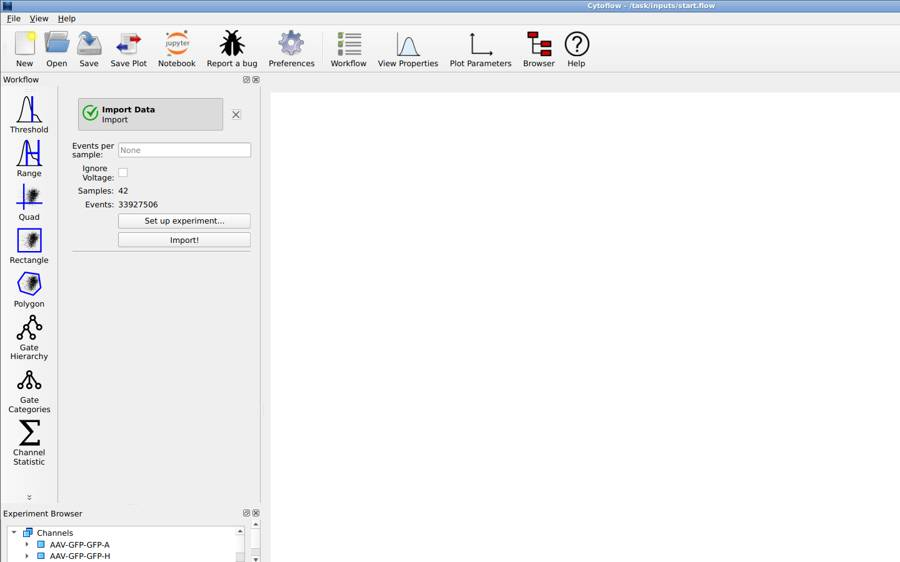
which xdotool wmctrl xwininfo xprop 2>&1; DISPLAY=:1 xwininfo -root -tree 2>/dev/null | head -30; cat $(which cu) | head -60
/usr/bin/xdotool
/usr/bin/xwininfo
/usr/bin/xprop
xwininfo: Window id: 0x21f (the root window) (has no name)
Root window id: 0x21f (the root window) (has no name)
Parent window id: 0x0 (none)
15 children:
0xe00014 "Qt Clipboard Requestor Window": () 3x3+0+0 +0+0
0xe00008 "cytoflow": () 1x1+0+0 +0+0
0xe00004 "Qt Selection Owner for cytoflow": () 3x3+0+0 +0+0
0xc0000e "Openbox": ("" (none)) 1x1+-100+-100 +-100+-100
0xc00062 (has no name): () 1x1+0+0 +0+0
1 child:
0xc00063 (has no name): () 1x1+0+0 +1+1
0xc00060 (has no name): () 1x1+0+0 +0+0
1 child:
0xc00061 (has no name): () 1x1+0+0 +1+1
0xc0005d (has no name): () 1x1+0+0 +0+0
1 child:
0xc0005e (has no name): () 1x1+0+0 +1+1
0xc00059 (has no name): ("OPENBOX_FOCUS_CYCLE_POPUP" "OPENBOX_FOCUS_CYCLE_POPUP") 1x1+0+0 +0+0
3 children:
0xc0005c (has no name): () 1x1+0+0 +1+1
0xc0005b (has no name): () 1x1+0+0 +1+1
0xc0005a (has no name): () 1x1+0+0 +1+1
0xc00056 (has no name): () 1x1+0+0 +0+0
2 children:
0xc00058 (has no name): () 1x1+0+0 +1+1
0xc00057 (has no name): () 1x1+0+0 +1+1
0xc00055 (has no name): () 1x1+0+0 +0+0
0xc00054 (has no name): () 1x1+0+0 +0+0
#!/bin/bash
# Computer-use helper: the agent's only way to act on the screen.
# cu screenshot [path] -> PNG of the screen (default /tmp/screen.png); prints path
# cu click X Y [left|right|double]
# cu move X Y | cu drag X1 Y1 X2 Y2 | cu scroll X Y up|down [N]
# cu type "text" (keystrokes) | cu paste "text" (clipboard) | cu key KEYS (e.g. ctrl+s, Return)
# cu cursor -> current mouse position
export DISPLAY=${DISPLAY:-:1}
cmd=$1; shift
case "$cmd" in
screenshot) out=${1:-/tmp/screen.png}; scrot -o "$out" && echo "$out" ;;
click) xdotool mousemove "$1" "$2"; case "${3:-left}" in
left) xdotool click 1;; right) xdotool click 3;; double) xdotool click --repeat 2 1;; esac ;;
move) xdotool mousemove "$1" "$2" ;;
drag) xdotool mousemove "$1" "$2" mousedown 1 mousemove --sync "$3" "$4" mouseup 1 ;;
scroll) xdotool mousemove "$1" "$2"; b=$([ "$3" = up ] && echo 4 || echo 5); xdotool click --repeat "${4:-3}" $b ;;
type) xdotool type --delay 50 -- "$1" ;;
# paste: put text on the clipboard (detached owner process so it survives this command) then ctrl+v
# paste: own the clipboard (no -loops: Qt asks for TARGETS first, then the text), press ctrl+v,
# give Qt a moment to fetch it, then release. Robust both locally and on Modal.
paste) printf '%s' "$1" | xclip -quiet -selection clipboard -i >/dev/null 2>&1 & cp=$!
sleep 0.3; xdotool key ctrl+v; sleep 1; kill $cp 2>/dev/null; true ;;
key) xdotool key -- "$1" ;;
cursor) xdotool getmouselocation ;;
*) sed -n '2,9p' "$0"; exit 1 ;;
esacexport DISPLAY=:1; xdotool search --name "Cytoflow" | while read w; do echo $w; xdotool getwindowname $w; xdotool getwindowgeometry $w; done
14680068 Qt Selection Owner for cytoflow Window 14680068 Position: 0,0 (screen: 0) Geometry: 3x3 14680072 cytoflow Window 14680072 Position: 0,0 (screen: 0) Geometry: 1x1 14680070 Cytoflow - /task/inputs/start.flow Window 14680070 Position: 2,40 (screen: 0) Geometry: 2082x1171
export DISPLAY=:1; xdotool windowsize 14680070 1438 878; xdotool windowmove 14680070 0 20; sleep 2; xdotool getwindowgeometry 14680070; cu screenshot /tmp/screen.png
{
"file_path": "/tmp/screen.png"
}Window 14680070 Position: 1,40 (screen: 0) Geometry: 1438x878 /tmp/screen.png
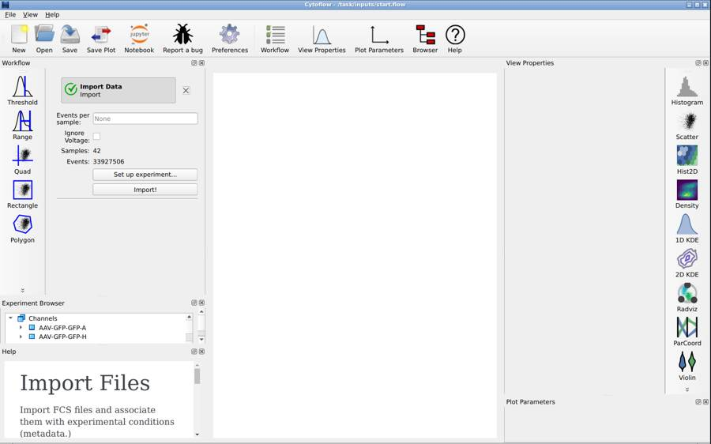
cd /task; python3 - <<'E'
f=open('/task/inputs/raw/Serotype panel_2_Rep2_Group_D5.fcs','rb'); h=f.read(58)
ts=int(h[10:18]);te=int(h[18:26]); f.seek(ts); t=f.read(te-ts+1).decode('latin1'); d=t[0]; p=t[1:].split(d); kv=dict(zip(p[::2],p[1::2]))
import re
for k,v in kv.items():
if re.match(r'\$P\d+',k) : continue
print(k,'=',v[:300])
E$PAR = 16 $TOT = 153195 $MODE = L $DATATYPE = F $BYTEORD = 1,2,3,4 $CYT = 0A29009 Attune NxT Acoustic Focusing Cytometer (Lasers: BRV6Y) $SYS = SEA11065ATTUNE Microsoft Windows 10 Enterprise LTSC $SPILLOVER = 9,BL1-A,RL3-A,VL1-A,BL1-H,RL3-H,VL1-H,BL1-W,RL3-W,VL1-W,1.000000,0.000000,0.000000,0.000000,0.000000,0.000000,0.000000,0.000000,0.000000,0.000000,1.000000,0.000000,0.000000,0.000000,0.000000,0.000000,0.000000,0.000000,0.000000,0.000000,1.000000,0.000000,0.000000,0.000000,0.000000,0.000000,0.000000,0 $BTIM = 10:52:13 $CELLS = NA $COM = NA $CYTSN = 2AFC228071019 $DATE = 06-Mar-2023 $ETIM = 10:53:52 $EXP = NA $FIL = D5.fcs $INST = NA $ORIGINALITY = Original $LOST = 0 $OP = Jeff Huang $PLATEID = NA $PLATENAME = Serotype panel_2 $PROJ = Rep2 $SMNO = Group $SRC = NA $TIMESTEP = 0.001 $VOL = 163000 $WELLID = D5 #CoincidentCount = 2293 #FLOWRATE = 100 #LASER1ASF = 1.07 #LASER1COLOR = Blue #LASER1DELAY = 1100 #LASER2ASF = 1.09 #LASER2COLOR = Red #LASER2DELAY = 1496 #LASER3ASF = 0.88 #LASER3COLOR = Violet #LASER3DELAY = 718 #LASER4ASF = 0.99 #LASER4COLOR = Yellow #LASER4DELAY = 306 #LASERCONFIG = BRV6Y #P10Label = Zombie NIR #P10Target = LiveDead #P11Label = NCAM #P11Target = BV421 #P14Label = GFP #P14Target = AAV-GFP #P15Label = Zombie NIR #P15Target = LiveDead #P16Label = NCAM #P16Target = BV421 #P1Label = NA #P1Target = NA #P4Label = GFP #P4Target = AAV-GFP #P5Label = Zombie NIR #P5Target = LiveDead #P6Label = NCAM #P6Target = BV421 #P9Label = GFP #P9Target = AAV-GFP #PTDATE = 06-Mar-2023 #PTRESULT = Pass #TR1 = OR_FSC,25000 #WIDTHTHRESHOLD = 1000 #WINEXT = 0 HOSTID = SEA11065ATTUNE $BEGINDATA = 000000008192 $ENDDATA = 000009812671 $NEXTDATA = 000000000000 $BEGINSTEXT = 000000000000 $ENDSTEXT = 000000000000 $BEGINANALYSIS = 000000000000 $ENDANALYSIS = 000000000000
cd /task; mkdir -p /tmp/work; python3 - <<'E'
import csv,re,datetime
rows=list(csv.DictReader(open('/task/inputs/plate_layout.csv')))
out=[]
ref=None
for r in rows:
f=open('/task/inputs/raw/'+r['file'],'rb'); h=f.read(58)
ts=int(h[10:18]);te=int(h[18:26]); f.seek(ts); t=f.read(te-ts+1).decode('latin1'); d=t[0]; p=t[1:].split(d); kv=dict(zip(p[::2],p[1::2]))
b=datetime.datetime.strptime(kv['$BTIM'],'%H:%M:%S'); e=datetime.datetime.strptime(kv['$ETIM'],'%H:%M:%S')
dur=(e-b).seconds
volts=[kv.get(f'$P{i}V') for i in (2,3,4,5,6)]
names=tuple((kv.get(f'$P{i}N'),kv.get(f'$P{i}S')) for i in range(1,17))
if ref is None: ref=names
print(r['well'],r['dose_vg_per_cell'],r['replicate'],kv['$TOT'],kv['$BTIM'],kv['$ETIM'],dur,'vol',kv['$VOL'],'fr',kv['#FLOWRATE'],'coinc',kv['#CoincidentCount'],kv['$WELLID'],kv['$FIL'],kv['$DATE'],volts,kv.get('#TR1'),'names_same' if names==ref else 'NAMES DIFF', kv.get('$LOST'), kv['$PLATENAME'],kv['$PROJ'], kv.get('#PTRESULT'), kv.get('$OP'))
out.append(dict(well=r['well'],file=r['file'],tot=int(kv['$TOT']),btim=kv['$BTIM'],etim=kv['$ETIM'],dur=dur,vol=float(kv['$VOL']),flowrate=kv['#FLOWRATE'],coinc=int(kv['#CoincidentCount'])))
import json; json.dump(out,open('/tmp/work/hdr.json','w'))
print(sum(o['tot'] for o in out))
EA1 5000 1 978726 09:28:23 09:29:09 46 vol 155000 fr 200 coinc 172519 A1 A1.fcs 06-Mar-2023 ['30', '300', '250', '300', '300'] OR_FSC,25000 names_same 0 Serotype panel_2 Rep2 Pass Jeff Huang A2 5000 2 935707 09:29:39 09:31:17 98 vol 164000 fr 100 coinc 96386 A2 A2.fcs 06-Mar-2023 ['30', '300', '250', '300', '300'] OR_FSC,25000 names_same 0 Serotype panel_2 Rep2 Pass Jeff Huang A3 10000 1 925910 09:31:46 09:33:24 98 vol 163000 fr 100 coinc 90279 A3 A3.fcs 06-Mar-2023 ['30', '300', '250', '300', '300'] OR_FSC,25000 names_same 0 Serotype panel_2 Rep2 Pass Jeff Huang A4 10000 2 892332 09:33:53 09:35:31 98 vol 163000 fr 100 coinc 89020 A4 A4.fcs 06-Mar-2023 ['30', '300', '250', '300', '300'] OR_FSC,25000 names_same 0 Serotype panel_2 Rep2 Pass Jeff Huang A5 50000 1 986514 09:36:00 09:37:39 99 vol 164000 fr 100 coinc 104344 A5 A5.fcs 06-Mar-2023 ['30', '300', '250', '300', '300'] OR_FSC,25000 names_same 0 Serotype panel_2 Rep2 Pass Jeff Huang A6 50000 2 755396 09:38:09 09:39:46 97 vol 162000 fr 100 coinc 61627 A6 A6.fcs 06-Mar-2023 ['30', '300', '250', '300', '300'] OR_FSC,25000 names_same 0 Serotype panel_2 Rep2 Pass Jeff Huang A7 5000 1 848859 09:40:14 09:41:53 99 vol 164000 fr 100 coinc 81744 A7 A7.fcs 06-Mar-2023 ['30', '300', '250', '300', '300'] OR_FSC,25000 names_same 0 Serotype panel_2 Rep2 Pass Jeff Huang A8 5000 2 710140 09:42:21 09:44:00 99 vol 164000 fr 100 coinc 56510 A8 A8.fcs 06-Mar-2023 ['30', '300', '250', '300', '300'] OR_FSC,25000 names_same 0 Serotype panel_2 Rep2 Pass Jeff Huang A9 10000 1 958681 09:44:28 09:46:06 98 vol 164000 fr 100 coinc 108852 A9 A9.fcs 06-Mar-2023 ['30', '300', '250', '300', '300'] OR_FSC,25000 names_same 0 Serotype panel_2 Rep2 Pass Jeff Huang A10 10000 2 870505 09:46:35 09:48:14 99 vol 163000 fr 100 coinc 86870 A10 A10.fcs 06-Mar-2023 ['30', '300', '250', '300', '300'] OR_FSC,25000 names_same 0 Serotype panel_2 Rep2 Pass Jeff Huang A11 50000 1 844586 09:48:42 09:50:21 99 vol 164000 fr 100 coinc 74178 A11 A11.fcs 06-Mar-2023 ['30', '300', '250', '300', '300'] OR_FSC,25000 names_same 0 Serotype panel_2 Rep2 Pass Jeff Huang A12 50000 2 947510 09:50:50 09:52:28 98 vol 164000 fr 100 coinc 94783 A12 A12.fcs 06-Mar-2023 ['30', '300', '250', '300', '300'] OR_FSC,25000 names_same 0 Serotype panel_2 Rep2 Pass Jeff Huang B1 5000 1 733754 09:52:57 09:54:36 99 vol 164000 fr 100 coinc 64948 B1 B1.fcs 06-Mar-2023 ['30', '300', '250', '300', '300'] OR_FSC,25000 names_same 0 Serotype panel_2 Rep2 Pass Jeff Huang B2 5000 2 728886 09:55:04 09:56:43 99 vol 164000 fr 100 coinc 64652 B2 B2.fcs 06-Mar-2023 ['30', '300', '250', '300', '300'] OR_FSC,25000 names_same 0 Serotype panel_2 Rep2 Pass Jeff Huang B3 10000 1 667298 09:57:11 09:58:50 99 vol 164000 fr 100 coinc 50572 B3 B3.fcs 06-Mar-2023 ['30', '300', '250', '300', '300'] OR_FSC,25000 names_same 0 Serotype panel_2 Rep2 Pass Jeff Huang B4 10000 2 598212 09:59:18 10:00:56 98 vol 164000 fr 100 coinc 40161 B4 B4.fcs 06-Mar-2023 ['30', '300', '250', '300', '300'] OR_FSC,25000 names_same 0 Serotype panel_2 Rep2 Pass Jeff Huang B5 50000 1 837561 10:01:24 10:03:03 99 vol 164000 fr 100 coinc 73351 B5 B5.fcs 06-Mar-2023 ['30', '300', '250', '300', '300'] OR_FSC,25000 names_same 0 Serotype panel_2 Rep2 Pass Jeff Huang B6 50000 2 877336 10:03:31 10:05:10 99 vol 164000 fr 100 coinc 79492 B6 B6.fcs 06-Mar-2023 ['30', '300', '250', '300', '300'] OR_FSC,25000 names_same 0 Serotype panel_2 Rep2 Pass Jeff Huang B7 5000 1 954909 10:05:38 10:07:17 99 vol 164000 fr 100 coinc 97979 B7 B7.fcs 06-Mar-2023 ['30', '300', '250', '300', '300'] OR_FSC,25000 names_same 0 Serotype panel_2 Rep2 Pass Jeff Huang B8 5000 2 918778 10:07:46 10:09:24 98 vol 163000 fr 100 coinc 91516 B8 B8.fcs 06-Mar-2023 ['30', '300', '250', '300', '300'] OR_FSC,25000 names_same 0 Serotype panel_2 Rep2 Pass Jeff Huang B9 10000 1 862070 10:09:53 10:11:32 99 vol 164000 fr 100 coinc 79481 B9 B9.fcs 06-Mar-2023 ['30', '300', '250', '300', '300'] OR_FSC,25000 names_same 0 Serotype panel_2 Rep2 Pass Jeff Huang B10 10000 2 1083648 10:12:00 10:13:39 99 vol 163000 fr 100 coinc 119109 B10 B10.fcs 06-Mar-2023 ['30', '300', '250', '300', '300'] OR_FSC,25000 names_same 0 Serotype panel_2 Rep2 Pass Jeff Huang B11 50000 1 988574 10:14:08 10:15:47 99 vol 164000 fr 100 coinc 98351 B11 B11.fcs 06-Mar-2023 ['30', '300', '250', '300', '300'] OR_FSC,25000 names_same 0 Serotype panel_2 Rep2 Pass Jeff Huang B12 50000 2 904103 10:16:15 10:17:54 99 vol 163000 fr 100 coinc 84211 B12 B12.fcs 06-Mar-2023 ['30', '300', '250', '300', '300'] OR_FSC,25000 names_same 0 Serotype panel_2 Rep2 Pass Jeff Huang C1 5000 1 624718 10:18:23 10:20:01 98 vol 163000 fr 100 coinc 38396 C1 C1.fcs 06-Mar-2023 ['30', '300', '250', '300', '300'] OR_FSC,25000 names_same 0 Serotype panel_2 Rep2 Pass Jeff Huang C2 5000 2 695572 10:20:29 10:22:08 99 vol 163000 fr 100 coinc 48657 C2 C2.fcs 06-Mar-2023 ['30', '300', '250', '300', '300'] OR_FSC,25000 names_same 0 Serotype panel_2 Rep2 Pass Jeff Huang C3 10000 1 656321 10:22:36 10:24:14 98 vol 163000 fr 100 coinc 47944 C3 C3.fcs 06-Mar-2023 ['30', '300', '250', '300', '300'] OR_FSC,25000 names_same 0 Serotype panel_2 Rep2 Pass Jeff Huang C4 10000 2 679504 10:24:43 10:26:21 98 vol 164000 fr 100 coinc 48064 C4 C4.fcs 06-Mar-2023 ['30', '300', '250', '300', '300'] OR_FSC,25000 names_same 0 Serotype panel_2 Rep2 Pass Jeff Huang C5 50000 1 689593 10:26:49 10:28:28 99 vol 164000 fr 100 coinc 47895 C5 C5.fcs 06-Mar-2023 ['30', '300', '250', '300', '300'] OR_FSC,25000 names_same 0 Serotype panel_2 Rep2 Pass Jeff Huang C6 50000 2 891011 10:28:56 10:30:34 98 vol 163000 fr 100 coinc 79754 C6 C6.fcs 06-Mar-2023 ['30', '300', '250', '300', '300'] OR_FSC,25000 names_same 0 Serotype panel_2 Rep2 Pass Jeff Huang C7 5000 1 649735 10:31:03 10:32:42 99 vol 164000 fr 100 coinc 42596 C7 C7.fcs 06-Mar-2023 ['30', '300', '250', '300', '300'] OR_FSC,25000 names_same 0 Serotype panel_2 Rep2 Pass Jeff Huang C8 5000 2 639518 10:33:10 10:34:49 99 vol 164000 fr 100 coinc 41050 C8 C8.fcs 06-Mar-2023 ['30', ' … [2,005 more characters not shown]
cu click 408 712; sleep 1; cu click 408 613; sleep 1; cu click 1391 390; sleep 3; cu screenshot /tmp/screen.png
{
"file_path": "/tmp/screen.png"
}/tmp/screen.png
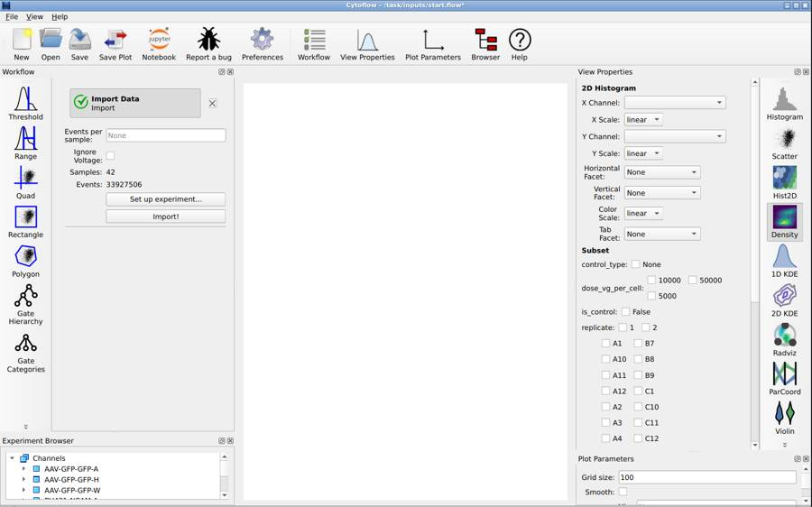
cu click 1196 182; sleep 1; cu screenshot /tmp/screen.png
{
"file_path": "/tmp/screen.png"
}/tmp/screen.png
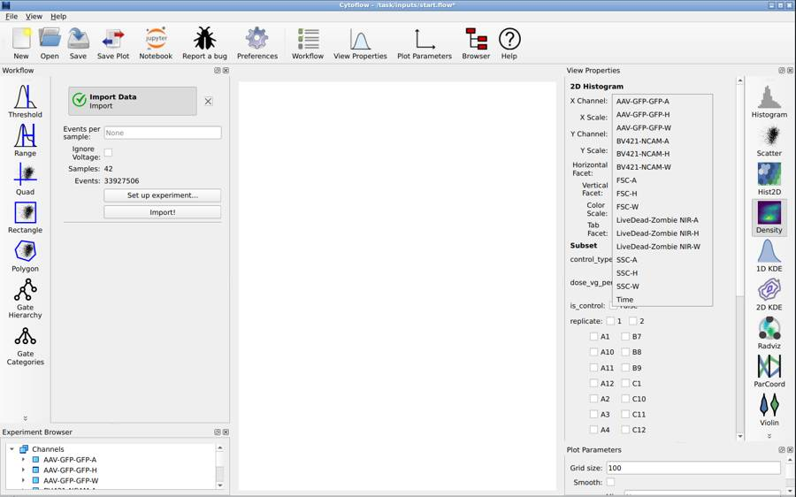
cu click 1133 327; sleep 1; cu click 1196 242; sleep 1; cu screenshot /tmp/screen.png
{
"file_path": "/tmp/screen.png"
}/tmp/screen.png
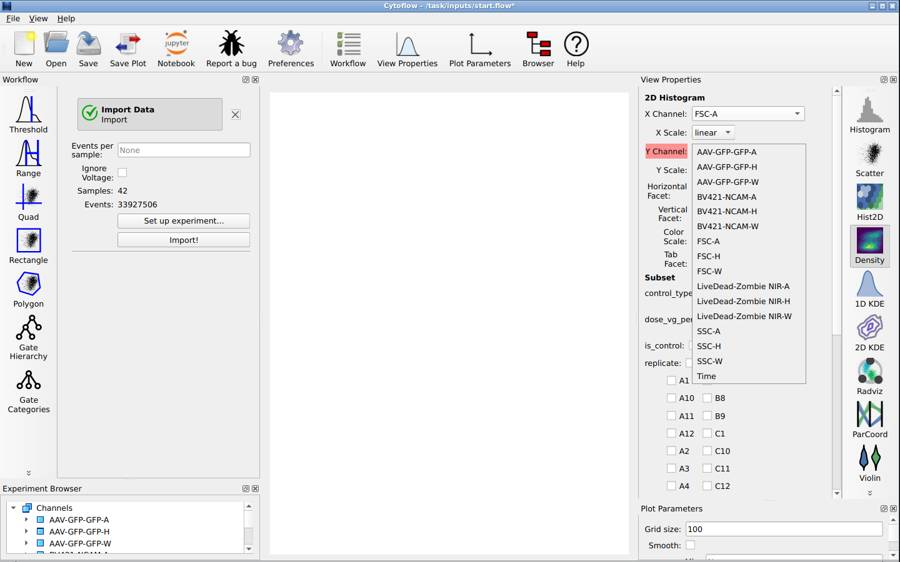
cu click 1133 531; sleep 20; cu screenshot /tmp/screen.png
{
"file_path": "/tmp/screen.png"
}/tmp/screen.png

for i in 1 2 3 4 5 6; do sleep 10; free -m | awk 'NR==2{printf "used %s ",$3} NR==3{print "swap",$3}'; done; cu screenshot /tmp/screen.png{
"file_path": "/tmp/screen.png"
}used 7921 swap 12287 used 7820 swap 6859 used 7832 swap 10750 used 7830 swap 12547 used 7948 swap 15570 used 7918 swap 14450 /tmp/screen.png
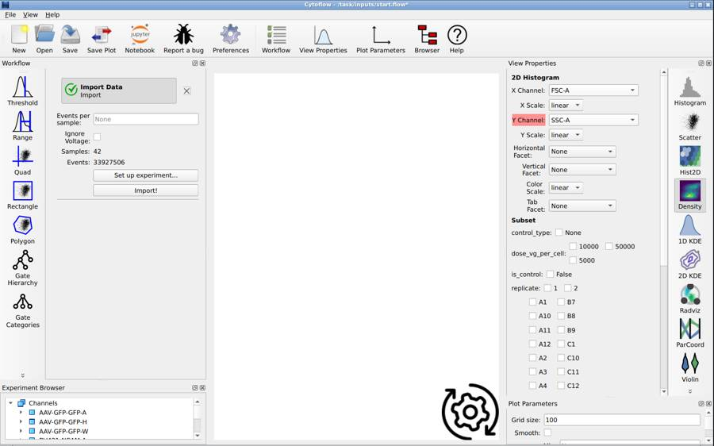
for i in $(seq 1 12); do sleep 10; free -m | awk 'NR==2{printf "used %s ",$3} NR==3{printf "swap %s ",$3}'; ps -o rss=,pcpu=,stat= -C cytoflow | sort -n | tail -1; done; cu screenshot /tmp/screen.png{
"file_path": "/tmp/screen.png"
}used 7897 swap 21739 7399292 29.1 Rl used 5487 swap 10598 1332 1.3 Sl used 461 swap 592 38500 1.3 Sl used 456 swap 591 38508 1.3 Sl used 447 swap 591 38508 1.2 Sl used 446 swap 591 38688 1.2 Sl used 447 swap 591 38688 1.2 Sl used 453 swap 591 38688 1.1 Sl used 450 swap 591 38688 1.1 Sl used 450 swap 591 38688 1.1 Sl used 444 swap 590 38688 1.1 Sl used 451 swap 590 38688 1.0 Sl /tmp/screen.png
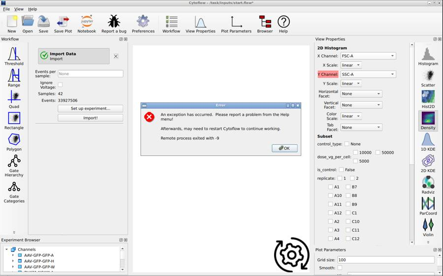
date; fallocate -l 64G /swapfile2 && chmod 600 /swapfile2 && mkswap /swapfile2 >/dev/null && swapon /swapfile2; free -g | tail -1; cu click 925 483; sleep 1; cu click 21 30; sleep 1; cu click 47 196; sleep 3; cu screenshot /tmp/screen.png
{
"file_path": "/tmp/screen.png"
}Tue Nov 10 21:09:40 UTC 2026 Swap: 87 0 87 /tmp/screen.png

export DISPLAY=:1; sleep 12; W=$(xdotool search --name "Cytometry analysis|Cytoflow -" | tail -1); for w in $(xdotool search --name "Cyto"); do n=$(xdotool getwindowname $w); g=$(xdotool getwindowgeometry $w | tail -1); echo "$w $n $g"; done
14680068 Qt Selection Owner for cytoflow Geometry: 3x3 14680072 cytoflow Geometry: 1x1 14680070 Cytometry analysis - Cytoflow Geometry: 2082x1171
export DISPLAY=:1; xdotool windowsize 14680070 1438 878; xdotool windowmove 14680070 0 20; sleep 2; cu screenshot /tmp/screen.png
{
"file_path": "/tmp/screen.png"
}/tmp/screen.png
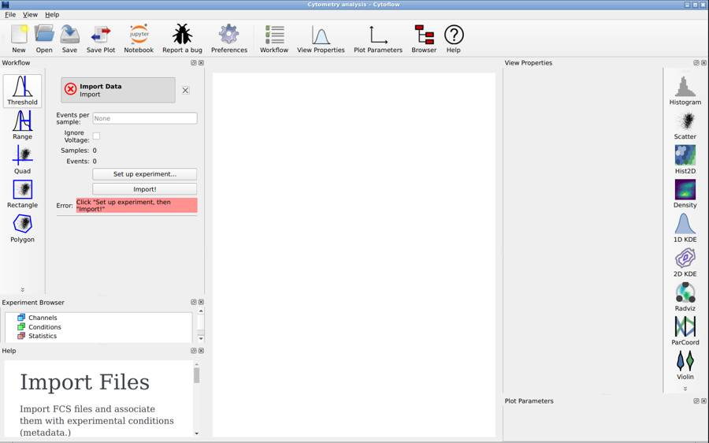
cu click 408 712; sleep 1; cu click 408 613; sleep 1; cu click 89 75; sleep 2; cu screenshot /tmp/screen.png
{
"file_path": "/tmp/screen.png"
}/tmp/screen.png
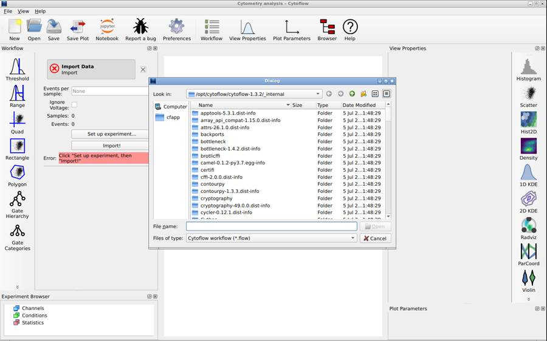
cu click 714 597; cu paste "/task/inputs/start.flow"; sleep 1; cu key Return; sleep 3; cu screenshot /tmp/screen.png
{
"file_path": "/tmp/screen.png"
}/tmp/screen.png
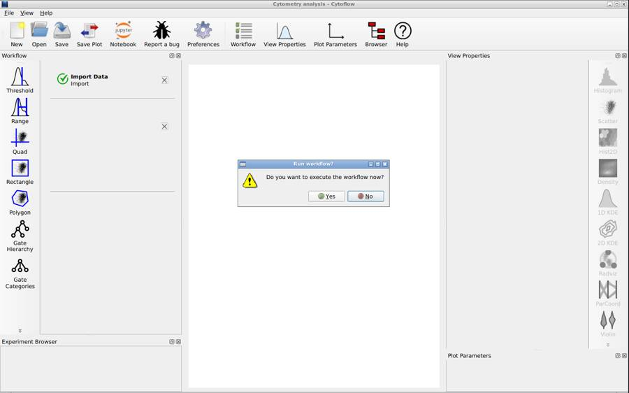
cu click 747 449; for i in $(seq 1 10); do sleep 6; free -m | awk 'NR==2{printf "used %s ",$3} NR==3{printf "swap %s ",$3}'; ps -o rss=,pcpu= -C cytoflow | sort -n | tail -1; done; cu click 240 183; sleep 3; cu screenshot /tmp/screen.png{
"file_path": "/tmp/screen.png"
}used 6619 swap 183 6025544 16.6 used 7419 swap 183 6788660 26.4 used 7478 swap 183 6874948 34.2 used 7536 swap 183 6920836 40.5 used 7813 swap 1995 7370112 43.3 used 7900 swap 3972 7664740 44.3 used 4862 swap 3906 4576864 46.2 used 3472 swap 3101 2997704 45.4 used 3430 swap 3101 2997704 42.5 used 3420 swap 3101 2997704 39.9 /tmp/screen.png
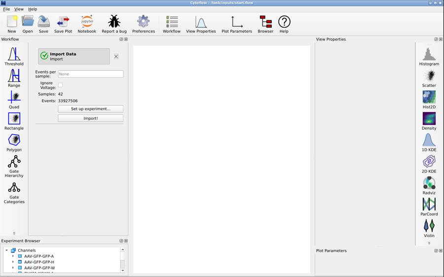
cu click 1391 390; sleep 2; cu click 1074 722; sleep 0.5; cu click 1074 750; sleep 0.5; cu click 1074 778; sleep 0.5; cu click 1196 182; sleep 1; cu click 1133 327; sleep 1; cu click 1196 242; sleep 1; cu click 1133 531; for i in $(seq 1 6); do sleep 5; free -m | awk 'NR==2{printf "used %s ",$3} NR==3{printf "swap %s ",$3}'; ps -o rss=,pcpu= -C cytoflow | sort -n | tail -1; done; cu screenshot /tmp/screen.png{
"file_path": "/tmp/screen.png"
}used 6719 swap 3010 5856812 37.3 used 6562 swap 3010 5873284 40.0 used 7865 swap 3074 7383828 42.3 used 4353 swap 3952 3794408 43.4 used 4359 swap 3951 3794408 41.9 used 4353 swap 3951 3794408 40.4 /tmp/screen.png
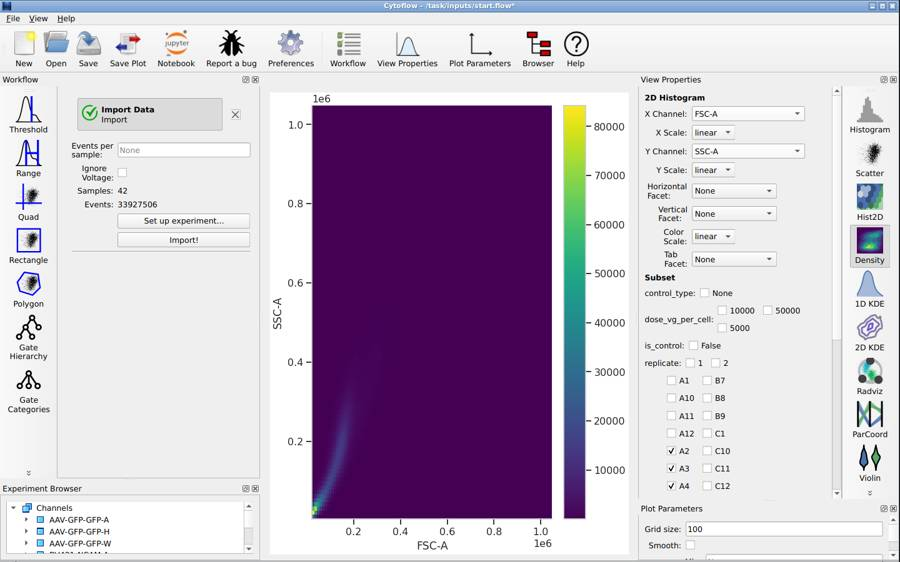
cu click 1140 212; sleep 1; cu screenshot /tmp/screen.png
{
"file_path": "/tmp/screen.png"
}/tmp/screen.png
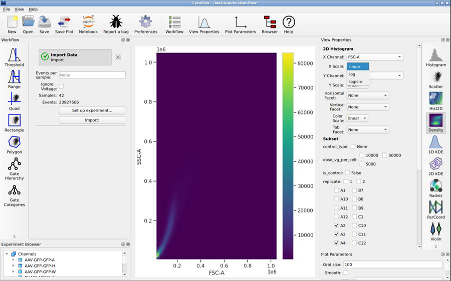
cu click 1125 237; sleep 12; cu click 1140 272; sleep 1; cu click 1125 297; sleep 12; cu click 1140 379; sleep 1; cu click 1125 404; sleep 15; cu screenshot /tmp/screen.png
{
"file_path": "/tmp/screen.png"
}/tmp/screen.png

sleep 10; cu screenshot /tmp/screen.png
{
"file_path": "/tmp/screen.png"
}/tmp/screen.png
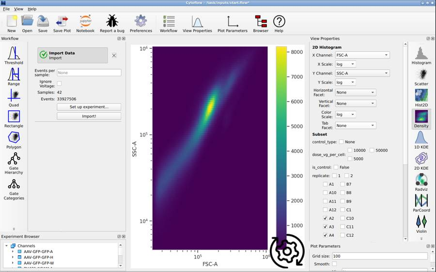
sleep 8; cu screenshot /tmp/screen.png; date
{
"file_path": "/tmp/screen.png"
}/tmp/screen.png Tue Nov 10 21:13:42 UTC 2026
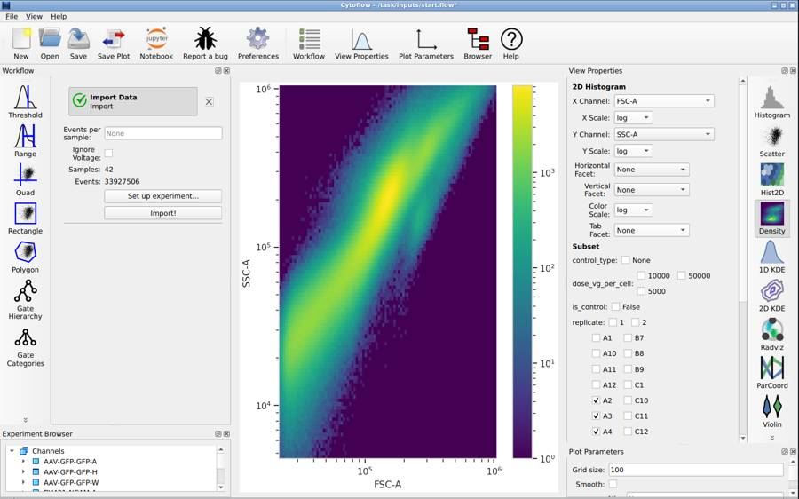
cu click 45 462; sleep 4; cu screenshot /tmp/screen.png
{
"file_path": "/tmp/screen.png"
}/tmp/screen.png
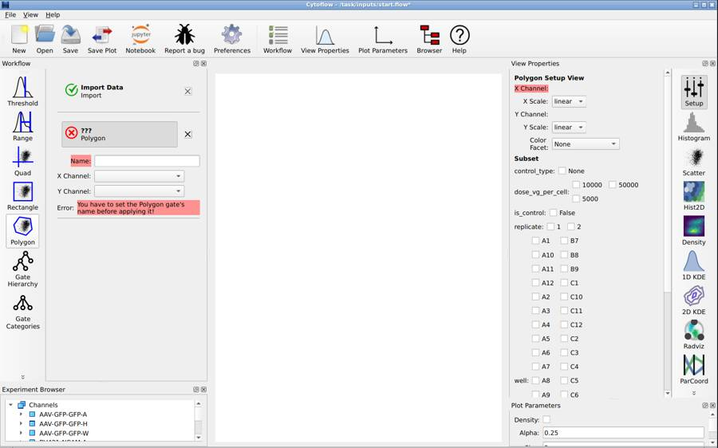
cu click 1140 203; sleep 1; cu click 1125 228; sleep 1; cu click 1140 255; sleep 1; cu click 1125 280; sleep 1; cu click 1074 596; sleep 0.5; cu click 1074 624; sleep 0.5; cu click 1074 652; sleep 0.5; cu click 1096 843; sleep 0.5; cu click 295 323; cu type "Cells"; sleep 1; cu click 279 353; sleep 1; cu screenshot /tmp/screen.png
{
"file_path": "/tmp/screen.png"
}/tmp/screen.png
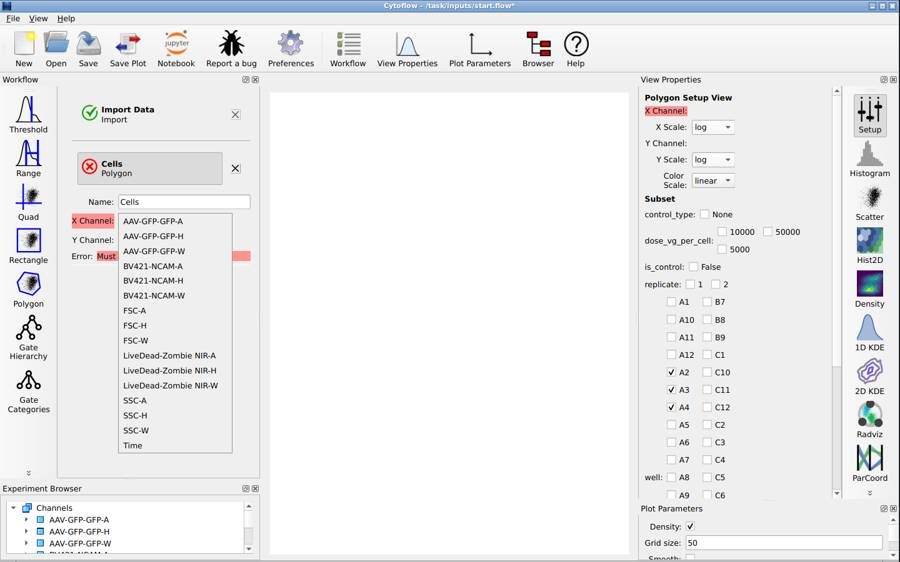
cu click 215 497; sleep 1; cu click 279 384; sleep 1; cu click 215 673; sleep 1; cu click 1140 289; sleep 1; cu click 1125 314; sleep 25; cu screenshot /tmp/screen.png
{
"file_path": "/tmp/screen.png"
}/tmp/screen.png
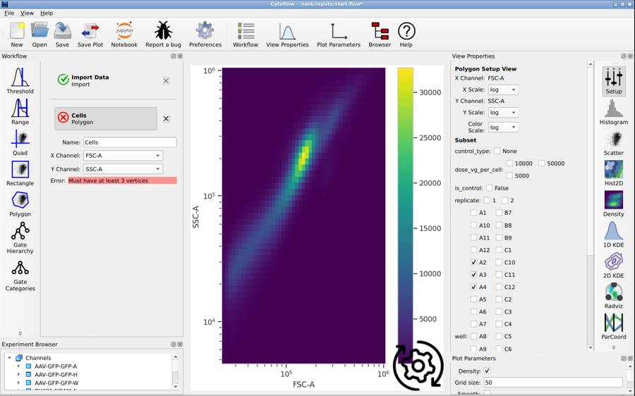
sleep 15; cu screenshot /tmp/screen.png
{
"file_path": "/tmp/screen.png"
}/tmp/screen.png
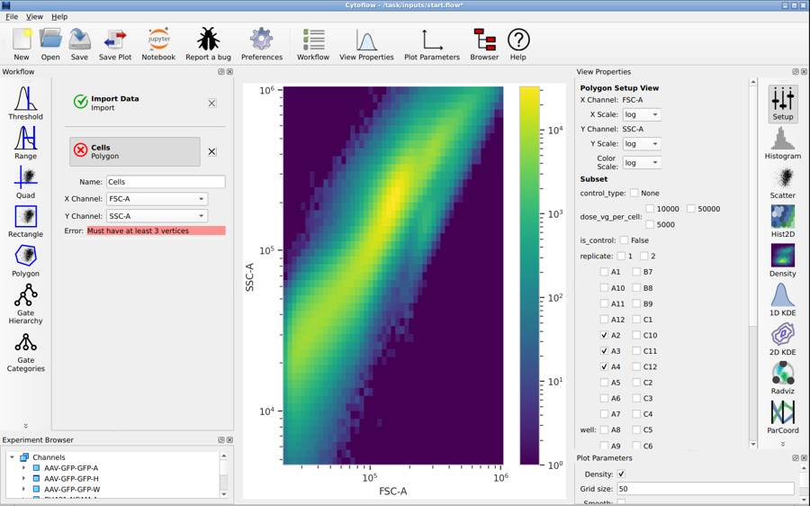
cd /tmp && python3 - <<'E'
from matplotlib.image import imread
import numpy as np
im=imread('/tmp/screen.png')[:,:,:3]
g=im.mean(axis=2)
# x ticks: scan rows 828..838
for y in (829,831,834):
xs=[x for x in range(495,900) if g[y,x]<0.5]
print('row',y,xs)
for x in (494,497,500):
ys=[y for y in range(150,832) if g[y,x]<0.5]
print('col',x,ys)
Erow 829 [536, 565, 587, 606, 621, 635, 647, 657, 658, 728, 769, 798, 820, 839, 854, 868, 880, 889, 890] row 831 [536, 565, 587, 606, 621, 635, 647, 657, 658, 728, 769, 798, 820, 839, 854, 868, 880, 889, 890] row 834 [657, 658, 889, 890] col 494 [159, 160, 444, 445, 730, 731] col 497 [159, 160, 444, 445, 730, 731] col 500 [159, 160, 173, 188, 204, 223, 246, 274, 309, 360, 444, 445, 459, 473, 490, 509, 531, 559, 595, 645, 730, 731, 744, 759, 775, 794, 817] Shell cwd was reset to /task
export DISPLAY=:1; pts="614 444 647 498 727 458 820 331 884 245 884 165 809 165 705 203"; echo "$pts" | while read x y; do xdotool mousemove $x $y; sleep 0.4; xdotool click 1; sleep 0.6; done; xdotool mousemove 622 331; sleep 0.4; xdotool click --repeat 2 --delay 80 1; sleep 3; cu screenshot /tmp/screen.png
{
"file_path": "/tmp/screen.png"
}/tmp/screen.png
export DISPLAY=:1; xdotool mousemove 623 331; sleep 0.3; xdotool click --repeat 2 --delay 20 1; sleep 4; cu screenshot /tmp/screen.png
{
"file_path": "/tmp/screen.png"
}/tmp/screen.png
export DISPLAY=:1; xdotool mousemove 618 440; sleep 0.3; xdotool mousemove 614 444; sleep 0.5; xdotool click 1; sleep 5; cu screenshot /tmp/screen.png
{
"file_path": "/tmp/screen.png"
}/tmp/screen.png
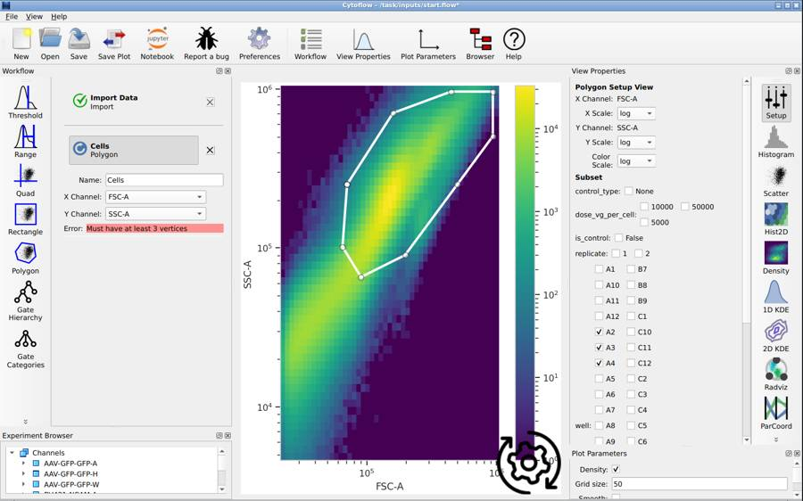
sleep 20; cu screenshot /tmp/screen.png; free -m | awk 'NR==2{printf "used %s ",$3} NR==3{printf "swap %s\n",$3}'{
"file_path": "/tmp/screen.png"
}/tmp/screen.png used 6733 swap 5530
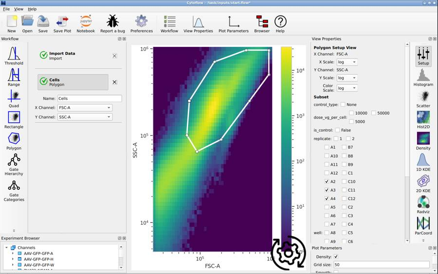
cu click 21 30; sleep 1; cu click 66 101; sleep 2; cu screenshot /tmp/screen.png
{
"file_path": "/tmp/screen.png"
}/tmp/screen.png
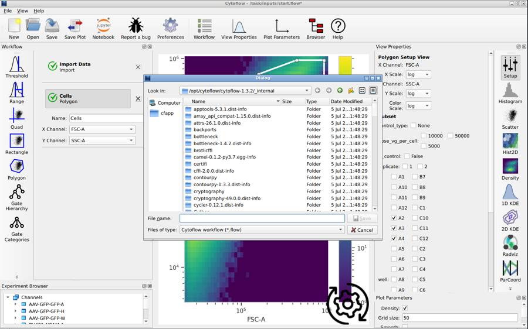
ls -ld /task/outputs; cu click 714 597; cu paste "/task/outputs/workflow.flow"; sleep 1; cu key Return; sleep 3; cu screenshot /tmp/screen.png; ls -la /task/outputs; grep -n -A30 "polygon" /task/outputs/workflow.flow | head -60
drwxrwsrwx 2 agent task 4096 Nov 5 08:15 /task/outputs /tmp/screen.png total 44 drwxrwsrwx 2 agent task 4096 Nov 10 21:17 . drwxr-xr-x 4 root root 4096 Nov 5 08:15 .. -rw-rw-r-- 1 cfapp task 34003 Nov 10 21:17 workflow.flow 1226: current_view: &id005 !polygon-view;3 1227- current_plot: null 1228- huefacet: '' 1229- huescale: log 1230: op: &id004 !polygon;1 1231- name: Cells 1232- vertices: 1233- - !!python/tuple 1234- - 65118.101576136905 1235- - 101620.38052022523 1236- - !!python/tuple 1237- - 90523.4518950254 1238- - 65666.28768995298 1239- - !!python/tuple 1240- - 197937.06363316832 1241- - 90349.20541740133 1242- - !!python/tuple 1243- - 499898.2506566149 1244- - 251677.9025156898 1245- - !!python/tuple 1246- - 936674.1860516297 1247- - 505285.77321733284 1248- - !!python/tuple 1249- - 936674.1860516297 1250- - 964600.997604261 1251- - !!python/tuple 1252- - 446380.2351553978 1253- - 964600.997604261 1254- - !!python/tuple 1255- - 159457.30070791463 1256- - 706989.1122914888 1257- - !!python/tuple 1258- - 70707.67787468892 1259- - 251677.9025156898 1260- - !!python/tuple -- 1273: plot_params: !polygon-params;1 1274- alpha: 0.25 1275- col_wrap: null 1276- density: true 1277- despine: true 1278- gridsize: 50 1279- huelabel: '' 1280- legend: true 1281- marker: o 1282- max_quantile: 1.0 1283- min_quantile: 0.001 1284- s: 2 1285- sharex: true 1286- sharey: true 1287- smoothed: false 1288- smoothed_sigma: 1.0 1289- sns_context: notebook 1290- sns_style: whitegrid 1291- title: '' 1292- xlabel: '' 1293- xlim: *id002 1294- ylabel: '' 1295- ylim: *id003 1296- subset_list:
cu click 45 462; sleep 4; cu screenshot /tmp/screen.png
{
"file_path": "/tmp/screen.png"
}/tmp/screen.png
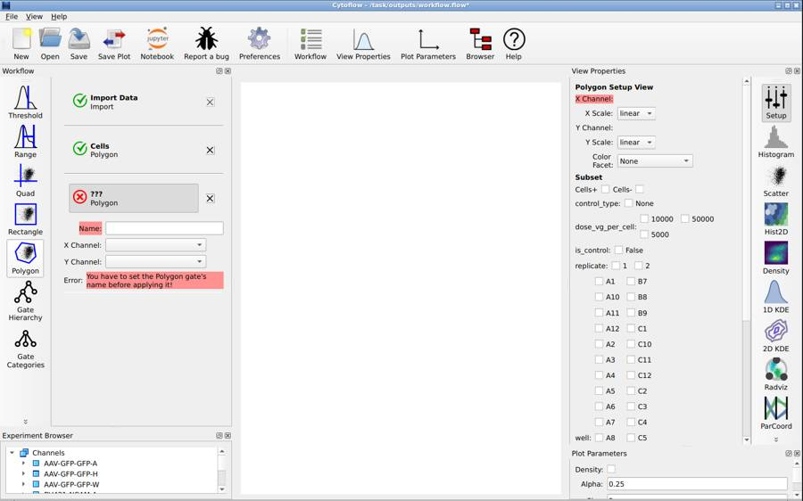
cu click 1140 203; sleep 1; cu click 1125 228; sleep 1; cu click 1140 255; sleep 1; cu click 1125 280; sleep 1; cu click 1086 340; sleep 0.5; cu click 1074 618; sleep 0.5; cu click 1074 646; sleep 0.5; cu click 1074 674; sleep 0.5; cu click 1096 843; sleep 0.5; cu click 295 410; cu type "Singlets"; sleep 1; cu click 279 440; sleep 1; cu click 215 753; sleep 1; cu click 279 470; sleep 1; cu screenshot /tmp/screen.png
{
"file_path": "/tmp/screen.png"
}/tmp/screen.png
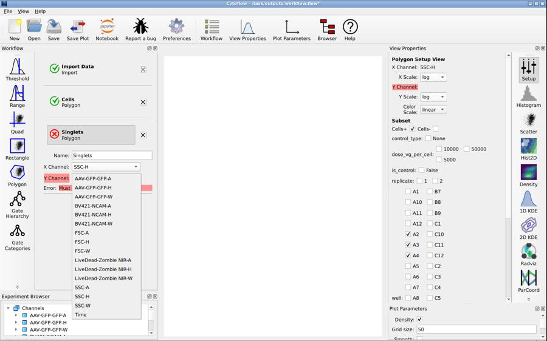
cu key Escape; sleep 0.5; cu click 1140 289; sleep 1; cu click 1125 314; sleep 1; cu click 1255 869 double; sleep 0.3; cu key ctrl+a; cu type "100"; cu key Tab; sleep 1; cu click 279 470; sleep 1; cu click 215 758; sleep 30; cu screenshot /tmp/screen.png
{
"file_path": "/tmp/screen.png"
}/tmp/screen.png
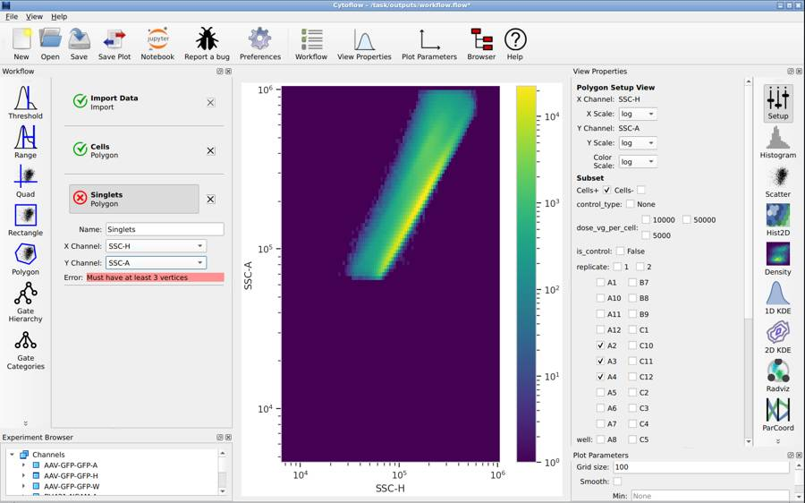
cd /tmp && python3 - <<'E'
from matplotlib.image import imread
import numpy as np
im=imread('/tmp/screen.png')[:,:,:3]
for y in (829,831):
print('row',y,[x for x in range(495,900) if im[y,x].mean()<0.5])
print('col',[y for y in range(150,832) if im[y,497].mean()<0.5])
G=im[:,:,1]
for y in range(170,500,20):
row=G[y,505:893]
xm=int(np.argmax(row))+505
# left extents where G falls below thresholds
def left(th):
x=xm
while x>505 and G[y,x]>th: x-=1
return x
def right(th):
x=xm
while x<892 and G[y,x]>th: x+=1
return x
print(y, 'ridge',xm, 'Gmax %.2f'%row.max(), 'L(.75)',left(.75),'L(.6)',left(.6),'L(.45)',left(.45),'L(.2)',left(.2),'R(.6)',right(.6),'R(.2)',right(.2))
Erow 829 [510, 520, 529, 536, 537, 591, 622, 644, 661, 675, 687, 697, 706, 713, 714, 767, 798, 820, 837, 851, 863, 873, 882, 889, 890] row 831 [510, 520, 529, 536, 537, 591, 622, 644, 661, 675, 687, 697, 706, 713, 714, 767, 798, 820, 837, 851, 863, 873, 882, 889, 890] col [159, 160, 444, 445, 730, 731] 170 ridge 795 Gmax 0.62 L(.75) 795 L(.6) 778 L(.45) 763 L(.2) 747 R(.6) 815 R(.2) 847 190 ridge 779 Gmax 0.67 L(.75) 779 L(.6) 766 L(.45) 755 L(.2) 743 R(.6) 839 R(.2) 851 210 ridge 783 Gmax 0.73 L(.75) 783 L(.6) 759 L(.45) 747 L(.2) 735 R(.6) 835 R(.2) 847 230 ridge 775 Gmax 0.76 L(.75) 774 L(.6) 751 L(.45) 739 L(.2) 727 R(.6) 827 R(.2) 835 250 ridge 767 Gmax 0.78 L(.75) 759 L(.6) 743 L(.45) 731 L(.2) 719 R(.6) 819 R(.2) 827 270 ridge 795 Gmax 0.83 L(.75) 751 L(.6) 735 L(.45) 723 L(.2) 711 R(.6) 811 R(.2) 815 290 ridge 787 Gmax 0.87 L(.75) 743 L(.6) 727 L(.45) 719 L(.2) 703 R(.6) 799 R(.2) 803 310 ridge 779 Gmax 0.89 L(.75) 739 L(.6) 723 L(.45) 707 L(.2) 699 R(.6) 791 R(.2) 795 330 ridge 767 Gmax 0.90 L(.75) 739 L(.6) 715 L(.45) 703 L(.2) 687 R(.6) 783 R(.2) 783 350 ridge 756 Gmax 0.91 L(.75) 731 L(.6) 707 L(.45) 695 L(.2) 683 R(.6) 771 R(.2) 775 370 ridge 748 Gmax 0.91 L(.75) 723 L(.6) 695 L(.45) 683 L(.2) 672 R(.6) 760 R(.2) 764 390 ridge 736 Gmax 0.90 L(.75) 715 L(.6) 687 L(.45) 676 L(.2) 664 R(.6) 748 R(.2) 752 410 ridge 724 Gmax 0.90 L(.75) 703 L(.6) 680 L(.45) 668 L(.2) 648 R(.6) 736 R(.2) 744 430 ridge 712 Gmax 0.89 L(.75) 695 L(.6) 668 L(.45) 656 L(.2) 640 R(.6) 724 R(.2) 732 450 ridge 700 Gmax 0.88 L(.75) 687 L(.6) 656 L(.45) 644 L(.2) 636 R(.6) 712 R(.2) 720 470 ridge 688 Gmax 0.87 L(.75) 680 L(.6) 652 L(.45) 636 L(.2) 624 R(.6) 700 R(.2) 708 490 ridge 677 Gmax 0.79 L(.75) 676 L(.6) 664 L(.45) 632 L(.2) 620 R(.6) 688 R(.2) 692 Shell cwd was reset to /task
cd /tmp && python3 - <<'E'
from matplotlib.image import imread
import numpy as np
im=imread('/tmp/screen.png')[:,:,:3]
G=im[:,:,1]
for y in (250,300,350,400,450):
print(y,' '.join('%d:%.2f'%(x,G[y,x]) for x in range(640,860,4) if G[y,x]>0.05))
E250 708:0.10 712:0.10 720:0.25 724:0.29 728:0.40 732:0.47 736:0.51 740:0.56 744:0.61 748:0.64 752:0.68 756:0.71 760:0.75 764:0.78 768:0.78 772:0.78 776:0.78 780:0.77 784:0.76 788:0.75 792:0.74 796:0.74 800:0.75 804:0.77 808:0.78 812:0.75 816:0.67 820:0.51 824:0.24 300 688:0.10 696:0.16 700:0.27 704:0.33 708:0.35 712:0.44 716:0.49 720:0.54 724:0.58 728:0.63 732:0.68 736:0.72 740:0.76 744:0.76 748:0.77 752:0.77 756:0.78 760:0.78 764:0.80 768:0.80 772:0.82 776:0.84 780:0.87 784:0.88 788:0.85 792:0.74 796:0.47 350 680:0.16 684:0.33 688:0.39 692:0.43 696:0.49 700:0.53 704:0.57 708:0.64 712:0.67 716:0.70 720:0.71 724:0.72 728:0.74 732:0.76 736:0.78 740:0.80 744:0.82 748:0.85 752:0.88 756:0.91 760:0.91 764:0.85 768:0.65 772:0.22 400 648:0.10 652:0.22 656:0.10 660:0.24 664:0.35 668:0.43 672:0.47 676:0.48 680:0.56 684:0.63 688:0.64 692:0.66 696:0.67 700:0.71 704:0.73 708:0.76 712:0.79 716:0.83 720:0.86 724:0.89 728:0.90 732:0.87 736:0.73 740:0.40 744:0.19 450 640:0.29 644:0.37 648:0.45 652:0.53 656:0.57 660:0.61 664:0.62 668:0.64 672:0.65 676:0.66 680:0.68 684:0.74 688:0.78 692:0.83 696:0.86 700:0.88 704:0.87 708:0.77 712:0.48 716:0.31 720:0.16 Shell cwd was reset to /task
export DISPLAY=:1; pts="652 505 694 505 880 160 838 160"; echo "$pts" | while read x y; do xdotool mousemove $((x-3)) $((y+3)); sleep 0.2; xdotool mousemove $x $y; sleep 0.4; xdotool click 1; sleep 0.6; done; xdotool mousemove 655 502; sleep 0.3; xdotool mousemove 652 505; sleep 0.5; xdotool click 1; sleep 25; cu screenshot /tmp/screen.png
{
"file_path": "/tmp/screen.png"
}/tmp/screen.png
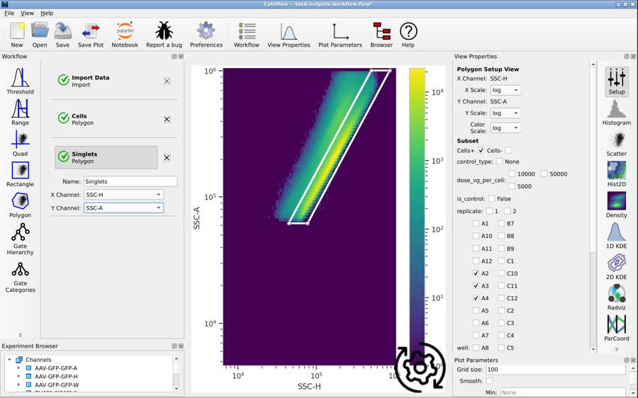
cu click 45 392; sleep 4; cu screenshot /tmp/screen.png
{
"file_path": "/tmp/screen.png"
}/tmp/screen.png
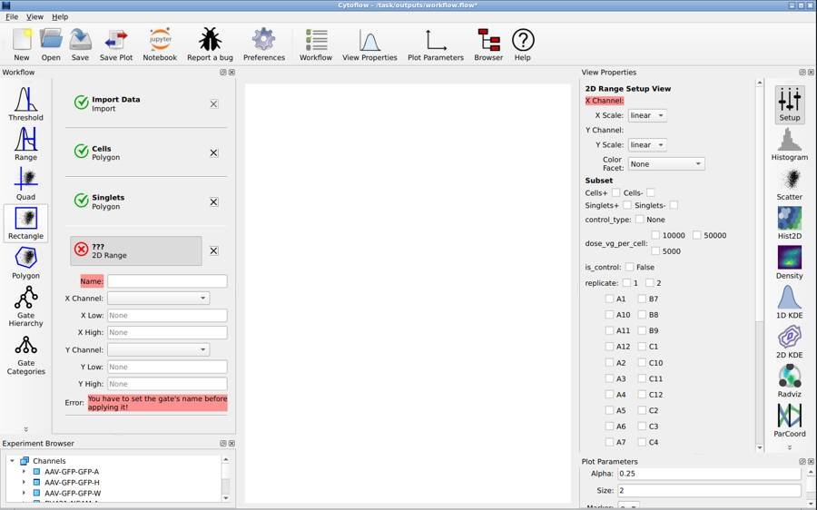
cu click 240 356; sleep 3; cu click 1391 462; sleep 3; cu screenshot /tmp/screen.png
{
"file_path": "/tmp/screen.png"
}/tmp/screen.png
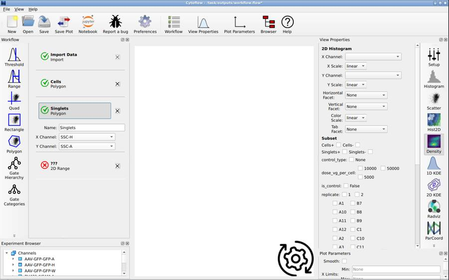
cu click 1086 466; sleep 0.5; cu click 1105 488; sleep 0.5; cu click 1156 569; sleep 0.5; cu click 1105 625; sleep 0.5; cu click 1140 212; sleep 1; cu click 1130 261; sleep 1; cu click 1140 272; sleep 1; cu click 1125 297; sleep 1; cu click 1140 379; sleep 1; cu click 1125 404; sleep 1; cu click 1196 182; sleep 1; cu click 1160 399; sleep 1; cu click 1196 242; sleep 1; cu click 1133 531; sleep 30; cu screenshot /tmp/screen.png
{
"file_path": "/tmp/screen.png"
}/tmp/screen.png
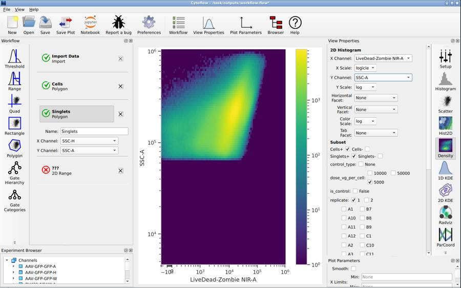
cu click 1391 250; sleep 3; cu screenshot /tmp/screen.png
{
"file_path": "/tmp/screen.png"
}/tmp/screen.png
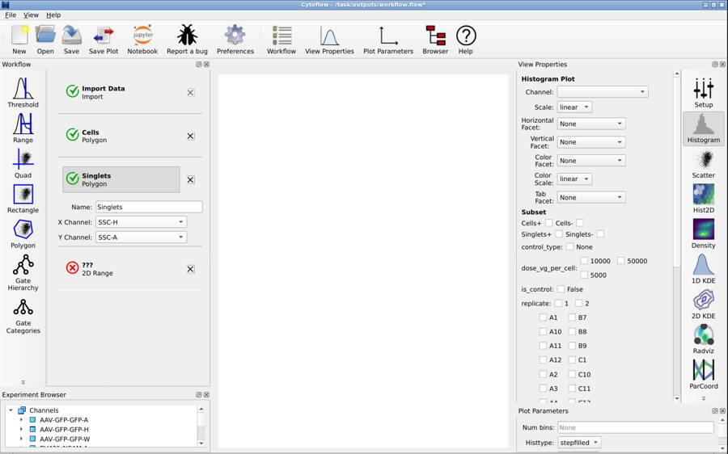
cu click 1086 442; sleep 0.5; cu click 1105 464; sleep 0.5; cu click 1156 545; sleep 0.5; cu click 1105 601; sleep 0.5; cu click 1135 212; sleep 1; cu click 1125 261; sleep 1; cu click 1170 318; sleep 1; cu screenshot /tmp/screen.png
{
"file_path": "/tmp/screen.png"
}/tmp/screen.png
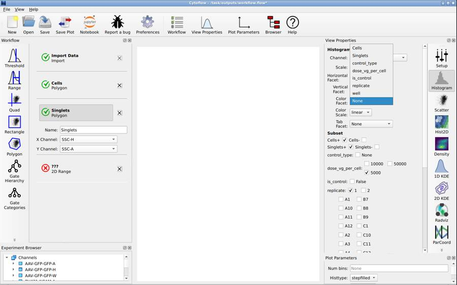
cu click 1123 294; sleep 1; cu click 1145 877; sleep 1; cu screenshot /tmp/screen.png
{
"file_path": "/tmp/screen.png"
}/tmp/screen.png
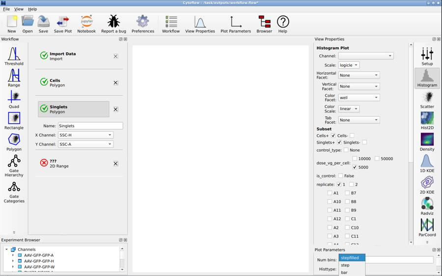
cu click 1125 865; sleep 1; cu click 1186 182; sleep 1; cu click 1160 399; sleep 30; cu screenshot /tmp/screen.png
{
"file_path": "/tmp/screen.png"
}/tmp/screen.png
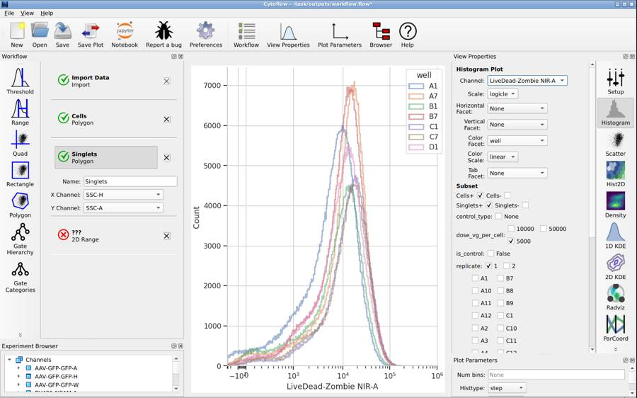
thinking
The Zombie NIR histogram on Singlets shows one broad peak with a low shoulder, so the live/dead split is unclear. I'm plotting Zombie NIR against GFP in high-dose wells to use GFP as an internal check.
cu click 1391 462; sleep 20; cu click 1196 242; sleep 1; cu click 1160 243; sleep 20; cu click 1140 272; sleep 1; cu screenshot /tmp/screen.png
{
"file_path": "/tmp/screen.png"
}/tmp/screen.png
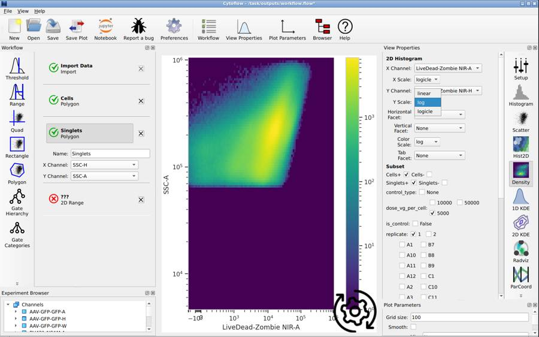
cu click 1135 297; sleep 15; cu click 1196 242; sleep 1; cu key Home; sleep 0.5; cu key Return; sleep 20; cu click 1156 569; sleep 15; cu click 1228 541; sleep 30; cu screenshot /tmp/screen.png
{
"file_path": "/tmp/screen.png"
}/tmp/screen.png
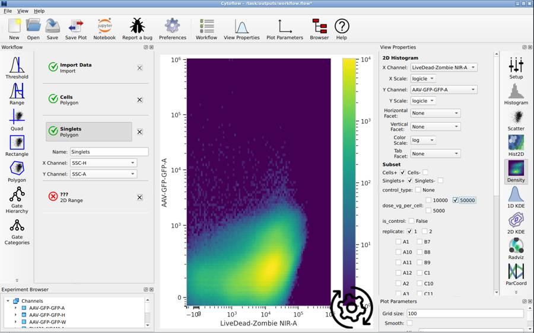
sleep 5; cu screenshot /tmp/screen.png; cd /tmp && python3 - <<'E'
from matplotlib.image import imread
import numpy as np
im=imread('/tmp/screen.png')[:,:,:3]
print('xt',[x for x in range(495,900) if im[831,x].mean()<0.5])
print('xT',[x for x in range(495,900) if im[834,x].mean()<0.5])
print('yT',[y for y in range(150,832) if im[y,496].mean()<0.5])
G=im[:,:,1]
# for GFP-high rows y in 200..520 sum G over rows per column bins
for (y0,y1) in ((160,400),(400,520),(520,600),(650,800)):
seg=G[y0:y1,505:890]
prof=seg.sum(axis=0)
b=[prof[i:i+20].sum() for i in range(0,385,20)]
print(y0,y1,' '.join('%d:%.0f'%(505+i*20,v) for i,v in enumerate(b)))
E/tmp/screen.png xt [502, 503, 504, 508, 521, 522, 523, 525, 526, 528, 529, 531, 532, 534, 535, 536, 537, 552, 566, 578, 588, 596, 604, 610, 616, 620, 624, 625, 653, 670, 681, 690, 697, 703, 708, 712, 715, 716, 743, 758, 769, 778, 784, 790, 795, 800, 803, 804, 830, 845, 856, 864, 871, 877, 882, 886, 889, 890, 891, 892, 893, 894, 895, 896] xT [521, 522, 536, 537, 624, 625, 715, 716, 803, 804, 889, 890, 891, 892, 893, 894, 895, 896] yT [159, 160, 308, 309, 457, 458, 608, 609, 803, 804] 160 400 505:70 525:206 545:247 565:164 585:184 605:146 625:132 645:107 665:90 685:92 705:89 725:101 745:111 765:85 785:28 805:19 825:19 845:19 865:19 885:5 400 520 505:166 525:329 545:350 565:273 585:189 605:213 625:267 645:301 665:286 685:370 705:472 725:560 745:556 765:426 785:152 805:14 825:9 845:9 865:9 885:2 520 600 505:170 525:348 545:360 565:331 585:323 605:349 625:396 645:439 665:489 685:580 705:678 725:750 745:774 765:725 785:561 805:281 825:35 845:6 865:6 885:2 650 800 505:1594 525:1898 545:2014 565:2060 585:2125 605:2204 625:2296 645:2391 665:2491 685:2573 705:2621 725:2618 745:2535 765:2279 785:1565 805:622 825:66 845:12 865:12 885:3 Shell cwd was reset to /task
cu click 1391 250; sleep 25; cu scroll 1220 860 down 5; sleep 1; cu screenshot /tmp/screen.png
{
"file_path": "/tmp/screen.png"
}/tmp/screen.png
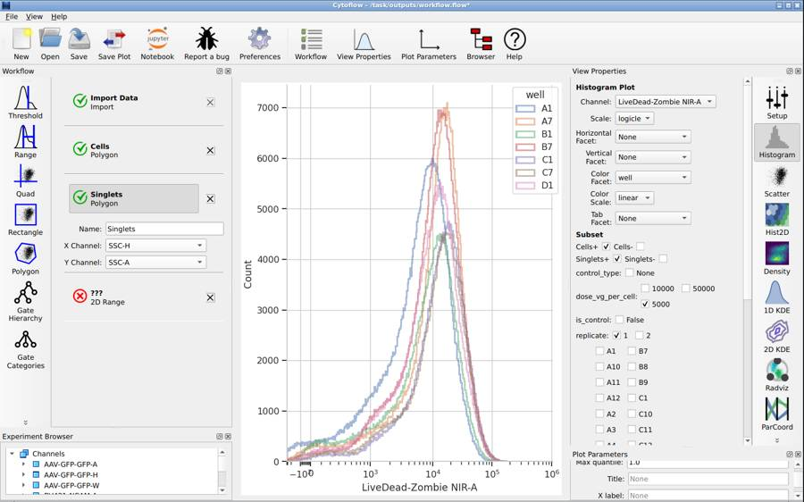
export DISPLAY=:1; xdotool mousemove 1230 801 mousedown 1; sleep 0.3; xdotool mousemove 1230 700; sleep 0.2; xdotool mousemove 1230 560; sleep 0.3; xdotool mouseup 1; sleep 2; cu screenshot /tmp/screen.png
{
"file_path": "/tmp/screen.png"
}/tmp/screen.png
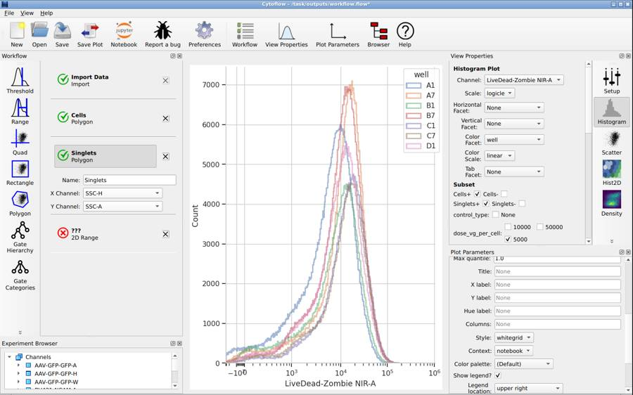
thinking
GFP-bright cells are concentrated in a Zombie-negative group near zero, so the live population is the dim shoulder rather than the main peak. I'm zooming in on the Zombie histogram near zero to pin down the valley.
cu scroll 1220 700 up 10; sleep 1; cu screenshot /tmp/screen.png
{
"file_path": "/tmp/screen.png"
}/tmp/screen.png
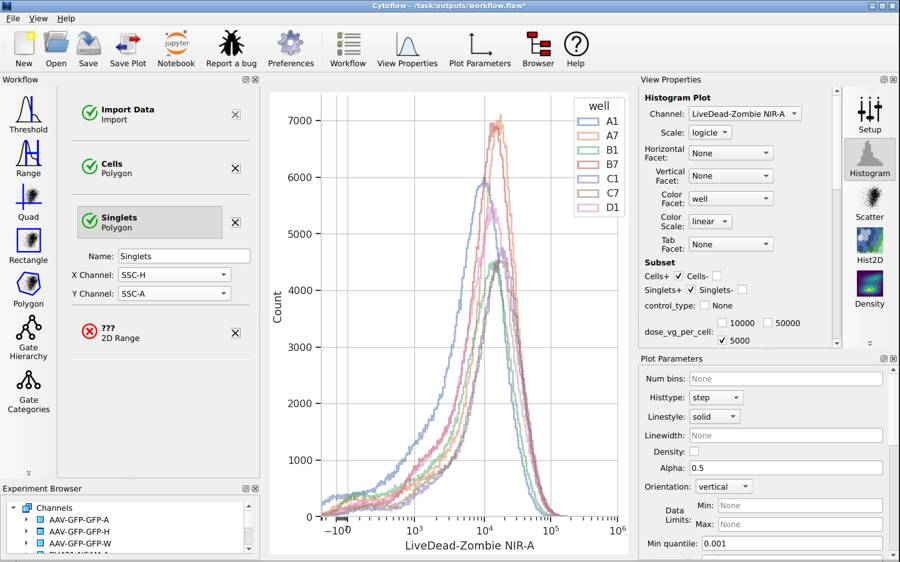
cu click 1280 809; cu type "-1000"; cu key Tab; sleep 1; cu click 1280 839; cu type "6000"; cu key Tab; sleep 1; cu click 1135 212; sleep 1; cu key Home; sleep 0.3; cu key Return; sleep 40; cu screenshot /tmp/screen.png
{
"file_path": "/tmp/screen.png"
}/tmp/screen.png
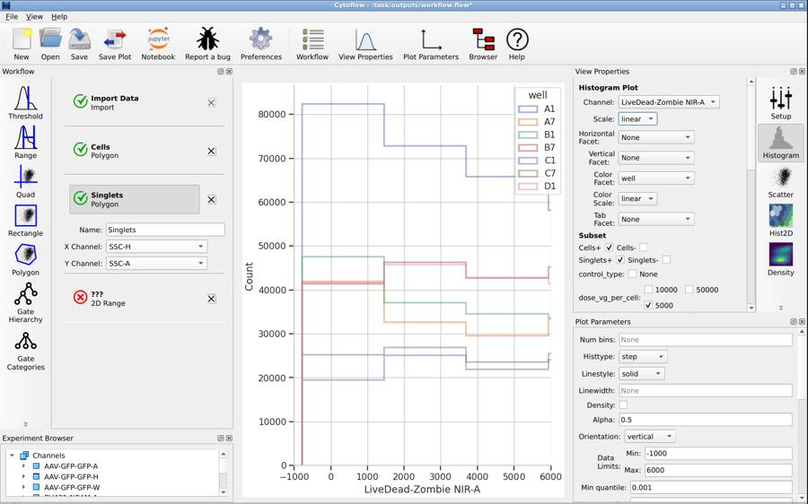
cu click 1255 606; cu type "8000"; cu key Tab; sleep 40; cu screenshot /tmp/screen.png
{
"file_path": "/tmp/screen.png"
}/tmp/screen.png
cu click 1280 809; cu key ctrl+a; cu type "-300"; cu key Tab; sleep 1; cu click 1280 839; cu key ctrl+a; cu type "30000"; cu key Tab; sleep 1; cu click 1255 606; cu key ctrl+a; cu type "300"; cu key Tab; sleep 1; cu click 1135 212; sleep 1; cu key End; sleep 0.3; cu key Return; sleep 45; cu screenshot /tmp/screen.png
{
"file_path": "/tmp/screen.png"
}/tmp/screen.png
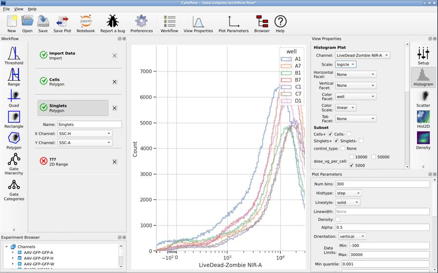
date; cu click 1391 462; sleep 20; cu click 1196 242; sleep 1; cu key End; cu key Up; cu key Up; cu key Up; sleep 0.3; cu key Return; sleep 20; cu click 1140 272; sleep 1; cu key Home; cu key Down; cu key Return; sleep 20; cu screenshot /tmp/screen.png
{
"file_path": "/tmp/screen.png"
}Tue Nov 10 21:29:52 UTC 2026 /tmp/screen.png
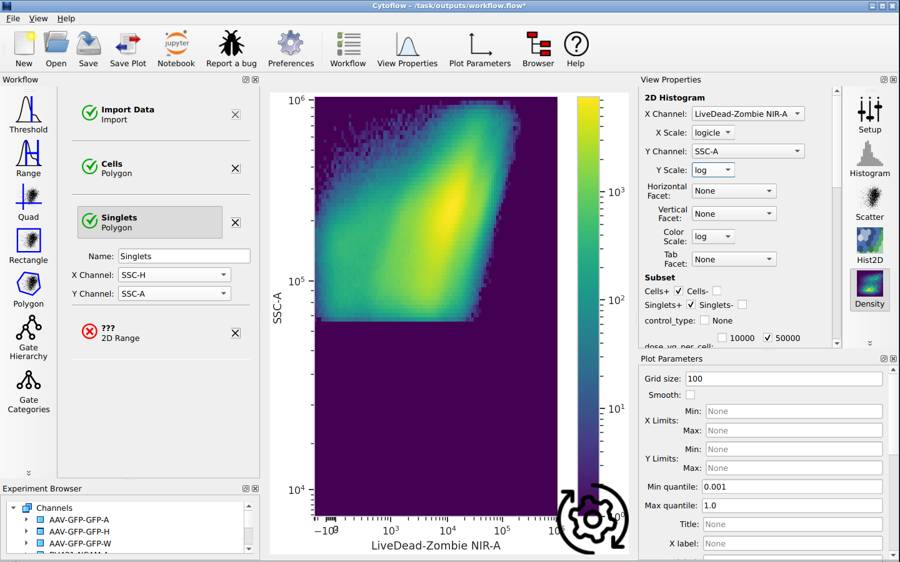
thinking
No distinct second cluster shows up in 2D either, so the Zombie signal on Singlets is a continuum. I'm back-gating on FSC-A to see whether Zombie-negative events form their own scatter region, which would tell me whether the Cells gate needs tightening.
cu click 1086 466; sleep 12; cu click 1105 488; sleep 20; cu click 1196 242; sleep 1; cu key Home; for i in 1 2 3 4 5 6; do cu key Down; done; cu key Return; sleep 40; cu screenshot /tmp/screen.png
{
"file_path": "/tmp/screen.png"
}/tmp/screen.png
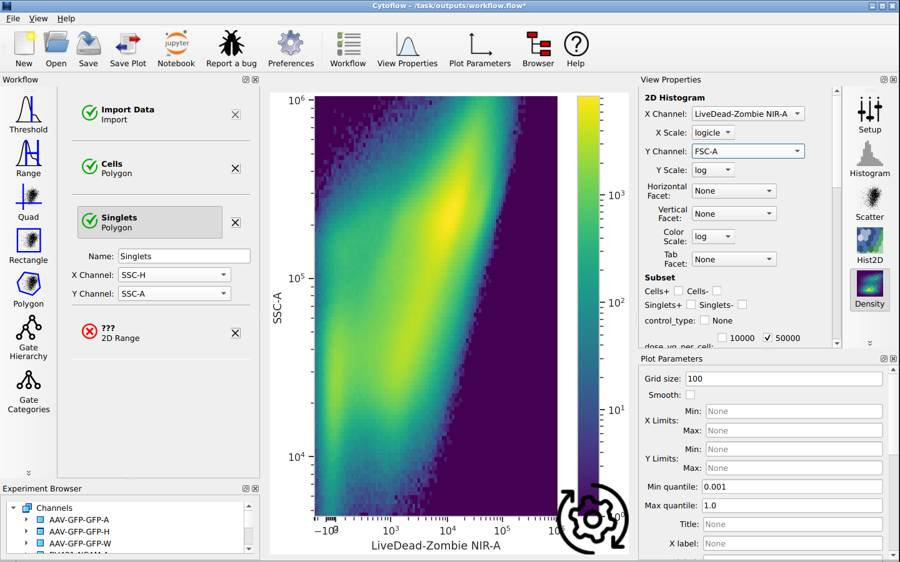
cu click 1391 250; sleep 25; cu click 1255 606; cu key ctrl+a; cu type "40000"; cu key Tab; sleep 1; cu click 1280 809; cu key ctrl+a; cu type "-1000"; cu key Tab; sleep 1; cu click 1280 839; cu key ctrl+a; cu type "8000"; cu key Tab; sleep 1; cu click 1135 212; sleep 1; cu key Home; sleep 0.3; cu key Return; sleep 60; cu screenshot /tmp/screen.png
{
"file_path": "/tmp/screen.png"
}/tmp/screen.png
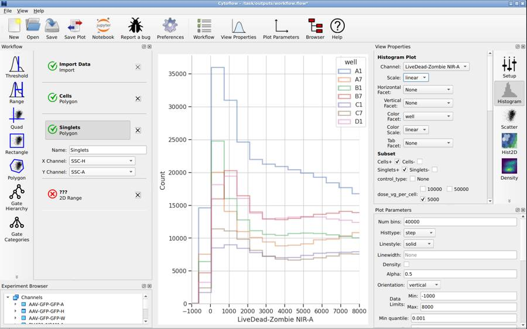
thinking
Six of seven wells show a Zombie-negative dip around 3,000–4,000, so I'm setting the Live cut-off at 3,500 and configuring the Live rectangle next.
cu click 240 533; sleep 4; cu screenshot /tmp/screen.png
{
"file_path": "/tmp/screen.png"
}/tmp/screen.png
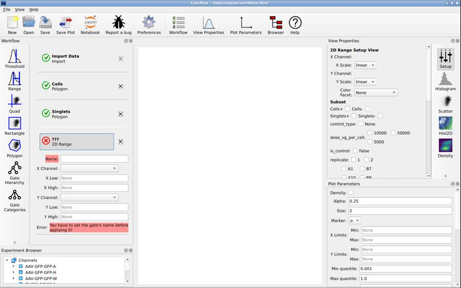
cu click 1096 602; sleep 0.5; cu click 1140 203; sleep 1; cu key End; cu key Return; sleep 1; cu click 1140 255; sleep 1; cu key Home; cu key Down; cu key Return; sleep 1; cu click 1086 340; sleep 0.5; cu click 1105 362; sleep 0.5; cu click 1156 443; sleep 0.5; cu click 1105 499; sleep 0.5; cu click 295 496; cu type "Live"; cu key Tab; sleep 0.5; cu click 295 556; cu type "-100000"; cu key Tab; sleep 0.5; cu click 295 586; cu type "3500"; cu key Tab; sleep 0.5; cu click 295 647; cu type "100"; cu key Tab; sleep 0.5; cu click 295 677; cu type "1050000"; cu key Tab; sleep 0.5; cu click 279 526; sleep 1; cu key Home; for i in 1 2 3 4 5 6 7 8 9; do cu key Down; done; cu key Return; sleep 2; cu click 279 617; sleep 1; cu key Home; for i in 1 2 3 4 5 6 7 8 9 10 11 12; do cu key Down; done; cu key Return; sleep 5; cu screenshot /tmp/screen.png
{
"file_path": "/tmp/screen.png"
}/tmp/screen.png

sleep 30; cu screenshot /tmp/screen.png
<tool_use_error>Blocked: sleep 30 followed by: cu screenshot /tmp/screen.png. To wait for a condition, use Monitor with an until-loop (e.g. `until <check>; do sleep 2; done`). To wait for a command you started, use run_in_background: true. Do not chain shorter sleeps to work around this block.</tool_use_error>
{
"file_path": "/tmp/screen.png"
}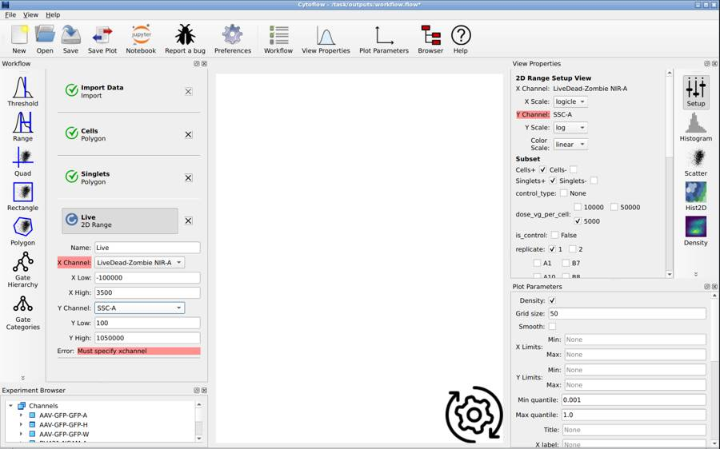
cat > /tmp/waitidle.sh <<'E'
#!/bin/bash
# wait until all cytoflow processes are idle (cpu ticks stop advancing) for 3 consecutive 2s polls; max $1 seconds (default 180)
max=${1:-180}; t=0; idle=0
ticks(){ s=0; for p in $(pgrep -x cytoflow); do v=$(awk '{print $14+$15}' /proc/$p/stat 2>/dev/null); s=$((s+${v:-0})); done; echo $s; }
prev=$(ticks)
until [ $idle -ge 3 ] || [ $t -ge $max ]; do sleep 2; t=$((t+2)); cur=$(ticks); if [ $((cur-prev)) -le 6 ]; then idle=$((idle+1)); else idle=0; fi; prev=$cur; done
echo "waited ${t}s"
E
chmod +x /tmp/waitidle.sh; /tmp/waitidle.sh 120; cu screenshot /tmp/screen.png{
"file_path": "/tmp/screen.png"
}Command did not complete within its 120s timeout and was moved to the background (ID: bgu3ywdp2). Output is being written to: /tmp/claude-0/-task/665c976b-cf15-407e-a762-c13a37d60dbc/tasks/bgu3ywdp2.output. You will be notified when it completes. If it is still running after 10m in the background, it will be stopped and you will be notified. It is running now: do not start a second copy while it runs. If it is no longer needed, stop it with TaskStop. No output had been read from it when it was moved. A program that buffers its output, or a pipe into one such as tail, can keep the output file empty until the command finishes. To check interim output, use Read on that file path.

free -m | awk 'NR==2{printf "used %s ",$3} NR==3{printf "swap %s\n",$3}'; ps -o pid,rss,pcpu,stat,time -C cytoflow; tail -20 /tmp/cytoflow.log 2>/dev/null; vmstat 1 3 | tail -3used 7871 swap 29344 PID RSS %CPU STAT TIME 860 0 0.0 Z 00:00:00 1195 0 0.0 Z 00:00:00 1767 3260 0.8 Sl 00:00:14 1778 160 0.0 S 00:00:00 1780 7393448 49.9 Rl 00:14:13 QXcbIntegration: Cannot create platform OpenGL context, neither GLX nor EGL are enabled 2 0 30054160 146436 1660 166692 45339 46656 56692 46961 27684 18 7 7 83 3 0 0 1 1 30434400 125476 1660 166564 133968 392572 133968 392572 393529 11968 2 37 47 14 0 0 1 1 30794532 126576 1660 166564 123512 372872 123512 372872 301120 16579 2 29 53 15 0 0
cat /tmp/claude-0/-task/665c976b-cf15-407e-a762-c13a37d60dbc/tasks/bgu3ywdp2.output; for i in 1 2 3 4; do free -m | awk 'NR==2{printf "used %s ",$3} NR==3{printf "swap %s ",$3}'; ps -o rss=,pcpu=,stat=,time= -C cytoflow | sort -n | tail -1; sleep 5; done; cu screenshot /tmp/screen.png{
"file_path": "/tmp/screen.png"
}waited 120s /tmp/screen.png [exited with code 0] used 7858 swap 32765 7380468 49.9 Rl 00:14:20 used 7934 swap 33650 7531408 49.9 Rl 00:14:22 used 7877 swap 34796 7402152 49.8 Rl 00:14:24 used 7873 swap 35880 7382604 49.8 Rl 00:14:27 /tmp/screen.png
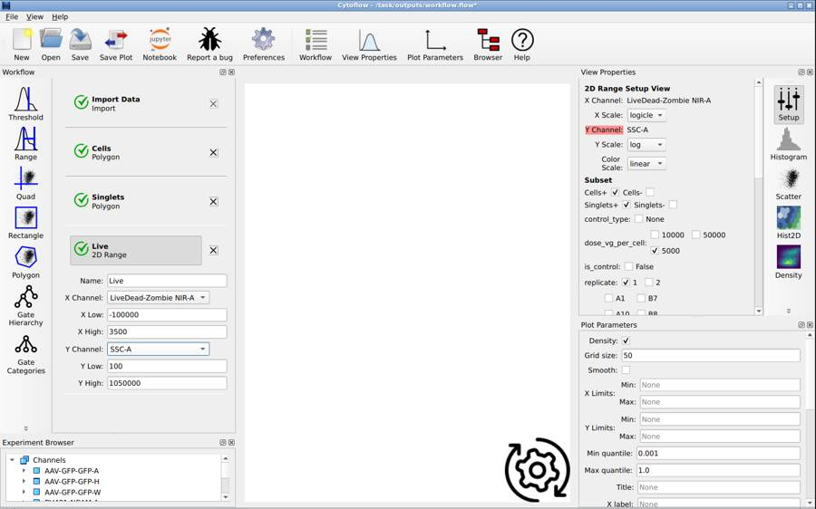
fallocate -l 120G /swapfile3 && chmod 600 /swapfile3 && mkswap /swapfile3 >/dev/null && swapon /swapfile3; free -g | tail -1; for i in 1 2 3 4 5 6; do free -m | awk 'NR==2{printf "used %s ",$3} NR==3{printf "swap %s ",$3}'; ps -o rss=,pcpu=,stat=,time= -C cytoflow | sort -n | tail -1; sleep 4; doneSwap: 207 38 169 used 7658 swap 39316 7084176 49.8 Rl 00:14:36 used 7845 swap 39665 7373568 49.8 Dl 00:14:38 used 7900 swap 40473 7458464 49.8 Rl 00:14:40 used 7890 swap 41142 7495232 49.8 Rl 00:14:41 used 7905 swap 41828 7499108 49.7 Dl 00:14:43 used 7911 swap 42333 7521840 49.7 Rl 00:14:44
thinking
Memory is climbing during the Live plot, likely because the logicle axis is struggling with the very negative X Low value. The gate applied, so I'm switching that view to linear and saving the workflow in case the worker needs a restart.
cu click 1140 203; sleep 1; cu key Home; cu key Return; sleep 1; cu key ctrl+s; sleep 3; cu screenshot /tmp/screen.png; ls -la /task/outputs; grep -n "range2d" -A12 /task/outputs/workflow.flow | head -40; free -m | awk 'NR==3{print "swap",$3}'{
"file_path": "/tmp/screen.png"
}/tmp/screen.png total 72 drwxrwsrwx 2 agent task 4096 Nov 10 21:17 . drwxr-xr-x 4 root root 4096 Nov 5 08:15 .. -rw-rw-r-- 1 cfapp task 63289 Nov 10 21:40 workflow.flow 3023: current_view: &id009 !range2d-view;3 3024- current_plot: null 3025- huefacet: '' 3026- huescale: linear 3027: op: &id008 !range2d;1 3028- name: Live 3029- xchannel: LiveDead-Zombie NIR-A 3030- xhigh: 3500.0 3031- xlow: -100000.0 3032- ychannel: SSC-A 3033- yhigh: 1050000.0 3034- ylow: 100.0 3035: plot_params: !range2d-params;1 3036- alpha: 0.25 3037- col_wrap: null 3038- density: true 3039- despine: true 3040- gridsize: 50 3041- huelabel: '' 3042- legend: true 3043- marker: o 3044- max_quantile: 1.0 3045- min_quantile: 0.001 3046- s: 2 3047- sharex: true swap 43372
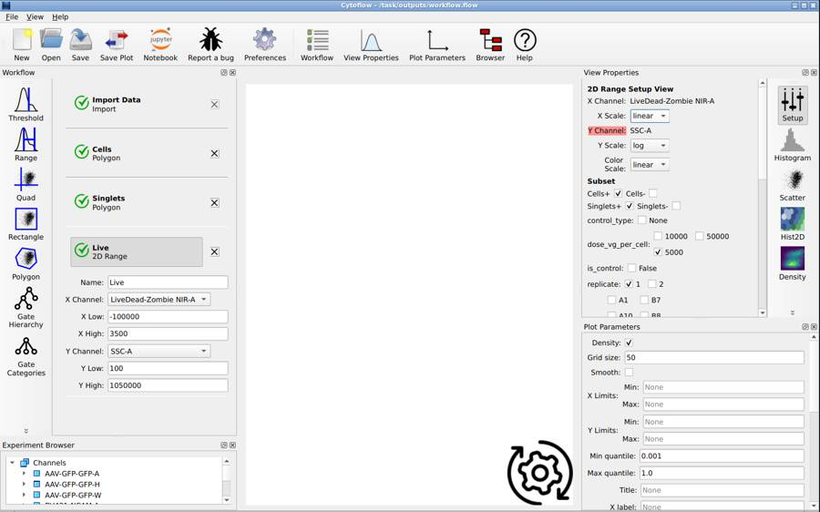
for i in $(seq 1 10); do free -m | awk 'NR==2{printf "used %s ",$3} NR==3{printf "swap %s ",$3}'; ps -o rss=,pcpu=,stat=,time= -C cytoflow | sort -n | tail -1; sleep 2.5; done; dateused 7907 swap 43372 7412980 49.7 Rl 00:15:05 used 7884 swap 43372 7371700 49.7 Rl 00:15:06 used 7856 swap 43372 7314932 49.7 Dl 00:15:07 used 7890 swap 43372 7319904 49.7 Dl 00:15:08 used 7858 swap 43372 7328420 49.7 Rl 00:15:10 used 7860 swap 43372 7332576 49.7 Dl 00:15:11 used 7859 swap 43372 7302608 49.7 Dl 00:15:13 used 7849 swap 43371 7285280 49.7 Rl 00:15:14 used 7873 swap 43372 7410028 49.7 Rl 00:15:15 used 7893 swap 43372 7443548 49.7 Rl 00:15:16 Tue Nov 10 21:40:36 UTC 2026
cu click 21 30; sleep 1; cu click 47 196; sleep 6; ps -o pid,rss,pcpu,stat,time -C cytoflow; free -m | awk 'NR==3{print "swap",$3}'; cu screenshot /tmp/screen.pngPID RSS %CPU STAT TIME 860 0 0.0 Z 00:00:00 1195 0 0.0 Z 00:00:00 1767 88572 0.8 Sl 00:00:14 1778 156 0.0 S 00:00:00 1780 7263320 49.7 Dl 00:15:25 swap 43644 /tmp/screen.png
{
"file_path": "/tmp/screen.png"
}
kill -9 1780; sleep 3; ps -o pid,rss,pcpu,stat,time,args -C cytoflow | cut -c1-120; free -m | awk 'NR==3{print "swap",$3}'PID RSS %CPU STAT TIME COMMAND 860 0 0.0 Z 00:00:00 [cytoflow] <defunct> 1195 0 0.0 Z 00:00:00 [cytoflow] <defunct> 1767 83560 0.7 Sl 00:00:14 /opt/cytoflow/cytoflow-1.3.2/cytoflow 1778 156 0.0 S 00:00:00 /opt/cytoflow/cytoflow-1.3.2/cytoflow -B -S -I -c from multiprocessing.resource_tracker i swap 651
sleep 4; if pgrep -x cytoflow | grep -q '^1767$'; then kill 1767; sleep 3; pgrep -x cytoflow | grep -q '^1767$' && kill -9 1767; fi; sleep 12; ps -o pid,rss,stat,args -C cytoflow | cut -c1-110; export DISPLAY=:1; for w in $(xdotool search --name "Cyto"); do echo "$w $(xdotool getwindowname $w) $(xdotool getwindowgeometry $w | tail -1)"; done
PID RSS STAT COMMAND 860 0 Z [cytoflow] <defunct> 1195 0 Z [cytoflow] <defunct> 1778 0 Z [cytoflow] <defunct> 4332 522128 Sl /opt/cytoflow/cytoflow-1.3.2/cytoflow 4347 39376 S /opt/cytoflow/cytoflow-1.3.2/cytoflow -B -S -I -c from multiprocessing.resource_tracker impor 4349 314036 Sl /opt/cytoflow/cytoflow-1.3.2/cytoflow --multiprocessing-fork tracker_fd=10 pipe_handle=14 14680068 Qt Selection Owner for cytoflow Geometry: 3x3 14680072 cytoflow Geometry: 1x1 14680070 Cytometry analysis - Cytoflow Geometry: 2082x1171
export DISPLAY=:1; xdotool windowsize 14680070 1438 878; xdotool windowmove 14680070 0 20; sleep 2; cu click 408 712; sleep 1; cu click 408 613; sleep 1; cu click 89 75; sleep 2; cu click 714 597; cu paste "/task/outputs/workflow.flow"; sleep 1; cu key Return; sleep 3; cu screenshot /tmp/screen.png
{
"file_path": "/tmp/screen.png"
}/tmp/screen.png
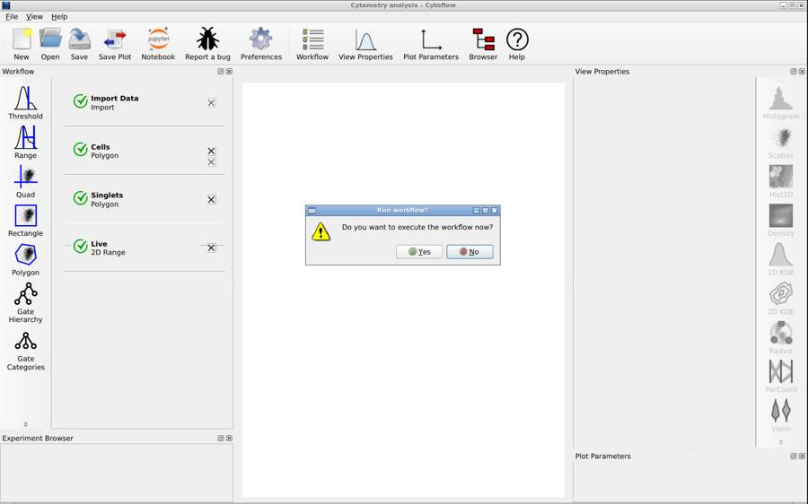
cu click 747 449; sleep 20; /tmp/waitidle.sh 90; free -m | awk 'NR==2{printf "used %s ",$3} NR==3{printf "swap %s\n",$3}'; cu screenshot /tmp/screen.png{
"file_path": "/tmp/screen.png"
}waited 72s used 6043 swap 2135 /tmp/screen.png

cu click 240 442; for i in $(seq 1 8); do sleep 3; free -m | awk 'NR==2{printf "used %s ",$3} NR==3{printf "swap %s ",$3}'; ps -o rss=,pcpu=,stat=,time= -C cytoflow | sort -n | tail -1; done; cu screenshot /tmp/screen.png{
"file_path": "/tmp/screen.png"
}used 7862 swap 2251 7413024 48.5 Rl 00:01:25 used 7871 swap 3485 7431028 49.2 Rl 00:01:28 used 7868 swap 4644 7389168 49.5 Dl 00:01:30 used 7891 swap 5443 7446380 49.6 Rl 00:01:32 used 7901 swap 6347 7508344 49.5 Rl 00:01:33 used 7853 swap 6890 7551428 49.4 Rl 00:01:34 used 7826 swap 7680 7520292 49.2 Rl 00:01:35 used 7923 swap 8422 7652168 49.0 Dl 00:01:37 /tmp/screen.png
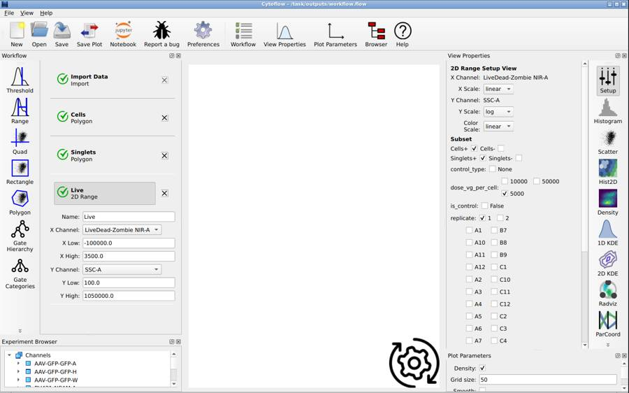
thinking
The Live gate's setup plot is what blows up memory, on a linear axis too, so the logicle scale isn't the cause. The gate is applied, and I'll switch that item to a lighter view if this plot doesn't finish.
for i in $(seq 1 22); do sleep 5; free -m | awk 'NR==2{printf "used %s ",$3} NR==3{printf "swap %s ",$3}'; ps -o rss=,pcpu=,stat=,time= -C cytoflow | sort -n | tail -1; doneused 7919 swap 14469 7626720 47.9 Rl 00:01:48 used 6437 swap 11684 6087748 48.2 Dl 00:01:51 used 6084 swap 6656 5688104 48.8 Rl 00:01:55 used 7844 swap 7482 7494388 48.7 Rl 00:01:57 used 7776 swap 9073 7491628 48.6 Rl 00:01:59 used 7858 swap 9726 7572996 48.4 Dl 00:02:01 used 7848 swap 10839 7533464 48.4 Rl 00:02:04 used 7859 swap 11814 7609616 48.5 Dl 00:02:06 used 7938 swap 12653 7756292 48.5 Rl 00:02:09 used 7910 swap 14103 7726292 48.6 Dl 00:02:11 used 7910 swap 15614 7683300 48.4 Rl 00:02:13 used 7911 swap 16696 7645572 48.6 Rl 00:02:16 used 4825 swap 16836 3875908 48.7 Rl 00:02:19 used 7903 swap 12807 7663456 49.1 Rl 00:02:23 used 7911 swap 15313 7716920 49.8 Rl 00:02:27 used 7913 swap 16748 7710484 50.4 Rl 00:02:32 used 7902 swap 19021 7666528 51.1 Dl 00:02:36 used 7903 swap 20816 7593640 51.1 Rl 00:02:39 used 7887 swap 22595 7524816 50.9 Rl 00:02:41 used 7896 swap 24502 7495592 50.7 Rl 00:02:43 used 7899 swap 26100 7583964 50.5 Rl 00:02:45 used 7920 swap 27523 7663732 50.4 Dl 00:02:47
cu click 1391 250; sleep 2; cu key ctrl+s; sleep 3; cu screenshot /tmp/screen.png; ls -la /task/outputs/workflow.flow; grep -n "current_view" /task/outputs/workflow.flow; free -m | awk 'NR==3{print "swap",$3}'{
"file_path": "/tmp/screen.png"
}/tmp/screen.png -rw-rw-r-- 1 cfapp task 65344 Nov 10 21:47 /task/outputs/workflow.flow 152: current_view: &id001 !density-view;2 1226: current_view: &id005 !polygon-view;3 2004: current_view: &id007 !histogram;2 3023: current_view: &id009 !histogram;2 swap 36887
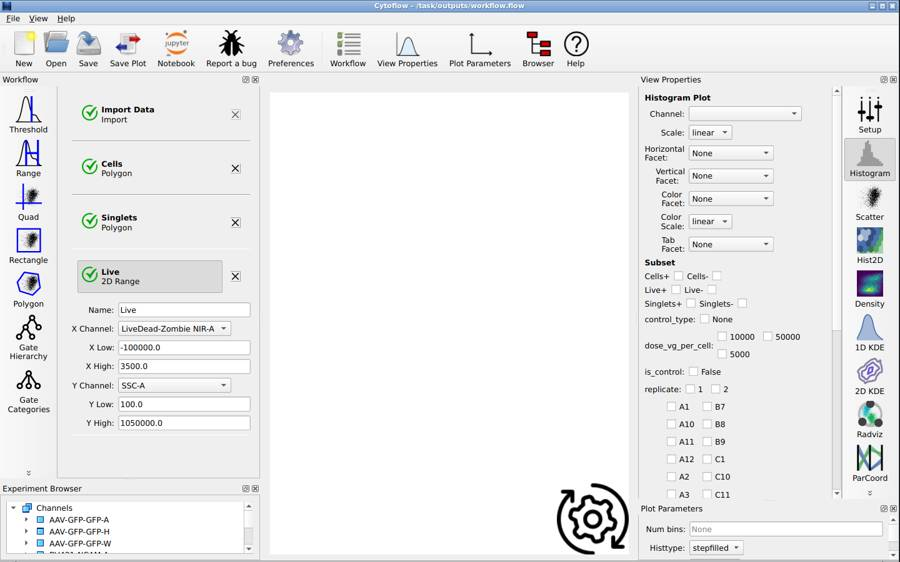
for i in 1 2 3 4 5; do sleep 4; free -m | awk 'NR==2{printf "used %s ",$3} NR==3{printf "swap %s ",$3}'; ps -o rss=,pcpu=,stat=,time= -C cytoflow | sort -n | tail -1; doneused 7774 swap 39117 7160268 49.5 Dl 00:03:07 used 7720 swap 38709 7125292 49.5 Dl 00:03:09 used 7773 swap 39457 7185764 49.3 Dl 00:03:11 used 7736 swap 39944 7163460 49.2 Rl 00:03:12 used 7720 swap 40615 7259484 49.1 Dl 00:03:14
pkill -9 -x cytoflow; sleep 14; ps -o pid,rss,stat -C cytoflow; export DISPLAY=:1; W=$(xdotool search --name "Cytometry analysis" | tail -1); echo $W; xdotool windowsize $W 1438 878; xdotool windowmove $W 0 20; sleep 2; cu click 408 712; sleep 1; cu click 408 613; sleep 1; cu click 89 75; sleep 2; cu click 714 597; cu paste "/task/outputs/workflow.flow"; sleep 1; cu key Return; sleep 3; cu click 747 449; sleep 15; /tmp/waitidle.sh 90; free -m | awk 'NR==2{printf "used %s ",$3} NR==3{printf "swap %s\n",$3}'; cu screenshot /tmp/screen.png{
"file_path": "/tmp/screen.png"
}PID RSS STAT 860 0 Z 1195 0 Z 1778 0 Z 4347 0 Z 4349 0 Z 5387 523336 Sl 5398 39452 S 5400 314468 Sl 14680070 waited 78s used 5900 swap 1982 /tmp/screen.png
cu click 240 442; for i in 1 2 3; do sleep 3; free -m | awk 'NR==2{printf "used %s ",$3} NR==3{printf "swap %s ",$3}'; ps -o rss=,pcpu=,stat=,time= -C cytoflow | sort -n | tail -1; done; cu screenshot /tmp/screen.png{
"file_path": "/tmp/screen.png"
}used 5983 swap 1978 5545040 65.7 Sl 00:01:23 used 5987 swap 1978 5545040 64.2 Sl 00:01:23 used 5987 swap 1977 5545040 62.7 Sl 00:01:23 /tmp/screen.png
cu click 1086 442; sleep 0.4; cu click 1081 464; sleep 0.4; cu click 1105 486; sleep 0.4; cu click 1156 567; sleep 0.4; cu click 1135 212; sleep 1; cu key End; cu key Return; sleep 1; cu click 1170 318; sleep 1; cu key End; cu key Up; cu key Return; sleep 1; cu click 1145 877; sleep 1; cu key Home; cu key Down; cu key Return; sleep 1; cu click 1186 182; sleep 1; cu key Home; cu key Return; sleep 10; /tmp/waitidle.sh 60; cu screenshot /tmp/screen.png
{
"file_path": "/tmp/screen.png"
}waited 10s /tmp/screen.png
cu click 1391 462; sleep 3; cu screenshot /tmp/screen.png
{
"file_path": "/tmp/screen.png"
}/tmp/screen.png
cu click 1086 466; sleep 0.4; cu click 1081 488; sleep 0.4; cu click 1105 510; sleep 0.4; cu click 1140 212; sleep 1; cu key End; cu key Return; sleep 1; cu click 1140 272; sleep 1; cu key Home; cu key Down; cu key Return; sleep 1; cu click 1140 379; sleep 1; cu key Home; cu key Down; cu key Return; sleep 1; cu click 1175 305; sleep 1; cu key Home; for i in 1 2 3 4; do cu key Down; done; cu key Return; sleep 1; cu click 1196 182; sleep 1; cu key Home; cu key Return; sleep 1; cu click 1196 242; sleep 1; cu key Home; for i in $(seq 1 12); do cu key Down; done; cu key Return; sleep 10; /tmp/waitidle.sh 90; cu screenshot /tmp/screen.png; free -m | awk 'NR==3{print "swap",$3}'{
"file_path": "/tmp/screen.png"
}waited 14s /tmp/screen.png swap 2746
cu click 1175 305; sleep 1; cu key End; cu key Return; sleep 8; cu click 1156 591; sleep 8; /tmp/waitidle.sh 60; cu screenshot /tmp/screen.png; cd /tmp && python3 - <<'E'
from matplotlib.image import imread
import numpy as np
im=imread('/tmp/screen.png')[:,:,:3]
print('xt',[x for x in range(495,900) if im[831,x].mean()<0.5])
print('xT',[x for x in range(495,900) if im[834,x].mean()<0.5])
G=im[:,:,1]; R=im[:,:,0]; B=im[:,:,2]
# background color
print('bg',im[700,700])
ys=[y for y in range(150,832) if im[y,497].mean()<0.5]; print('yT',ys)
for (y0,y1) in ((200,300),(300,400),(400,500)):
seg=G[y0:y1,505:890]; prof=seg.mean(axis=0)
print(y0,y1,' '.join('%d:%.2f'%(505+i,prof[i]) for i in range(0,385,8)))
E{
"file_path": "/tmp/screen.png"
}waited 28s /tmp/screen.png xt [502, 503, 504, 506, 510, 513, 515, 516, 547, 568, 583, 594, 603, 610, 616, 621, 625, 628, 629, 656, 671, 682, 691, 698, 704, 709, 713, 716, 717, 743, 758, 769, 778, 784, 790, 795, 800, 803, 804, 830, 845, 856, 864, 871, 877, 882, 886, 889, 890] xT [515, 516, 628, 629, 716, 717, 803, 804, 889, 890] bg [0.26666668 0.00392157 0.32941177] yT [159, 160, 445, 446, 730, 731] 200 300 505:0.01 513:0.03 521:0.04 529:0.09 537:0.14 545:0.19 553:0.25 561:0.32 569:0.39 577:0.47 585:0.50 593:0.50 601:0.45 609:0.40 617:0.37 625:0.34 633:0.29 641:0.30 649:0.18 657:0.19 665:0.14 673:0.17 681:0.12 689:0.17 697:0.10 705:0.12 713:0.13 721:0.08 729:0.08 737:0.11 745:0.07 753:0.10 761:0.06 769:0.04 777:0.04 785:0.04 793:0.05 801:0.03 809:0.01 817:0.03 825:0.01 833:0.01 841:0.02 849:0.01 857:0.00 865:0.01 873:0.01 881:0.01 889:0.11 300 400 505:0.46 513:0.58 521:0.67 529:0.75 537:0.80 545:0.83 553:0.85 561:0.86 569:0.84 577:0.79 585:0.72 593:0.67 601:0.64 609:0.63 617:0.59 625:0.50 633:0.40 641:0.30 649:0.27 657:0.23 665:0.24 673:0.25 681:0.17 689:0.17 697:0.18 705:0.15 713:0.12 721:0.15 729:0.11 737:0.12 745:0.09 753:0.08 761:0.07 769:0.03 777:0.01 785:0.03 793:0.03 801:0.03 809:0.00 817:0.01 825:0.02 833:0.00 841:0.01 849:0.00 857:0.00 865:0.00 873:0.00 881:0.00 889:0.01 400 500 505:0.76 513:0.82 521:0.85 529:0.87 537:0.88 545:0.87 553:0.85 561:0.81 569:0.75 577:0.70 585:0.67 593:0.61 601:0.52 609:0.43 617:0.30 625:0.20 633:0.14 641:0.14 649:0.08 657:0.08 665:0.08 673:0.07 681:0.04 689:0.03 697:0.03 705:0.02 713:0.00 721:0.02 729:0.03 737:0.01 745:0.01 753:0.00 761:0.01 769:0.02 777:0.00 785:0.00 793:0.00 801:0.00 809:0.00 817:0.00 825:0.00 833:0.00 841:0.00 849:0.00 857:0.00 865:0.00 873:0.00 881:0.00 889:0.00 Shell cwd was reset to /task
cu click 45 392; sleep 3; cu click 1391 250; sleep 2; cu screenshot /tmp/screen.png
{
"file_path": "/tmp/screen.png"
}/tmp/screen.png
cu click 287 582; cu type "GFP_pos"; cu key Tab; sleep 0.5; cu click 287 643; cu type "2000"; cu key Tab; sleep 0.5; cu click 287 673; cu type "1100000"; cu key Tab; sleep 0.5; cu click 287 733; cu type "100"; cu key Tab; sleep 0.5; cu scroll 250 600 down 5; sleep 1; cu screenshot /tmp/screen.png
{
"file_path": "/tmp/screen.png"
}/tmp/screen.png
cu click 287 712; cu type "1050000"; cu key Tab; sleep 0.5; cu click 279 562; sleep 1; cu key Home; cu key Return; sleep 2; cu click 279 652; sleep 1; cu key Home; for i in $(seq 1 12); do cu key Down; done; cu key Return; sleep 6; /tmp/waitidle.sh 60; free -m | awk 'NR==2{printf "used %s ",$3} NR==3{printf "swap %s\n",$3}'; cu screenshot /tmp/screen.png{
"file_path": "/tmp/screen.png"
}waited 14s used 6527 swap 3820 /tmp/screen.png
cu key ctrl+s; sleep 3; ls -la /task/outputs/workflow.flow; grep -n "name: \|xlow\|xhigh\|ylow\|yhigh\|xchannel\|ychannel" /task/outputs/workflow.flow | grep -v "name: ''" | head -40; cu click 45 757; sleep 2; cu screenshot /tmp/screen.png
{
"file_path": "/tmp/screen.png"
}-rw-rw-r-- 1 cfapp task 82840 Nov 10 21:54 /task/outputs/workflow.flow 25: name: null 37: name: null 47: name: null 57: name: null 108: name: null 184: name: control_type 189: name: dose_vg_per_cell 196: name: is_control 201: name: replicate 207: name: well 255: xchannel: FSC-A 258: ychannel: SSC-A 263: fcs_name: AAV-GFP-GFP-A 268: fcs_name: AAV-GFP-GFP-H 273: fcs_name: AAV-GFP-GFP-W 278: fcs_name: BV421-NCAM-A 283: fcs_name: BV421-NCAM-H 288: fcs_name: BV421-NCAM-W 293: fcs_name: FSC-A 298: fcs_name: FSC-H 303: fcs_name: FSC-W 308: fcs_name: LiveDead-Zombie NIR-A 313: fcs_name: LiveDead-Zombie NIR-H 318: fcs_name: LiveDead-Zombie NIR-W 323: fcs_name: SSC-A 328: fcs_name: SSC-H 333: fcs_name: SSC-W 338: fcs_name: Time 990: name: control_type 995: name: dose_vg_per_cell 1002: name: is_control 1007: name: replicate 1013: name: well 1090: name: null 1099: name: null 1111: name: null 1121: name: null 1131: name: null 1182: name: null 1231: name: Cells /tmp/screen.png
cu click 130 187; sleep 3; cu screenshot /tmp/screen.png
{
"file_path": "/tmp/screen.png"
}/tmp/screen.png
cu key Escape; sleep 1; cu screenshot /tmp/screen.png
{
"file_path": "/tmp/screen.png"
}/tmp/screen.png

cu click 45 757; sleep 1.5; cu screenshot /tmp/screen.png
{
"file_path": "/tmp/screen.png"
}/tmp/screen.png
cu click 408 782; sleep 1; cu scroll 250 600 down 10; sleep 1; cu screenshot /tmp/screen.png
{
"file_path": "/tmp/screen.png"
}/tmp/screen.png
cu click 290 577; cu type "counts"; cu key Tab; sleep 0.5; cu click 267 607; sleep 1; cu key Home; for i in 1 2 3 4 5 6; do cu key Down; done; cu key Return; sleep 1; cu click 253 637; sleep 1; cu screenshot /tmp/screen.png
{
"file_path": "/tmp/screen.png"
}/tmp/screen.png
cu click 205 576; sleep 1; cu click 185 667; sleep 0.5; cu click 185 695; sleep 0.5; cu click 185 723; sleep 0.5; cu click 185 751; sleep 0.5; cu click 298 751; sleep 5; /tmp/waitidle.sh 90; cu screenshot /tmp/screen.png
{
"file_path": "/tmp/screen.png"
}waited 90s /tmp/screen.png
for i in 1 2 3 4 5 6; do free -m | awk 'NR==2{printf "used %s ",$3} NR==3{printf "swap %s ",$3}'; ps -o rss=,pcpu=,stat=,time= -C cytoflow | sort -n | tail -1; sleep 4; done; dateused 7465 swap 5976 7108140 51.0 Dl 00:04:30 used 7735 swap 6070 7404324 51.1 Dl 00:04:33 used 7866 swap 6446 7628240 51.2 Rl 00:04:35 used 7876 swap 7168 7581600 51.2 Rl 00:04:37 used 7834 swap 8059 7512520 51.2 Dl 00:04:39 used 7882 swap 8710 7574148 51.2 Rl 00:04:42 Tue Nov 10 21:57:16 UTC 2026
/tmp/waitidle.sh 100; free -m | awk 'NR==2{printf "used %s ",$3} NR==3{printf "swap %s\n",$3}'; cu screenshot /tmp/screen.png{
"file_path": "/tmp/screen.png"
}waited 6s used 3229 swap 6488 /tmp/screen.png
cu key ctrl+s; sleep 2; cu click 1391 789; sleep 2; cu screenshot /tmp/screen.png
{
"file_path": "/tmp/screen.png"
}/tmp/screen.png
cu click 1398 605; sleep 2; cu click 1391 789; sleep 2; cu screenshot /tmp/screen.png
{
"file_path": "/tmp/screen.png"
}/tmp/screen.png
cu click 1140 182; sleep 1; cu screenshot /tmp/screen.png
{
"file_path": "/tmp/screen.png"
}/tmp/screen.png
cu click 1122 207; sleep 5; /tmp/waitidle.sh 40; cu screenshot /tmp/screen.png
{
"file_path": "/tmp/screen.png"
}waited 6s /tmp/screen.png
chmod 777 /tmp/work; cu click 1140 212; sleep 2; cu screenshot /tmp/screen.png
{
"file_path": "/tmp/screen.png"
}/tmp/screen.png
cu paste "/task/outputs/cytoflow_counts_export.csv"; sleep 1; cu key Return; sleep 4; ls -la /task/outputs; head -20 /task/outputs/cytoflow_counts_export.csv; wc -l /task/outputs/cytoflow_counts_export.csv
total 188 drwxrwsrwx 2 agent task 4096 Nov 10 21:58 . drwxr-xr-x 4 root root 4096 Nov 5 08:15 .. -rw-rw-r-- 1 cfapp task 12190 Nov 10 21:58 cytoflow_counts_export.csv -rw-rw-r-- 1 cfapp task 170858 Nov 10 21:57 workflow.flow Cells,GFP_pos,Live,Singlets,well,FSC-A 0,0,0,0,A1,32371.0 0,0,0,0,A10,36580.0 0,0,0,0,A11,23586.0 0,0,0,0,A12,16459.0 0,0,0,0,A2,30776.0 0,0,0,0,A3,25481.0 0,0,0,0,A4,31481.0 0,0,0,0,A5,25616.0 0,0,0,0,A6,23643.0 0,0,0,0,A7,56058.0 0,0,0,0,A8,36139.0 0,0,0,0,A9,48802.0 0,0,0,0,B1,33922.0 0,0,0,0,B10,55556.0 0,0,0,0,B11,33984.0 0,0,0,0,B12,33959.0 0,0,0,0,B2,46006.0 0,0,0,0,B3,53139.0 0,0,0,0,B4,35233.0 672 /task/outputs/cytoflow_counts_export.csv
mkdir -p /tmp/scripts; cat > /tmp/scripts/mkcounts.py <<'E'
import pandas as pd, json, sys
exp=pd.read_csv('/task/outputs/cytoflow_counts_export.csv')
lay=pd.read_csv('/task/inputs/plate_layout.csv')
hdr={d['well']:d for d in json.load(open('/tmp/work/hdr.json'))}
c=exp.rename(columns={exp.columns[-1]:'n'})
rows=[]; summ=[]
for _,r in lay.iterrows():
w=r['well']; d=c[c.well==w]
tot=int(d.n.sum())
cells=int(d[d.Cells==1].n.sum())
sing=int(d[(d.Cells==1)&(d.Singlets==1)].n.sum())
live=int(d[(d.Cells==1)&(d.Singlets==1)&(d.Live==1)].n.sum())
gfp=int(d[(d.Cells==1)&(d.Singlets==1)&(d.Live==1)&(d.GFP_pos==1)].n.sum())
assert tot==hdr[w]['tot'],(w,tot,hdr[w]['tot'])
for pop,n,par,pn in (('Cells',cells,'all_events',tot),('Singlets',sing,'Cells',cells),('Live',live,'Singlets',sing),('GFP_pos',gfp,'Live',live)):
rows.append(dict(file=r['file'],well=w,population=pop,count=n,parent_population=par,pct_of_parent=round(100*n/pn,4) if pn else 0.0))
summ.append(dict(well=w,dose=r['dose_vg_per_cell'],rep=r['replicate'],total=tot,cells=cells,sing=sing,live=live,gfp=gfp,pc=100*cells/tot,ps=100*sing/cells,pl=100*live/sing,pg=100*gfp/live if live else 0))
out=pd.DataFrame(rows); out.to_csv('/task/outputs/counts.csv',index=False)
s=pd.DataFrame(summ); s.to_csv('/tmp/work/summary.csv',index=False)
pd.set_option('display.width',200); print(s.round(2).to_string()); print(len(out))
E
python3 /tmp/scripts/mkcounts.pywell dose rep total cells sing live gfp pc ps pl pg 0 A1 5000 1 978726 661841 482051 150015 230 67.62 72.83 31.12 0.15 1 A2 5000 2 935707 612095 503410 122172 294 65.42 82.24 24.27 0.24 2 A3 10000 1 925910 611871 510731 155008 379 66.08 83.47 30.35 0.24 3 A4 10000 2 892332 597264 496295 112386 390 66.93 83.09 22.64 0.35 4 A5 50000 1 986514 650896 535179 160117 509 65.98 82.22 29.92 0.32 5 A6 50000 2 755396 504641 434903 96939 400 66.80 86.18 22.29 0.41 6 A7 5000 1 848859 535022 441166 72371 225 63.03 82.46 16.40 0.31 7 A8 5000 2 710140 464143 396774 79711 335 65.36 85.49 20.09 0.42 8 A9 10000 1 958681 590468 466347 115721 188 61.59 78.98 24.81 0.16 9 A10 10000 2 870505 555213 454768 104994 260 63.78 81.91 23.09 0.25 10 A11 50000 1 844586 525251 444604 136865 383 62.19 84.65 30.78 0.28 11 A12 50000 2 947510 597624 494944 166496 646 63.07 82.82 33.64 0.39 12 B1 5000 1 733754 413538 336465 81933 13 56.36 81.36 24.35 0.02 13 B2 5000 2 728886 412292 336581 81647 30 56.56 81.64 24.26 0.04 14 B3 10000 1 667298 386187 328857 58663 202 57.87 85.15 17.84 0.34 15 B4 10000 2 598212 342293 298783 68484 47 57.22 87.29 22.92 0.07 16 B5 50000 1 837561 505168 423997 123932 121 60.31 83.93 29.23 0.10 17 B6 50000 2 877336 525032 435816 154137 158 59.84 83.01 35.37 0.10 18 B7 5000 1 954909 585674 477037 84702 147 61.33 81.45 17.76 0.17 19 B8 5000 2 918778 561769 464287 86605 282 61.14 82.65 18.65 0.33 20 B9 10000 1 862070 539986 450089 89885 290 62.64 83.35 19.97 0.32 21 B10 10000 2 1083648 674319 547747 116376 396 62.23 81.23 21.25 0.34 22 B11 50000 1 988574 611524 509218 124198 405 61.86 83.27 24.39 0.33 23 B12 50000 2 904103 554770 465837 97949 422 61.36 83.97 21.03 0.43 24 C1 5000 1 624718 361249 322080 42879 176 57.83 89.16 13.31 0.41 25 C2 5000 2 695572 401699 350983 56990 366 57.75 87.37 16.24 0.64 26 C3 10000 1 656321 369095 315433 54584 180 56.24 85.46 17.30 0.33 27 C4 10000 2 679504 404544 352342 63326 259 59.54 87.10 17.97 0.41 28 C5 50000 1 689593 411306 361342 62394 247 59.64 87.85 17.27 0.40 29 C6 50000 2 891011 533085 450082 102645 228 59.83 84.43 22.81 0.22 30 C7 5000 1 649735 357032 311254 50288 155 54.95 87.18 16.16 0.31 31 C8 5000 2 639518 365525 321928 53824 452 57.16 88.07 16.72 0.84 32 C9 10000 1 801299 484299 407819 100101 415 60.44 84.21 24.55 0.41 33 C10 10000 2 927162 576379 478280 123645 332 62.17 82.98 25.85 0.27 34 C11 50000 1 868685 538016 451953 105858 225 61.93 84.00 23.42 0.21 35 C12 50000 2 578214 351475 312265 84018 146 60.79 88.84 26.91 0.17 36 D1 5000 1 800840 477081 407052 83864 123 59.57 85.32 20.60 0.15 37 D2 5000 2 894591 548354 462334 92205 324 61.30 84.31 19.94 0.35 38 D3 10000 1 915097 552355 451712 122416 189 60.36 81.78 27.10 0.15 39 D4 10000 2 925805 577826 478884 109864 222 62.41 82.88 22.94 0.20 40 D5 50000 1 153195 89021 86496 7576 39 58.11 97.16 8.76 0.51 41 D6 50000 2 726651 440815 388169 51188 99 60.66 88.06 13.19 0.19 168
thinking
Counts match the file headers, but GFP+ among Live is only 0.02–0.8% with no dose response, so I doubt the Zombie-negative gate is where the transduced cells are. I'm checking where the GFP+ events sit in the scatter and Zombie plots before trusting the Live/GFP gates.
cu click 1391 390; sleep 3; cu screenshot /tmp/screen.png
{
"file_path": "/tmp/screen.png"
}/tmp/screen.png
cu click 1228 584; sleep 0.4; cu click 1105 669; sleep 0.4; cu click 1140 212; sleep 1; cu key End; cu key Return; sleep 1; cu click 1140 272; sleep 1; cu key Home; cu key Down; cu key Return; sleep 1; cu click 1140 379; sleep 1; cu key Home; cu key Down; cu key Return; sleep 1; cu click 1196 182; sleep 1; cu key Home; cu key Return; sleep 1; cu click 1196 242; sleep 1; cu key Home; for i in 1 2 3 4 5 6; do cu key Down; done; cu key Return; sleep 10; /tmp/waitidle.sh 90; cu screenshot /tmp/screen.png
{
"file_path": "/tmp/screen.png"
}waited 30s /tmp/screen.png
thinking
GFP+ events are sparse across the plate rather than forming a distinct population, so the low GFP_pos percentages reflect the data, not a gating error. I'm adding a time-binning step next to tabulate event rate over time for each well.
cu click 45 888; sleep 2; cu screenshot /tmp/screen.png
{
"file_path": "/tmp/screen.png"
}/tmp/screen.png
cu click 130 492; sleep 3; cu click 45 888; sleep 2; cu scroll 250 700 down 15; sleep 1; cu screenshot /tmp/screen.png
{
"file_path": "/tmp/screen.png"
}/tmp/screen.png
cu click 1391 250; sleep 2; cu click 285 753; cu type "Tbin"; cu key Tab; sleep 0.5; cu click 285 844; cu type "2000"; cu key Tab; sleep 0.5; cu click 275 783; sleep 1; cu key End; cu key Return; sleep 8; /tmp/waitidle.sh 100; free -m | awk 'NR==2{printf "used %s ",$3} NR==3{printf "swap %s\n",$3}'; cu screenshot /tmp/screen.png{
"file_path": "/tmp/screen.png"
}waited 16s used 6843 swap 6543 /tmp/screen.png
cu click 45 700; sleep 3; cu scroll 250 300 down 15; sleep 1; cu screenshot /tmp/screen.png
{
"file_path": "/tmp/screen.png"
}/tmp/screen.png

cu click 285 279; cu type "rate"; cu key Tab; sleep 0.5; cu click 267 310; sleep 1; cu key End; cu key Return; sleep 1; cu click 253 340; sleep 1; cu key Home; cu key Return; sleep 1; cu click 185 369; sleep 0.5; cu click 185 425; sleep 0.5; cu click 185 481; sleep 0.5; cu click 269 481; sleep 5; /tmp/waitidle.sh 110; cu screenshot /tmp/screen.png
{
"file_path": "/tmp/screen.png"
}Command did not complete within its 120s timeout and was moved to the background (ID: b7dqkneq1). Output is being written to: /tmp/claude-0/-task/665c976b-cf15-407e-a762-c13a37d60dbc/tasks/b7dqkneq1.output. You will be notified when it completes. If it is still running after 10m in the background, it will be stopped and you will be notified. It is running now: do not start a second copy while it runs. If it is no longer needed, stop it with TaskStop. No output had been read from it when it was moved. A program that buffers its output, or a pipe into one such as tail, can keep the output file empty until the command finishes. To check interim output, use Read on that file path.
cu screenshot /tmp/screen2.png; free -m | awk 'NR==2{printf "used %s ",$3} NR==3{printf "swap %s\n",$3}'; ps -o rss=,pcpu=,stat=,time= -C cytoflow | sort -n | tail -1/tmp/screen2.png used 7724 swap 9149 7377700 46.7 Rl 00:07:26
{
"file_path": "/tmp/screen2.png"
}/tmp/waitidle.sh 100; free -m | awk 'NR==2{printf "used %s ",$3} NR==3{printf "swap %s\n",$3}'; cu screenshot /tmp/screen.png{
"file_path": "/tmp/screen.png"
}waited 80s used 3949 swap 6986 /tmp/screen.png
cu click 1391 789; sleep 2; cu click 1398 605; sleep 2; cu click 1391 789; sleep 2; cu click 1140 182; sleep 1; cu screenshot /tmp/screen.png
{
"file_path": "/tmp/screen.png"
}/tmp/screen.png
cu click 1114 231; sleep 6; cu click 1140 212; sleep 2; cu paste "/task/outputs/cytoflow_rate_export.csv"; sleep 1; cu key Return; sleep 4; ls -la /task/outputs; head -5 /task/outputs/cytoflow_rate_export.csv; wc -l /task/outputs/cytoflow_rate_export.csv
total 360 drwxrwsrwx 2 agent task 4096 Nov 10 22:05 . drwxr-xr-x 4 root root 4096 Nov 5 08:15 .. -rw-r--r-- 1 root task 11301 Nov 10 21:58 counts.csv -rw-rw-r-- 1 cfapp task 12190 Nov 10 21:58 cytoflow_counts_export.csv -rw-rw-r-- 1 cfapp task 162601 Nov 10 22:05 cytoflow_rate_export.csv -rw-rw-r-- 1 cfapp task 170858 Nov 10 21:57 workflow.flow Cells,Live,Tbin,well,Time 0,0,0,A1,1988.0 0,0,0,A10,979.0 0,0,0,A11,701.0 0,0,0,A12,452.0 8133 /task/outputs/cytoflow_rate_export.csv
date; cat > /tmp/scripts/rate.py <<'E'
import pandas as pd, numpy as np, json
r=pd.read_csv('/task/outputs/cytoflow_rate_export.csv'); r=r.rename(columns={'Time':'n'})
lay=pd.read_csv('/task/inputs/plate_layout.csv')
hdr={d['well']:d for d in json.load(open('/tmp/work/hdr.json'))}
tot=r.groupby(['well','Tbin']).n.sum().unstack(fill_value=0)
cells=r[r.Cells==1].groupby(['well','Tbin']).n.sum().unstack(fill_value=0)
live=r[(r.Cells==1)&(r.Live==1)].groupby(['well','Tbin']).n.sum().unstack(fill_value=0)
tot=tot.reindex(lay.well); cells=cells.reindex(lay.well).fillna(0); live=live.reindex(lay.well).fillna(0)
tot.to_csv('/tmp/work/rate_matrix.csv')
np.set_printoptions(linewidth=250)
print('bins',list(tot.columns.astype(int)//1000))
for w in lay.well:
v=tot.loc[w].values.astype(int)
print(f'{w:4s}', ' '.join(f'{x//100:3d}' for x in v))
E
python3 /tmp/scripts/rate.pyTue Nov 10 22:06:07 UTC 2026 bins [0, 2, 4, 6, 8, 10, 12, 14, 16, 18, 20, 22, 24, 26, 28, 30, 32, 34, 36, 38, 40, 42, 44, 46, 48, 50, 52, 54, 56, 58, 60, 62, 64, 66, 68, 70, 72, 74, 76, 78, 80, 82, 84, 86, 88, 90, 92, 94, 96] A1 451 443 437 439 441 440 439 434 427 438 444 433 436 430 424 406 405 410 399 391 404 363 387 53 0 0 0 0 0 0 0 0 0 0 0 0 0 0 0 0 0 0 0 0 0 0 0 0 0 A2 183 194 211 215 208 199 196 194 196 197 199 200 200 197 196 198 194 194 196 195 193 194 195 199 195 198 198 191 184 182 181 186 189 191 185 182 182 182 187 195 197 191 185 174 163 172 188 167 144 A3 177 192 209 212 206 200 191 193 195 200 197 199 196 198 194 196 196 197 199 198 198 202 198 198 199 197 196 191 191 186 184 189 190 186 184 186 180 183 189 196 197 190 176 161 162 158 167 155 100 A4 158 173 193 200 197 188 184 183 184 188 189 191 192 189 188 187 190 187 187 189 192 193 190 189 191 188 188 185 186 179 176 174 172 174 172 177 174 172 175 173 176 182 185 183 184 161 157 165 148 A5 182 193 219 224 220 211 205 202 207 207 206 208 207 211 205 207 207 208 207 207 208 209 208 207 207 211 206 206 203 198 191 191 192 191 194 191 190 190 189 189 192 205 208 204 203 184 161 186 182 A6 135 152 167 170 163 158 157 156 157 159 160 161 162 163 163 164 163 163 161 163 163 165 164 164 163 163 164 157 156 152 145 145 148 147 148 153 150 145 141 142 151 157 160 159 146 135 129 141 80 A7 154 165 182 191 187 180 174 172 176 178 179 179 181 183 179 183 179 180 178 177 178 182 179 181 177 179 178 173 166 176 168 165 158 161 165 167 164 163 163 166 167 176 181 181 174 164 146 159 150 A8 107 115 137 146 149 145 143 142 145 147 147 149 150 151 152 149 150 150 152 149 152 155 153 154 154 154 154 152 148 144 141 136 136 139 139 145 141 141 141 140 143 151 156 155 155 142 118 132 132 A9 180 194 209 217 209 198 194 194 201 199 200 203 205 202 203 206 203 202 201 203 204 206 202 204 203 206 202 198 199 192 185 182 185 188 190 190 187 193 182 182 188 199 199 197 191 172 166 170 174 A10 175 184 200 199 193 190 186 184 187 190 188 188 191 187 187 184 189 186 185 187 185 187 189 186 183 184 178 174 170 168 166 171 170 174 173 168 167 167 175 180 181 178 168 154 147 175 173 134 93 A11 153 162 181 188 186 176 171 174 170 173 176 177 178 176 177 179 178 177 178 180 180 179 180 179 179 179 179 176 174 166 162 162 160 166 166 165 166 162 162 161 168 176 182 176 174 151 148 160 169 A12 187 198 216 217 214 204 196 196 198 198 198 201 202 201 200 201 201 203 201 201 199 205 205 202 199 199 192 191 188 193 192 191 193 187 184 186 187 189 197 203 202 195 184 165 168 177 191 148 105 B1 129 135 158 163 164 156 151 151 151 152 156 156 158 156 156 154 154 153 154 156 153 154 156 156 156 155 153 146 147 146 142 146 143 141 146 137 141 141 142 143 150 157 156 152 141 130 124 144 152 B2 134 140 157 163 164 155 149 147 150 149 150 155 151 152 151 151 155 152 156 153 154 156 154 156 157 154 149 149 146 140 138 138 137 139 138 140 140 141 143 143 153 156 161 155 146 132 129 144 141 B3 117 121 140 147 148 140 138 136 137 138 141 140 141 141 140 140 141 142 140 141 140 143 141 142 140 139 141 139 137 132 124 125 124 123 128 130 129 129 132 132 139 143 148 144 140 124 116 124 129 B4 113 118 132 138 135 129 127 123 127 126 129 130 131 129 127 129 127 126 131 128 127 126 127 124 123 127 127 116 116 114 117 119 119 120 118 120 119 121 126 131 128 121 116 107 113 117 118 85 60 B5 159 169 187 191 188 183 176 174 177 177 177 178 181 179 180 181 181 180 180 181 181 177 178 177 176 175 172 168 166 167 163 165 168 164 165 163 161 166 166 175 176 174 167 148 154 170 171 124 96 B6 169 180 198 202 197 188 181 182 184 188 188 190 190 191 191 188 188 189 190 187 185 176 175 177 176 180 182 178 176 168 171 179 177 178 172 174 181 177 183 181 177 175 177 169 175 183 172 126 85 B7 20 36 120 117 181 149 104 279 264 246 235 230 225 224 257 335 239 216 210 213 213 214 209 208 189 203 199 184 193 154 122 225 210 188 197 197 189 195 199 202 213 216 213 203 185 179 173 172 177 B8 7 22 123 116 270 289 258 224 209 203 203 201 198 202 200 201 201 204 202 201 204 206 202 204 202 198 197 193 187 182 185 186 189 185 190 187 186 191 199 208 206 201 176 168 182 192 188 139 100 B9 149 158 178 186 185 175 172 171 172 174 178 182 180 181 179 182 182 183 183 183 182 185 183 184 180 181 182 179 175 166 166 166 167 166 171 173 168 170 170 170 179 185 189 187 180 158 153 169 181 B10 213 228 246 250 240 233 225 223 224 227 232 233 233 230 232 227 233 232 232 234 235 233 231 231 232 232 220 218 213 213 218 220 221 219 215 213 211 213 223 227 229 221 210 186 200 225 211 158 109 B11 189 202 219 227 218 208 204 201 205 206 210 213 212 211 213 210 211 212 213 214 212 212 213 216 213 211 204 203 194 192 193 194 196 194 193 192 192 197 202 212 205 206 184 179 186 195 205 147 120 B12 163 172 195 203 198 190 184 185 186 185 188 190 190 192 190 189 191 190 192 192 192 195 194 194 193 192 190 187 181 180 176 172 176 179 181 181 180 175 173 177 184 187 189 185 173 161 170 184 151 C1 106 114 130 138 134 132 127 124 128 128 129 130 131 130 132 132 132 131 133 133 134 133 131 133 131 134 131 129 126 125 123 123 123 124 126 126 125 120 120 122 127 135 133 126 126 114 111 123 115 C2 126 132 151 157 155 150 146 145 144 149 149 151 150 151 152 151 151 150 149 150 148 151 151 151 149 149 146 144 144 141 141 143 139 137 135 134 137 139 142 141 144 143 133 123 133 146 129 95 66 C3 122 130 144 152 150 141 137 137 139 139 141 141 141 143 141 141 142 140 143 144 142 143 142 144 142 141 139 133 130 128 131 136 133 132 131 129 131 137 143 143 141 125 119 128 143 129 99 77 40 C4 128 138 153 156 155 148 142 140 141 144 145 146 144 146 144 146 146 146 145 146 146 147 147 146 146 143 138 134 135 137 141 142 141 139 136 135 140 145 146 145 145 133 126 124 128 137 107 86 56 C5 117 127 146 150 152 145 139 138 139 141 143 146 145 146 145 144 147 144 145 145 144 147 147 147 148 148 145 141 141 140 134 130 130 136 136 1 … [2,667 more characters not shown]
cat > /tmp/scripts/rate2.py <<'E'
import pandas as pd, numpy as np, json
r=pd.read_csv('/task/outputs/cytoflow_rate_export.csv').rename(columns={'Time':'n'})
lay=pd.read_csv('/task/inputs/plate_layout.csv')
tot=r.groupby(['well','Tbin']).n.sum().unstack(fill_value=0).reindex(lay.well)
cells=r[r.Cells==1].groupby(['well','Tbin']).n.sum().unstack(fill_value=0).reindex(lay.well)
live=r[(r.Cells==1)&(r.Live==1)].groupby(['well','Tbin']).n.sum().unstack(fill_value=0).reindex(lay.well)
bins=np.array(tot.columns,dtype=float)
out=[]
for w in lay.well:
v=tot.loc[w].values.astype(float)
nz=np.nonzero(v)[0]; last=nz[-1]
core=v[5:max(last-5,6)] # 10 s .. end-12 s
med=np.median(core)
rel=v/med
dips=[(int(bins[i]/1000),round(rel[i],2)) for i in range(3,last-3) if rel[i]<0.85]
bursts=[(int(bins[i]/1000),round(rel[i],2)) for i in range(3,last-3) if rel[i]>1.15]
early=[round(x,2) for x in rel[:4]]
end=[round(x,2) for x in rel[last-4:last+1]]
cv=np.std(core)/np.mean(core)
out.append(dict(well=w,med_per_s=med/2,cv=round(cv,3),first4=early,last5=end,dips=dips,bursts=bursts,last_bin_start=int(bins[last]/1000)))
o=pd.DataFrame(out); pd.set_option('display.width',250); pd.set_option('display.max_colwidth',80)
print(o.to_string())
o.to_json('/tmp/work/rate_metrics.json',orient='records')
for w in ('B7','B8','A2','C3','D5','A1'):
pc=(cells.loc[w]/tot.loc[w]*100).round(0).fillna(0).astype(int).values
pl=(live.loc[w]/cells.loc[w]*100).round(0).fillna(0).astype(int).values
print(w,'%cells',' '.join(map(str,pc))); print(w,'%live/cells',' '.join(map(str,pl)))
E
python3 /tmp/scripts/rate2.pywell med_per_s cv first4 last5 dips bursts last_bin_start 0 A1 21687.50 0.030 [1.04, 1.02, 1.01, 1.01] [0.9, 0.93, 0.84, 0.89, 0.12] [] [] 46 1 A2 9758.50 0.031 [0.94, 1.0, 1.08, 1.1] [0.84, 0.88, 0.97, 0.86, 0.74] [(88, 0.84)] [] 96 2 A3 9818.00 0.032 [0.91, 0.98, 1.06, 1.08] [0.83, 0.81, 0.85, 0.79, 0.51] [(86, 0.82), (88, 0.83)] [] 96 3 A4 9336.25 0.036 [0.85, 0.93, 1.04, 1.07] [0.99, 0.86, 0.84, 0.88, 0.8] [] [] 96 4 A5 10317.50 0.037 [0.88, 0.94, 1.06, 1.09] [0.99, 0.89, 0.78, 0.9, 0.89] [] [] 96 5 A6 7954.00 0.044 [0.85, 0.96, 1.06, 1.07] [0.92, 0.85, 0.81, 0.89, 0.5] [] [] 96 6 A7 8874.75 0.040 [0.87, 0.93, 1.03, 1.08] [0.99, 0.93, 0.83, 0.9, 0.85] [] [] 96 7 A8 7450.50 0.038 [0.72, 0.77, 0.92, 0.98] [1.04, 0.96, 0.79, 0.89, 0.89] [] [] 96 8 A9 9974.75 0.038 [0.91, 0.98, 1.05, 1.09] [0.96, 0.87, 0.83, 0.85, 0.87] [] [] 96 9 A10 9223.50 0.044 [0.95, 1.0, 1.09, 1.08] [0.8, 0.95, 0.94, 0.73, 0.51] [(86, 0.84), (88, 0.8)] [] 96 10 A11 8825.00 0.039 [0.87, 0.92, 1.03, 1.07] [0.99, 0.86, 0.84, 0.91, 0.96] [] [] 96 11 A12 9933.25 0.030 [0.95, 1.0, 1.09, 1.09] [0.85, 0.9, 0.96, 0.75, 0.53] [(86, 0.83), (88, 0.85)] [] 96 12 B1 7670.25 0.039 [0.84, 0.88, 1.03, 1.06] [0.92, 0.85, 0.81, 0.94, 1.0] [] [] 96 13 B2 7536.25 0.044 [0.89, 0.94, 1.05, 1.09] [0.97, 0.88, 0.86, 0.96, 0.94] [] [] 96 14 B3 6989.75 0.045 [0.84, 0.87, 1.01, 1.06] [1.01, 0.89, 0.84, 0.89, 0.93] [] [] 96 15 B4 6331.50 0.039 [0.89, 0.94, 1.05, 1.1] [0.9, 0.93, 0.93, 0.68, 0.48] [(86, 0.85)] [] 96 16 B5 8811.25 0.037 [0.9, 0.96, 1.06, 1.09] [0.88, 0.97, 0.98, 0.71, 0.55] [(86, 0.84)] [] 96 17 B6 9080.50 0.034 [0.93, 1.0, 1.09, 1.12] [0.97, 1.01, 0.95, 0.7, 0.47] [] [] 96 18 B7 10521.50 0.187 [0.1, 0.17, 0.57, 0.56] [0.88, 0.85, 0.82, 0.82, 0.84] [(6, 0.56), (10, 0.71), (12, 0.5), (58, 0.73), (60, 0.58)] [(14, 1.33), (16, 1.26), (18, 1.17), (28, 1.22), (30, 1.59)] 96 19 B8 10059.75 0.097 [0.04, 0.11, 0.61, 0.58] [0.91, 0.96, 0.94, 0.69, 0.5] [(6, 0.58), (86, 0.84)] [(8, 1.35), (10, 1.44), (12, 1.28)] 96 20 B9 8963.75 0.037 [0.83, 0.88, 1.0, 1.04] [1.0, 0.88, 0.86, 0.95, 1.01] [] [] 96 21 B10 11387.75 0.034 [0.94, 1.0, 1.08, 1.1] [0.88, 0.99, 0.93, 0.7, 0.48] [(86, 0.82)] [] 96 22 B11 10342.75 0.041 [0.92, 0.98, 1.06, 1.1] [0.9, 0.94, 0.99, 0.71, 0.58] [] [] 96 23 B12 9415.25 0.034 [0.87, 0.92, 1.04, 1.08] [0.92, 0.86, 0.91, 0.98, 0.81] [] [] 96 24 C1 6508.25 0.032 [0.82, 0.88, 1.0, 1.06] [0.97, 0.88, 0.86, 0.95, 0.89] [] [] 96 25 C2 7322.75 0.037 [0.86, 0.91, 1.04, 1.08] [0.91, 1.0, 0.89, 0.65, 0.45] [(86, 0.84)] [] 96 26 C … [5,366 more characters not shown]
thinking
QC is in: 40 wells look flat, but B7 is unstable, B8 bursts early, D5 is about six times sparser, and A1 ran at 200 µL/min. I'm now checking for channel saturation.
cu key ctrl+s; sleep 2; cu click 45 888; sleep 2; cu click 130 492; sleep 3; cu click 45 888; sleep 2; cu click 1391 250; sleep 2; cu scroll 395 500 down 25; sleep 1; cu screenshot /tmp/screen.png
{
"file_path": "/tmp/screen.png"
}/tmp/screen.png
cat > /tmp/scripts/addbin.sh <<'E' #!/bin/bash # usage: addbin.sh NAME NDOWN (assumes a fresh Binning op is selected, scrolled to bottom, Histogram view active) cu click 285 753; cu type "$1"; cu key Tab; sleep 0.5 cu click 285 844; cu type "1040000"; cu key Tab; sleep 0.5 cu click 275 783; sleep 1; cu key Home; for i in $(seq 1 $2); do cu key Down; done; cu key Return; sleep 6 /tmp/waitidle.sh 80 E cat > /tmp/scripts/newbin.sh <<'E' #!/bin/bash cu click 45 888; sleep 2; cu click 130 492; sleep 3; cu click 45 888; sleep 2; cu click 1391 250; sleep 2; cu scroll 395 500 down 25; sleep 1 E chmod +x /tmp/scripts/*.sh; /tmp/scripts/addbin.sh satFSC 6; cu screenshot /tmp/screen.png
{
"file_path": "/tmp/screen.png"
}waited 16s /tmp/screen.png
/tmp/scripts/newbin.sh; cu screenshot /tmp/screen.png
{
"file_path": "/tmp/screen.png"
}/tmp/screen.png
/tmp/scripts/addbin.sh satSSC 12; /tmp/scripts/newbin.sh; /tmp/scripts/addbin.sh satGFP 0; cu screenshot /tmp/screen.png; free -m | awk 'NR==2{printf "used %s ",$3} NR==3{printf "swap %s\n",$3}'{
"file_path": "/tmp/screen.png"
}waited 14s waited 16s /tmp/screen.png used 7256 swap 6520
/tmp/scripts/newbin.sh; /tmp/scripts/addbin.sh satZOM 9; /tmp/scripts/newbin.sh; /tmp/scripts/addbin.sh satNCAM 3; cu key ctrl+s; sleep 2; cu click 45 700; sleep 3; cu scroll 395 500 down 30; sleep 1; cu screenshot /tmp/screen.png; free -m | awk 'NR==2{printf "used %s ",$3} NR==3{printf "swap %s\n",$3}'{
"file_path": "/tmp/screen.png"
}waited 18s waited 20s /tmp/screen.png used 7660 swap 6736
cu scroll 395 500 up 12; sleep 1; cu screenshot /tmp/screen.png
{
"file_path": "/tmp/screen.png"
}/tmp/screen.png
cu click 285 272; cu type "sat"; cu key Tab; sleep 0.5; cu click 267 302; sleep 1; cu key End; cu key Return; sleep 1; cu click 253 332; sleep 1; cu key Home; cu key Return; sleep 1; for y in 390 418 446 474 502 530; do cu click 326 $y; sleep 0.5; done; sleep 5; /tmp/waitidle.sh 100; cu screenshot /tmp/screen.png
{
"file_path": "/tmp/screen.png"
}waited 100s /tmp/screen.png
/tmp/waitidle.sh 110; free -m | awk 'NR==2{printf "used %s ",$3} NR==3{printf "swap %s\n",$3}'; cu screenshot /tmp/screen.png{
"file_path": "/tmp/screen.png"
}waited 110s used 7858 swap 11407 /tmp/screen.png

for i in 1 2 3 4 5 6 7 8; do free -m | awk 'NR==2{printf "used %s ",$3} NR==3{printf "swap %s ",$3}'; ps -o rss=,pcpu=,stat=,time= -C cytoflow | sort -n | tail -1; sleep 5; done; dateused 6890 swap 10854 6212436 45.1 Rl 00:12:53 used 3681 swap 8207 2880632 45.3 Rl 00:12:57 used 7720 swap 8204 7228396 45.6 Rl 00:13:06 used 7592 swap 8189 7208252 45.9 Rl 00:13:12 used 7555 swap 8189 7083312 46.0 Rl 00:13:18 used 7923 swap 8254 7757784 46.2 Rl 00:13:22 used 7941 swap 8657 7740304 46.3 Rl 00:13:27 used 7944 swap 9914 7717640 46.4 Rl 00:13:30 Tue Nov 10 22:17:13 UTC 2026
/tmp/waitidle.sh 100; free -m | awk 'NR==2{printf "used %s ",$3} NR==3{printf "swap %s\n",$3}'; cu screenshot /tmp/screen.png; date{
"file_path": "/tmp/screen.png"
}waited 50s used 4011 swap 8604 /tmp/screen.png Tue Nov 10 22:19:40 UTC 2026
cu key ctrl+s; sleep 2; cu click 1391 789; sleep 2; cu click 1398 605; sleep 2; cu click 1391 789; sleep 2; cu click 1140 182; sleep 1; cu screenshot /tmp/screen.png
{
"file_path": "/tmp/screen.png"
}/tmp/screen.png
cu click 1110 255; sleep 6; cu click 1140 212; sleep 2; cu paste "/task/outputs/cytoflow_saturation_export.csv"; sleep 1; cu key Return; sleep 4; ls -la /task/outputs; head -5 /task/outputs/cytoflow_saturation_export.csv; python3 - <<'E'
import pandas as pd
s=pd.read_csv('/task/outputs/cytoflow_saturation_export.csv').rename(columns={'Time':'n'})
print(s.columns.tolist())
for c in ['satFSC','satSSC','satGFP','satZOM','satNCAM']: print(c, sorted(s[c].unique()), s.groupby(c).n.sum().to_dict())
tot=s.groupby('well').n.sum()
res=pd.DataFrame({c: s[s[c]>=1e6].groupby('well').n.sum().reindex(tot.index).fillna(0)/tot*100 for c in ['satFSC','satSSC','satGFP','satZOM','satNCAM']})
res['any']=s[(s[['satFSC','satSSC','satGFP','satZOM','satNCAM']]>=1e6).any(axis=1)].groupby('well').n.sum().reindex(tot.index).fillna(0)/tot*100
pd.set_option('display.width',200); print(res.round(3).to_string()); res.to_csv('/tmp/work/sat.csv')
Etotal 6440
drwxrwsrwx 2 agent task 4096 Nov 10 22:20 .
drwxr-xr-x 4 root root 4096 Nov 5 08:15 ..
-rw-r--r-- 1 root task 11301 Nov 10 21:58 counts.csv
-rw-rw-r-- 1 cfapp task 12190 Nov 10 21:58 cytoflow_counts_export.csv
-rw-rw-r-- 1 cfapp task 162601 Nov 10 22:05 cytoflow_rate_export.csv
-rw-rw-r-- 1 cfapp task 38197 Nov 10 22:20 cytoflow_saturation_export.csv
-rw-rw-r-- 1 cfapp task 6353585 Nov 10 22:19 workflow.flow
satFSC,satGFP,satNCAM,satSSC,satZOM,well,Time
-1.04e+06,-1.04e+06,-1.04e+06,-1.04e+06,-1.04e+06,A1,8.0
-1.04e+06,-1.04e+06,-1.04e+06,-1.04e+06,-1.04e+06,A10,1.0
-1.04e+06,-1.04e+06,-1.04e+06,-1.04e+06,-1.04e+06,A12,1.0
-1.04e+06,-1.04e+06,-1.04e+06,-1.04e+06,-1.04e+06,A2,2.0
['satFSC', 'satGFP', 'satNCAM', 'satSSC', 'satZOM', 'well', 'n']
satFSC [-1040000.0, 0.0, 1040000.0] {-1040000.0: 471.0, 0.0: 33904818.0, 1040000.0: 22217.0}
satSSC [-1040000.0, 0.0, 1040000.0] {-1040000.0: 5616.0, 0.0: 33768309.0, 1040000.0: 153581.0}
satGFP [-1040000.0, 0.0, 1040000.0] {-1040000.0: 2909823.0, 0.0: 31016849.0, 1040000.0: 834.0}
satZOM [-1040000.0, 0.0, 1040000.0] {-1040000.0: 1297574.0, 0.0: 32629893.0, 1040000.0: 39.0}
satNCAM [-1040000.0, 0.0, 1040000.0] {-1040000.0: 1270851.0, 0.0: 32656614.0, 1040000.0: 41.0}
satFSC satSSC satGFP satZOM satNCAM any
well
A1 0.198 1.205 0.001 0.000 0.000 1.207
A10 0.144 0.650 0.003 0.000 0.000 0.657
A11 0.044 0.391 0.008 0.000 0.000 0.397
A12 0.096 0.561 0.011 0.000 0.000 0.572
A2 0.075 0.514 0.002 0.000 0.000 0.517
A3 0.050 0.478 0.002 0.000 0.000 0.479
A4 0.079 0.544 0.007 0.000 0.000 0.550
A5 0.077 0.629 0.010 0.000 0.000 0.636
A6 0.034 0.360 0.011 0.000 0.000 0.368
A7 0.092 0.550 0.003 0.000 0.000 0.554
A8 0.071 0.456 0.005 0.000 0.001 0.461
A9 0.329 1.108 0.002 0.000 0.000 1.115
B1 0.110 0.487 0.000 0.000 0.000 0.492
B10 0.067 0.622 0.001 0.000 0.000 0.623
B11 0.036 0.450 0.004 0.000 0.000 0.454
B12 0.030 0.393 0.012 0.000 0.000 0.400
B2 0.137 0.544 0.000 0.000 0.000 0.549
B3 0.067 0.360 0.000 0.000 0.000 0.362
B4 0.046 0.324 0.000 0.000 0.000 0.325
B5 0.046 0.423 0.000 0.000 0.000 0.424
B6 0.054 0.489 0.000 0.000 0.000 0.490
B7 0.122 0.576 0.000 0.001 0.000 0.578
B8 0.044 0.385 0.000 0.000 0.000 0.387
B9 0.057 0.413 0.000 0.000 0.000 0.414
C1 0.005 0.156 0.000 0.000 0.000 0.156
C10 0.042 0.426 0.000 0.000 0.000 0.427
C11 0.040 0.353 0.000 0.000 0.000 0.353
C12 0.021 0.183 0.000 0.000 0.001 0.183
C2 0.010 0.201 0.000 0.000 0.000 0.202
C3 0.042 0.295 0.000 0.000 0.000 0.296
C4 0.013 0.207 0.000 0.000 0.000 0.208
C5 0.008 0.192 0.002 0.001 0.000 0.194
C6 0.016 0.324 0.003 0.000 0.000 0.326
C7 0.014 0.192 0.000 0.001 0.000 0.192
C8 0.009 0.242 0.000 0.000 0.000 0.242
C9 0.043 0.333 0.000 0.000 0.000 0.334
D1 0.021 0.286 0.000 0.000 0.000 0.286
D2 0.029 0.339 0.002 0.000 0.000 0.341
D3 0.076 0.484 0.000 0.000 0.000 0.486
D4 0.044 0.441 0.002 0.000 0.000 0.443
D5 0.002 0.080 0.005 0.000 0.000 0.083
D6 0.007 0.206 0.002 0.000 0.000 0.207cd /task/outputs; grep -n "^- !\|^ operation: \|^ name: \|^ name: [A-Za-z]" workflow.flow | grep -v "name: null" | head -80; awk '/^- !workflow-item/{n++} {c[n]+=length($0)+1} END{for(i=1;i<=n;i++) print i, c[i]}' workflow.flow1:- !workflow-item;5 184: name: control_type 189: name: dose_vg_per_cell 196: name: is_control 201: name: replicate 207: name: well 423: operation: !import;4 1065:- !workflow-item;5 1231: name: Cells 1298: name: control_type 1303: name: dose_vg_per_cell 1310: name: is_control 1315: name: replicate 1321: name: well 1538: operation: *id004 1833:- !workflow-item;5 2040: name: Cells 2047: name: Singlets 2054: name: control_type 2059: name: dose_vg_per_cell 2067: name: is_control 2072: name: replicate 2079: name: well 2302: operation: &id006 !polygon;1 2303: name: Singlets 2644: name: Cells 2651: name: control_type 2656: name: dose_vg_per_cell 2663: name: is_control 2668: name: replicate 2674: name: well 2750: name: Cells 2757: name: Singlets 2764: name: control_type 2769: name: dose_vg_per_cell 2777: name: is_control 2782: name: replicate 2789: name: well 2841:- !workflow-item;5 3055: name: Cells 3060: name: Live 3065: name: Singlets 3070: name: control_type 3075: name: dose_vg_per_cell 3083: name: is_control 3088: name: replicate 3094: name: well 3328: operation: &id008 !range2d;1 3329: name: Live 3659: name: Cells 3666: name: Singlets 3673: name: control_type 3678: name: dose_vg_per_cell 3686: name: is_control 3691: name: replicate 3698: name: well 3781: name: Cells 3788: name: Live 3795: name: Singlets 3802: name: control_type 3807: name: dose_vg_per_cell 3815: name: is_control 3820: name: replicate 3826: name: well 3874:- !workflow-item;5 4102: name: Cells 4109: name: GFP_pos 4114: name: Live 4121: name: Singlets 4128: name: control_type 4133: name: dose_vg_per_cell 4140: name: is_control 4145: name: replicate 4151: name: well 4388: operation: &id010 !range2d;1 4389: name: GFP_pos 4719: name: Cells 4724: name: Live 4729: name: Singlets 4734: name: control_type 1 21258 2 12747 3 16538 4 16975 5 15329 6 91197 7 93165 8 843763 9 849518 10 850266 11 851003 12 851740 13 852483 14 987603
cat > /tmp/scripts/mkflags.py <<'E'
import pandas as pd, numpy as np, json, csv
lay=pd.read_csv('/task/inputs/plate_layout.csv')
s=pd.read_csv('/tmp/work/summary.csv').set_index('well')
sat=pd.read_csv('/tmp/work/sat.csv').set_index('well')
hdr={d['well']:d for d in json.load(open('/tmp/work/hdr.json'))}
r=pd.read_csv('/task/outputs/cytoflow_rate_export.csv').rename(columns={'Time':'n'})
tot=r.groupby(['well','Tbin']).n.sum().unstack(fill_value=0).reindex(lay.well)
bins=np.array(tot.columns,dtype=float)/1000
med_tot=s.total.median(); med_live=s.live.median()
flag={
'B7':('clog_or_interrupted_flow','high'),
'B8':('clog_or_interrupted_flow','medium'),
'D5':('too_few_events','high'),
'A1':('other','low'),
}
rows=[]; M={}
for _,L in lay.iterrows():
w=L.well; v=tot.loc[w].values.astype(float); last=np.nonzero(v)[0][-1]
core=v[5:last-4]; med=np.median(core); rel=v/med*100
cv=core.std()/core.mean()*100
lo_i=5+int(np.argmin(core)); hi_i=5+int(np.argmax(core))
satcol=sat.loc[w,['satFSC','satSSC','satGFP','satZOM','satNCAM']]
fl=max(sat.loc[w,['satGFP','satZOM','satNCAM']])
x=s.loc[w]
ev=(f"total {int(x.total):,} events; Cells {int(x.cells):,} ({x.pc:.1f}%), Singlets {int(x.sing):,} ({x.ps:.1f}%), "
f"Live {int(x.live):,} ({x.pl:.1f}%), GFP_pos {int(x.gfp):,} ({x.pg:.2f}%); "
f"Time 0-{int(bins[last])+2} s, median rate {med/2:,.0f} events/s (2-s bins), rate CV {cv:.1f}% over 10 s to {int(bins[last-4])} s; "
f"first 4 s at {rel[0]:.0f}%/{rel[1]:.0f}% of median; lowest/highest mid-run bin {rel[lo_i]:.0f}% at {int(bins[lo_i])} s / {rel[hi_i]:.0f}% at {int(bins[hi_i])} s; "
f"end of run (last three bins, final one partial) {rel[last-2]:.0f}%/{rel[last-1]:.0f}%/{rel[last]:.0f}% of median; "
f"events at scale maximum: SSC-A {sat.loc[w,'satSSC']:.2f}%, FSC-A {sat.loc[w,'satFSC']:.2f}%, fluorescence <= {fl:.3f}%")
M[w]=dict(med=med/2,cv=cv,rel=rel,last=last)
if w=='B7':
ev=("unstable flow through the run: rate "+", ".join(f"{rel[i]:.0f}%" for i in range(0,10))+" of median in the 2-s bins from 0 to 20 s (near-stop at 0-4 s, dips at 6 s and 12 s, bursts at 14-18 s), burst to 159% at 30 s, drop to 73%/58% at 58-62 s; rate CV 18.7% vs <= 4.6% in every other well except B8; "+ev)
if w=='B8':
ev=("flow interrupted at the start of the run: rate "+", ".join(f"{rel[i]:.0f}%" for i in range(0,8))+" of median in the 2-s bins from 0 to 16 s (near-stop at 0-4 s, about 60% at 4-8 s, burst to 135-144% at 8-12 s), stable from 14 s on; only 9% of events in the Cells gate during 0-2 s (plate norm about 60%); about 12% of the file's events fall in the disturbed 0-14 s; acquired directly after B7; "+ev)
if w=='D5':
ev=(f"total events {int(x.total):,} = {x.total/med_tot*100:.0f}% of the plate median ({med_tot:,.0f}) and 3.8x fewer than the next-lowest well (C12, 578,214); Live {int(x.live):,} = {x.live/med_live*100:.0f}% of the plate median and 5.7x fewer than the next-lowest (C1, 42,879); only {int(x.gfp)} GFP_pos events; Live fraction {x.pl:.1f}% is the lowest on the plate; rate is flat at about 1,600 events/s for the full 98 s, so this is a sparse sample and not a clog; "+ev)
if w=='A1':
ev=("acquired differently from the other 41 wells: run lasted 47 s (others 98 s) at 21,700 events/s (others 1,600-11,400), FCS header flow rate 200 uL/min (others 100) and 155 uL (others 162-164); coincident-event count 17.6% of events (others 1.5-11.2%); lowest Singlets fraction on the plate (72.8% vs 79.0-97.2%) and highest % at scale maximum (1.21%); flow itself was stable, so this is a judgement call - duplicate A2 is clean; "+ev)
if w in flag:
cat,conf=flag[w]; ev=ev+f"; confidence: {conf}"; rows.append([L.file,w,'no',cat,ev])
else:
rows.append([L.file,w,'yes','ok',ev])
with open('/task/outputs/flags.csv','w',newline='') as f:
wr=csv.writer(f); wr.writerow(['file','well','usable','reason_category','evidence']); wr.writerows(rows)
d=pd.read_csv('/task/outputs/flags.csv'); print(d.shape, d.usable.value_counts().to_dict(), d.reason_category.value_counts().to_dict())
for w in ('A1','B7','B8','D5','A2','C3'): print(d[d.well==w].evidence.values[0],'\n')
co={w:hdr[w]['coinc']/hdr[w]['tot']*100 for w in hdr}; print(sorted(co.items(), key=lambda t:t[1])[:2], sorted(co.items(), key=lambda t:t[1])[-3:])
print('singlets range excl A1', s.drop('A1').ps.min(), s.drop('A1').ps.max()); print('rates', sorted((round(M[w]['med']),w) for w in M)[:3], sorted((round(M[w]['med']),w) for w in M)[-3:])
print('cv', sorted((round(M[w]['cv'],1),w) for w in M)[-4:]); print('vol', sorted(set(hdr[w]['vol'] for w in hdr)))
print('live range', s.pl.min(), s.pl.max(), 'gfp', s.pg.min(), s.pg.max(), 'cells', s.pc.min(), s.pc.max(), 'sing', s.ps.min(), s.ps.max())
E
python3 /tmp/scripts/mkflags.py(42, 5) {'yes': 38, 'no': 4} {'ok': 38, 'clog_or_interrupted_flow': 2, 'other': 1, 'too_few_events': 1}
acquired differently from the other 41 wells: run lasted 47 s (others 98 s) at 21,700 events/s (others 1,600-11,400), FCS header flow rate 200 uL/min (others 100) and 155 uL (others 162-164); coincident-event count 17.6% of events (others 1.5-11.2%); lowest Singlets fraction on the plate (72.8% vs 79.0-97.2%) and highest % at scale maximum (1.21%); flow itself was stable, so this is a judgement call - duplicate A2 is clean; total 978,726 events; Cells 661,841 (67.6%), Singlets 482,051 (72.8%), Live 150,015 (31.1%), GFP_pos 230 (0.15%); Time 0-48 s, median rate 21,594 events/s (2-s bins), rate CV 3.4% over 10 s to 38 s; first 4 s at 104%/103% of median; lowest/highest mid-run bin 93% at 36 s / 103% at 20 s; end of run (last three bins, final one partial) 84%/90%/12% of median; events at scale maximum: SSC-A 1.21%, FSC-A 0.20%, fluorescence <= 0.001%; confidence: low
unstable flow through the run: rate 10%, 17%, 58%, 56%, 86%, 71%, 50%, 133%, 126%, 117% of median in the 2-s bins from 0 to 20 s (near-stop at 0-4 s, dips at 6 s and 12 s, bursts at 14-18 s), burst to 159% at 30 s, drop to 73%/58% at 58-62 s; rate CV 18.7% vs <= 4.6% in every other well except B8; total 954,909 events; Cells 585,674 (61.3%), Singlets 477,037 (81.5%), Live 84,702 (17.8%), GFP_pos 147 (0.17%); Time 0-98 s, median rate 10,517 events/s (2-s bins), rate CV 18.4% over 10 s to 88 s; first 4 s at 10%/17% of median; lowest/highest mid-run bin 50% at 12 s / 160% at 30 s; end of run (last three bins, final one partial) 83%/82%/85% of median; events at scale maximum: SSC-A 0.58%, FSC-A 0.12%, fluorescence <= 0.001%; confidence: high
flow interrupted at the start of the run: rate 4%, 11%, 61%, 58%, 135%, 144%, 128%, 112% of median in the 2-s bins from 0 to 16 s (near-stop at 0-4 s, about 60% at 4-8 s, burst to 135-144% at 8-12 s), stable from 14 s on; only 9% of events in the Cells gate during 0-2 s (plate norm about 60%); about 12% of the file's events fall in the disturbed 0-14 s; acquired directly after B7; total 918,778 events; Cells 561,769 (61.1%), Singlets 464,287 (82.6%), Live 86,605 (18.7%), GFP_pos 282 (0.33%); Time 0-98 s, median rate 10,058 events/s (2-s bins), rate CV 9.9% over 10 s to 88 s; first 4 s at 4%/11% of median; lowest/highest mid-run bin 84% at 86 s / 144% at 10 s; end of run (last three bins, final one partial) 94%/69%/50% of median; events at scale maximum: SSC-A 0.39%, FSC-A 0.04%, fluorescence <= 0.000%; confidence: medium
total events 153,195 = 18% of the plate median (855,464) and 3.8x fewer than the next-lowest well (C12, 578,214); Live 7,576 = 8% of the plate median and 5.7x fewer than the next-lowest (C1, 42,879); only 39 GFP_pos events; Live fraction 8.8% is the lowest on the plate; rate is flat at about 1,600 events/s for the full 98 s, so this is a sparse sample and not a clog; total 153,195 events; Cells 89,021 (58.1%), Singlets 86,496 (97.2%), Live 7,576 (8.8%), GFP_pos 39 (0.51%); Time 0-98 s, median rate 1,624 events/s (2-s bins), rate CV 4.0% over 10 s to 88 s; first 4 s at 74%/81% of median; lowest/highest mid-run bin 88% at 80 s / 103% at 36 s; end of run (last three bins, final one partial) 87%/81%/76% of median; events at scale maximum: SSC-A 0.08%, FSC-A 0.00%, fluorescence <= 0.005%; confidence: high
total 935,707 events; Cells 612,095 (65.4%), Singlets 503,410 (82.2%), Live 122,172 (24.3%), GFP_pos 294 (0.24%); Time 0-98 s, median rate 9,746 events/s (2-s bins), rate CV 3.4% over 10 s to 88 s; first 4 s at 94%/100% of median; lowest/highest mid-run bin 90% at 86 s / 103% at 22 s; end of run (last three bins, final one partial) 97%/86%/74% of median; events at scale maximum: SSC-A 0.51%, FSC-A 0.08%, fluorescence <= 0.002%
total 656,321 events; Cells 369,095 (56.2%), Singlets 315,433 (85.5%), Live 54,584 (17.3%), GFP_pos 180 (0.33%); Time 0-98 s, median rate 7,031 events/s (2-s bins), rate CV 4.4% over 10 s to 88 s; first 4 s at 87%/93% of median; lowest/highest mid-run bin 85% at 84 s / 103% at 46 s; end of run (last three bins, final one partial) 71%/55%/29% of median; events at scale maximum: SSC-A 0.29%, FSC-A 0.04%, fluorescence <= 0.000%
[('D5', 1.496785143118248), ('C12', 6.045339614744714)] [('B10', 10.991484319631468), ('A9', 11.354350404357653), ('A1', 17.626894554757918)]
singlets range excl A1 78.9792164859061 97.16359061345076
rates [(1624, 'D5'), (6058, 'C12'), (6330, 'B4')] [(10517, 'B7'), (11382, 'B10'), (21594, 'A1')]
cv [(4.6, 'C12'), (5.0, 'A10'), (9.9, 'B8'), (18.4, 'B7')]
vol [155000.0, 162000.0, 163000.0, 164000.0]
live range 8.758786533481317 35.367448648053305 gfp 0.0158666227283268 0.8397740784780023 cells 54.95040285654921 67.62270543543342 sing 72.83486517154422 97.16359061345076cd /task/outputs; grep -n "subset\b\|subset:" workflow.flow | head -5; python3 - <<'E'
import re
t=open('/task/outputs/workflow.flow').read()
# find the polygon ops and their vertices
for m in re.finditer(r'!polygon;1\n\s+name: (\w+)\n\s+vertices:\n((?:\s+- !!python/tuple\n\s+- [-\d.e+]+\n\s+- [-\d.e+]+\n)+)\s+xchannel: (.*)\n\s+xscale: (.*)\n\s+ychannel: (.*)\n\s+yscale: (.*)',t):
v=re.findall(r'- ([-\d.e+]+)\n\s+- ([-\d.e+]+)',m.group(2))
print(m.group(1),m.group(3),m.group(4),m.group(5),m.group(6)); print([(round(float(a)),round(float(b))) for a,b in v])
for m in re.finditer(r'!range2d;1\n(\s+\w+: .*\n){7}',t): print(m.group(0))
i=t.find('!polygon-view'); j=t.find('subset_list',i);
E
grep -n "xscale\|yscale" workflow.flow | head -20; awk 'NR>=1296 && NR<=1300' workflow.flow; grep -n "selected: true" -B3 workflow.flow | grep -n "name\|values" | head; sed -n '1296,1345p' workflow.flow | head -60183: - !category-subset;1
188: - !category-subset;1
195: - !category-subset;1
200: - !category-subset;1
206: - !category-subset;1
Cells FSC-A log SSC-A log
[(65118, 101620), (90523, 65666), (197937, 90349), (499898, 251678), (936674, 505286), (936674, 964601), (446380, 964601), (159457, 706989), (70708, 251678), (70708, 251678), (70708, 251678), (70708, 251678)]
Singlets SSC-H log SSC-A log
[(44401, 61918), (77480, 61918), (868841, 1005963), (504710, 1005963)]
!range2d;1
name: Live
xchannel: LiveDead-Zombie NIR-A
xhigh: 3500.0
xlow: -100000.0
ychannel: SSC-A
yhigh: 1050000.0
ylow: 100.0
!range2d;1
name: GFP_pos
xchannel: AAV-GFP-GFP-A
xhigh: 1100000.0
xlow: 2000.0
ychannel: SSC-A
yhigh: 1050000.0
ylow: 100.0
257: xscale: log
260: yscale: log
1270: xscale: log
1272: yscale: log
2318: xscale: log
2320: yscale: log
2836: xscale: logicle
2839: yscale: log
3141: xscale: logicle
3144: yscale: log
3743: xscale: linear
3744: yscale: log
4802: xscale: linear
4803: yscale: linear
5117: xscale: logicle
5120: yscale: log
subset_list:
- !category-subset;1
name: control_type
selected: []
values:
subset_list:
- !category-subset;1
name: control_type
selected: []
values:
- none
- !category-subset;1
name: dose_vg_per_cell
selected: []
values:
- '10000'
- '5000'
- '50000'
- !category-subset;1
name: is_control
selected: []
values:
- 'false'
- !category-subset;1
name: replicate
selected: []
values:
- '1'
- '2'
- !category-subset;1
name: well
selected:
- A2
- A3
- A4
values:
- A1
- A10
- A11
- A12
- A2
- A3
- A4
- A5
- A6
- A7
- A8
- A9
- B1
- B10
- B11
- B12
- B2
- B3
- B4cd /task/outputs; python3 - <<'E'
import re
t=open('/task/outputs/workflow.flow').read()
items=t.split('\n- !workflow-item;5')
for k,it in enumerate(items[:6]):
i=it.find('current_view:'); seg=it[i:i+200].split('\n')[0]
# subset string of current view
m=re.search(r"current_view:.*?\n(?:.*\n)*? subset_list:\n((?: .*\n| .*\n)+)",it)
sel=re.findall(r"name: (\w+)\n\s+selected:\n((?:\s+- .*\n)+)", m.group(1)) if m else None
print(k,seg,[(a,re.findall(r'- (.*)',b)) for a,b in sel] if sel else None)
E0 current_view: &id001 !density-view;2 [('well', ['A2', 'A3', 'A4'])]
1 current_view: &id005 !polygon-view;3 [('well', ['A2', 'A3', 'A4'])]
2 current_view: &id007 !histogram;2 [('dose_vg_per_cell', ["'5000'"]), ('replicate', ["'1'"])]
3 current_view: &id009 !density-view;2 [('dose_vg_per_cell', ["'5000'"])]
4 current_view: &id013 !histogram;2 None
5 current_view: &id015 !density-view;2 [('dose_vg_per_cell', ["'50000'"]), ('replicate', ["'1'"])]cu key ctrl+s; sleep 4; cu screenshot /tmp/screen.png; ls -la /task/outputs/; grep -c "workflow-item" /task/outputs/workflow.flow; grep -n "^ operation: \|^ name: [A-Za-z]" /task/outputs/workflow.flow | head -40; grep -n "events:" /task/outputs/workflow.flow | head -3; grep -c "^ - !tube" /task/outputs/workflow.flow
{
"file_path": "/tmp/screen.png"
}/tmp/screen.png total 6464 drwxrwsrwx 2 agent task 4096 Nov 10 22:21 . drwxr-xr-x 4 root root 4096 Nov 5 08:15 .. -rw-r--r-- 1 root task 11301 Nov 10 21:58 counts.csv -rw-rw-r-- 1 cfapp task 12190 Nov 10 21:58 cytoflow_counts_export.csv -rw-rw-r-- 1 cfapp task 162601 Nov 10 22:05 cytoflow_rate_export.csv -rw-rw-r-- 1 cfapp task 38197 Nov 10 22:20 cytoflow_saturation_export.csv -rw-r--r-- 1 root task 21740 Nov 10 22:21 flags.csv -rw-rw-r-- 1 cfapp task 6354960 Nov 10 22:22 workflow.flow 14 423: operation: !import;4 1538: operation: *id004 2302: operation: &id006 !polygon;1 2303: name: Singlets 3328: operation: &id008 !range2d;1 3329: name: Live 4388: operation: &id010 !range2d;1 4389: name: GFP_pos 5311: operation: !channel-statistic;2 5320: name: counts 10569: operation: &id018 !binning;1 10572: name: Tbin 15465: operation: !channel-statistic;2 15473: name: rate 61524: operation: &id052 !binning;1 61527: name: satFSC 107612: operation: &id056 !binning;1 107615: name: satSSC 153737: operation: &id060 !binning;1 153740: name: satGFP 199899: operation: &id064 !binning;1 199902: name: satZOM 246100: operation: &id068 !binning;1 246103: name: satNCAM 292173: operation: !channel-statistic;2 292183: name: sat 431: events: null 42
cd /tmp/scripts && sed -i 's/rate CV 18.7% vs <= 4.6% in every other well except B8; /rate CV 18.4% vs <= 5.0% in every other well except B8 (9.9%); /; s/at 21,700 events\/s (others 1,600-11,400)/at 21,600 events\/s (others 1,600-11,400)/; s/(others 1.5-11.2%)/(others 1.5-11.4%)/' mkflags.py && python3 mkflags.py | head -3 && python3 - <<'E'
import pandas as pd
f=pd.read_csv('/task/outputs/flags.csv'); c=pd.read_csv('/task/outputs/counts.csv'); l=pd.read_csv('/task/inputs/plate_layout.csv')
assert list(f.file)==list(l.file) and list(f.well)==list(l.well)
assert all((f.usable=='yes')==(f.reason_category=='ok'))
assert all(f[f.usable=='no'].evidence.str.contains(r'confidence: (high|medium|low)$'))
assert len(c)==168 and set(c.file)==set(l.file)
g=c.pivot(index='well',columns='population',values='count')
assert (g.Cells>=g.Singlets).all() and (g.Singlets>=g.Live).all() and (g.Live>=g.GFP_pos).all()
print(c.head(8).to_string()); print(c.dtypes); print(f[f.usable=='no'][['well','reason_category']])
E(42, 5) {'yes': 38, 'no': 4} {'ok': 38, 'clog_or_interrupted_flow': 2, 'other': 1, 'too_few_events': 1}
acquired differently from the other 41 wells: run lasted 47 s (others 98 s) at 21,600 events/s (others 1,600-11,400), FCS header flow rate 200 uL/min (others 100) and 155 uL (others 162-164); coincident-event count 17.6% of events (others 1.5-11.4%); lowest Singlets fraction on the plate (72.8% vs 79.0-97.2%) and highest % at scale maximum (1.21%); flow itself was stable, so this is a judgement call - duplicate A2 is clean; total 978,726 events; Cells 661,841 (67.6%), Singlets 482,051 (72.8%), Live 150,015 (31.1%), GFP_pos 230 (0.15%); Time 0-48 s, median rate 21,594 events/s (2-s bins), rate CV 3.4% over 10 s to 38 s; first 4 s at 104%/103% of median; lowest/highest mid-run bin 93% at 36 s / 103% at 20 s; end of run (last three bins, final one partial) 84%/90%/12% of median; events at scale maximum: SSC-A 1.21%, FSC-A 0.20%, fluorescence <= 0.001%; confidence: low
<stdin>:5: UserWarning: This pattern is interpreted as a regular expression, and has match groups. To actually get the groups, use str.extract.
file well population count parent_population pct_of_parent
0 Serotype panel_2_Rep2_Group_A1.fcs A1 Cells 661841 all_events 67.6227
1 Serotype panel_2_Rep2_Group_A1.fcs A1 Singlets 482051 Cells 72.8349
2 Serotype panel_2_Rep2_Group_A1.fcs A1 Live 150015 Singlets 31.1202
3 Serotype panel_2_Rep2_Group_A1.fcs A1 GFP_pos 230 Live 0.1533
4 Serotype panel_2_Rep2_Group_A2.fcs A2 Cells 612095 all_events 65.4152
5 Serotype panel_2_Rep2_Group_A2.fcs A2 Singlets 503410 Cells 82.2438
6 Serotype panel_2_Rep2_Group_A2.fcs A2 Live 122172 Singlets 24.2689
7 Serotype panel_2_Rep2_Group_A2.fcs A2 GFP_pos 294 Live 0.2406
file object
well object
population object
count int64
parent_population object
pct_of_parent float64
dtype: object
well reason_category
0 A1 other
18 B7 clog_or_interrupted_flow
19 B8 clog_or_interrupted_flow
40 D5 too_few_events
Shell cwd was reset to /task{
"file_path": "/task/outputs/notes.md",
"content": "# Plate 230306 (AAV serotype panel, Rep2): gating notes\n\n## Gates\nOne Cytoflow operation per population, applied identically to all 42 wells (33,927,506 events, no subsampling, uncompensated). Counts come from a Channel Statistic (count by `well` x the four gate columns) exported from a Table view.\n\n- **Cells** (Polygon, FSC-A x SSC-A, log axes). Drawn on a density plot of A2-A4 around the main cloud. The lower-left edge cuts the debris cloud (FSC-A below about 65k-90k, SSC-A below about 65k); the top and right edges (SSC-A 9.6e5, FSC-A 9.4e5) exclude events piled at the scale maximum. 55-68% of events.\n- **Singlets** (Polygon, SSC-H x SSC-A, log axes). Narrow band (about 0.2 decade wide) along the diagonal, drawn on Cells of A2-A4. It keeps the sharp singlet ridge and drops events with excess SSC-A for their SSC-H. 73-97% of Cells.\n- **Live** (Rectangle, RL3-A -1e5 to 3,500; SSC-A 100 to 1.05e6). Set on RL3-A histograms of Singlets (logicle, then a linear zoom) for A1, A7, B1, B7, C1, C7, D1, and checked on RL3-A density plots of the 5e4 replicate-1 wells. The Zombie-dim peak sits at about 0-1,500 and the Zombie-bright peak at about 1-2e4; all seven wells have a shallow minimum at about 2,500-4,500, so the cut is 3,500. The two populations overlap and dead cells dominate (Live = 9-35% of Singlets), so Live counts are sensitive to this cut.\n- **GFP_pos** (Rectangle, BL1-A 2,000 to 1.1e6; SSC-A 100 to 1.05e6). Set on BL1-A histograms and BL1-A x SSC-A density of Live cells in the fourteen 5e3 wells (lowest dose). The GFP-negative cloud ends at about 1,500-2,000, so the cut is 2,000. The wells with the fewest GFP-bright events, B1 and B2, have 13 and 30 events above it (0.02% and 0.04% of Live). 0.02-0.84% of Live.\n\nRectangle bounds were typed in, not dragged: the interactive Range 2D plot ran out of memory on this plate.\n\n## Quality control\nScreened in Cytoflow with operations placed after the gates (they add columns and remove no events): Time binned in 2-s steps with a count per well x bin for the event-rate profile, and FSC-A, SSC-A, BL1-A, RL3-A, VL1-A each binned to count events at or above 1.04e6 (scale maximum). The exports are the `cytoflow_*_export.csv` files. Acquisition keywords (flow rate, volume, coincident count) were read from the FCS text headers only.\n\nPer well I compared total and gated counts with the plate, rate CV, dips and bursts, start and end of run, and % at scale maximum. Four wells are flagged; the numbers are in `flags.csv`.\n\n- **B7** clog_or_interrupted_flow, high: rate 10-17% of median for 4 s, dips and bursts to 20 s, 159% at 30 s, 58% at 60 s; CV 18% (other wells 5% or less).\n- **B8** clog_or_interrupted_flow, medium: near-stop for 4 s, burst to 144% at 10 s, stable after 14 s.\n- **D5** too_few_events, high: 153,195 events and 7,576 Live, 3.8x and 5.7x below the next-lowest well; 39 GFP_pos.\n- **A1** other, low: the only well run at 200 uL/min (47 s, 21,600 events/s), with the lowest Singlets fraction and highest coincidence. Flow was stable; this is a judgement call.\n\nNot flagged: saturation is 1.2% or less in every well (SSC-A; fluorescence 0.012% or less). Fifteen wells drop to 29-58% of median rate in the final 2-s bin (strongest in C3, C4, C10, C6); it affects under 3% of events and never reaches zero, so I did not call it ran dry.\n\nWith no control wells, both fluorescence cut-offs rest on sample wells alone.\n\n## Deviations\nNone in population order, parents, axes, gate shapes or operation types. Two points to be aware of: the Live \"valley\" is a shallow minimum rather than a clean gap, and the saved workflow also holds the QC binning and statistic steps after the four gates.\n"
}File created successfully at: /task/outputs/notes.md (file state is current in your context — no need to Read it back)
cd /tmp/scripts && python3 - <<'E'
import re
p='/tmp/scripts/mkflags.py'; t=open(p).read()
t=t.replace('burst to 159% at 30 s, drop to 73%/58% at 58-62 s;','burst to "+f"{rel[15]:.0f}% at 30 s, drop to {rel[29]:.0f}%/{rel[30]:.0f}% at 58-62 s;"+" ')
open(p,'w').write(t)
E
python3 mkflags.py | sed -n '4,5p' | cut -c1-420; wc -w /task/outputs/notes.md; cat /proc/swaps; tail -c 300 /task/outputs/workflow.flow; dateunstable flow through the run: rate 10%, 17%, 58%, 56%, 86%, 71%, 50%, 133%, 126%, 117% of median in the 2-s bins from 0 to 20 s (near-stop at 0-4 s, dips at 6 s and 12 s, bursts at 14-18 s), burst to 160% at 30 s, drop to 74%/58% at 58-62 s; rate CV 18.4% vs <= 5.0% in every other well except B8 (9.9%); total 954,909 events; Cells 585,674 (61.3%), Singlets 477,037 (81.5%), Live 84,702 (17.8%), GFP_pos 147 (0.17%);
634 /task/outputs/notes.md
Filename Type Size Used Priority
/swapfile file 25165820 2943264 -1
/swapfile2 file 67108860 2766648 -1
/swapfile3 file 125829116 2729844 -1
9
- D1
- D2
- D3
- D4
- D5
- D6
names:
- satFSC
- satGFP
- satNCAM
- satSSC
- satZOM
- well
index: *id072
views:
- *id073
Tue Nov 10 22:24:03 UTC 2026
Shell cwd was reset to /taskcu scroll 250 400 up 40; sleep 1; cu screenshot /tmp/screen.png
{
"file_path": "/tmp/screen.png"
}/tmp/screen.png
cu scroll 407 500 up 60; sleep 1; cu screenshot /tmp/screen.png
{
"file_path": "/tmp/screen.png"
}/tmp/screen.png
cu click 240 356; sleep 8; /tmp/waitidle.sh 90; cu screenshot /tmp/screen.png; free -m | awk 'NR==2{printf "used %s ",$3} NR==3{printf "swap %s\n",$3}'{
"file_path": "/tmp/screen.png"
}waited 28s /tmp/screen.png used 7599 swap 8298
cu click 1228 517; sleep 0.5; cu click 1156 545; sleep 10; /tmp/waitidle.sh 90; cu screenshot /tmp/screen.png
{
"file_path": "/tmp/screen.png"
}waited 30s /tmp/screen.png
thinking
On re-checking with finer bins, the Zombie-negative population is a narrow peak near zero with a dip near 500, not the broad 0–1,500 peak I gated on. I'm zooming in to see whether the Live cut-off needs to move.
cu click 1255 847; cu key ctrl+a; cu type "200000"; cu key Tab; sleep 1; cu screenshot /tmp/screen.png
{
"file_path": "/tmp/screen.png"
}/tmp/screen.png
/tmp/waitidle.sh 60; export DISPLAY=:1; xdotool mousemove 1230 801 mousedown 1; sleep 0.3; xdotool mousemove 1230 700; sleep 0.2; xdotool mousemove 1230 560; sleep 0.3; xdotool mouseup 1; sleep 2; cu screenshot /tmp/screen.png
{
"file_path": "/tmp/screen.png"
}waited 10s /tmp/screen.png
cu click 1280 809; cu key ctrl+a; cu type "-500"; cu key Tab; sleep 1; cu click 1280 839; cu key ctrl+a; cu type "3000"; cu key Tab; sleep 8; /tmp/waitidle.sh 80; cu screenshot /tmp/screen.png
{
"file_path": "/tmp/screen.png"
}waited 22s /tmp/screen.png
cu click 240 706; sleep 3; cu click 1391 250; sleep 3; cu screenshot /tmp/screen.png
{
"file_path": "/tmp/screen.png"
}/tmp/screen.png
cu click 1391 187; sleep 3; cu screenshot /tmp/screen.png
{
"file_path": "/tmp/screen.png"
}/tmp/screen.png
cu click 1086 442; sleep 0.4; cu click 1108 464; sleep 0.4; cu click 1105 507; sleep 0.4; cu click 1135 212; sleep 1; cu key End; cu key Return; sleep 1; cu click 1255 606; cu type "150"; cu key Tab; sleep 0.5; cu click 1186 182; sleep 1; cu key Home; for i in 1 2 3 4 5 6 7 8 9; do cu key Down; done; cu key Return; sleep 8; /tmp/waitidle.sh 90; cu screenshot /tmp/screen.png
{
"file_path": "/tmp/screen.png"
}waited 26s /tmp/screen.png
thinking
The Zombie distribution among GFP-positive singlets is clearly bimodal with its valley near 1,600, below my 3,500 cut, so I'm moving the Live boundary to 2,000 and recomputing the counts after backing up the current outputs.
mkdir -p /tmp/work/backup && cp -p /task/outputs/* /tmp/work/backup/ && ls /tmp/work/backup; export DISPLAY=:1; xdotool mousemove 420 510 mousedown 1; sleep 0.3; xdotool mousemove 450 510; sleep 0.2; xdotool mousemove 500 510; sleep 0.3; xdotool mouseup 1; sleep 2; cu scroll 500 600 down 60 >/dev/null 2>&1; sleep 1; cu screenshot /tmp/screen.png
{
"file_path": "/tmp/screen.png"
}counts.csv cytoflow_counts_export.csv cytoflow_rate_export.csv cytoflow_saturation_export.csv flags.csv notes.md workflow.flow /tmp/screen.png
cu scroll 488 600 down 80; sleep 1; cu screenshot /tmp/screen.png
{
"file_path": "/tmp/screen.png"
}/tmp/screen.png
cu click 442 842; sleep 3; cu screenshot /tmp/screen.png
{
"file_path": "/tmp/screen.png"
}/tmp/screen.png
for i in 1 2 3 4 5 6; do cu click 442 842; sleep 2.5; done; cu screenshot /tmp/screen.png
{
"file_path": "/tmp/screen.png"
}/tmp/screen.png
cu click 442 842; sleep 3; cu scroll 488 500 up 80; sleep 1; cu screenshot /tmp/screen.png
{
"file_path": "/tmp/screen.png"
}/tmp/screen.png
cu click 240 442; sleep 4; cu screenshot /tmp/screen.png
{
"file_path": "/tmp/screen.png"
}/tmp/screen.png
cu click 330 586; cu key ctrl+a; cu type "2000"; cu key Tab; sleep 10; /tmp/waitidle.sh 100; free -m | awk 'NR==2{printf "used %s ",$3} NR==3{printf "swap %s\n",$3}'; cu screenshot /tmp/screen.png; date{
"file_path": "/tmp/screen.png"
}waited 100s used 3442 swap 6810 /tmp/screen.png Tue Nov 10 22:34:25 UTC 2026
cu key ctrl+s; sleep 3; cu click 240 826; sleep 5; /tmp/waitidle.sh 60; cu click 1391 549; sleep 2; cu screenshot /tmp/screen.png
{
"file_path": "/tmp/screen.png"
}waited 18s /tmp/screen.png
cu click 1404 187; sleep 3; cu screenshot /tmp/screen.png
{
"file_path": "/tmp/screen.png"
}/tmp/screen.png
cu click 1118 212; sleep 2; cu screenshot /tmp/screen.png
{
"file_path": "/tmp/screen.png"
}/tmp/screen.png
rm -f /task/outputs/cytoflow_counts_export.csv; cu paste "/task/outputs/cytoflow_counts_export.csv"; sleep 1; cu key Return; sleep 4; ls -la /task/outputs; python3 /tmp/scripts/mkcounts.py | awk 'NR<3 || /A1 |B1 |B7 |B8 |D5 |C8 |A12/'; python3 - <<'E'
import pandas as pd
s=pd.read_csv('/tmp/work/summary.csv')
print(s[['pc','ps','pl','pg','live','gfp']].describe().round(2).to_string())
print(s.sort_values('gfp').head(4)[['well','live','gfp','pg']].to_string())
E
grep -n "xhigh\|xlow" /task/outputs/workflow.flow | head; ls -la /task/outputs/workflow.flowtotal 436
drwxrwsrwx 2 agent task 4096 Nov 10 22:35 .
drwxr-xr-x 4 root root 4096 Nov 5 08:15 ..
-rw-r--r-- 1 root task 11301 Nov 10 21:58 counts.csv
-rw-rw-r-- 1 cfapp task 12162 Nov 10 22:35 cytoflow_counts_export.csv
-rw-rw-r-- 1 cfapp task 162601 Nov 10 22:05 cytoflow_rate_export.csv
-rw-rw-r-- 1 cfapp task 38197 Nov 10 22:20 cytoflow_saturation_export.csv
-rw-r--r-- 1 root task 21748 Nov 10 22:24 flags.csv
-rw-r--r-- 1 root task 3677 Nov 10 22:23 notes.md
-rw-rw-r-- 1 cfapp task 178534 Nov 10 22:34 workflow.flow
well dose rep total cells sing live gfp pc ps pl pg
0 A1 5000 1 978726 661841 482051 102659 181 67.62 72.83 21.30 0.18
11 A12 50000 2 947510 597624 494944 103573 513 63.07 82.82 20.93 0.50
12 B1 5000 1 733754 413538 336465 58082 13 56.36 81.36 17.26 0.02
18 B7 5000 1 954909 585674 477037 55091 133 61.33 81.45 11.55 0.24
19 B8 5000 2 918778 561769 464287 56634 245 61.14 82.65 12.20 0.43
31 C8 5000 2 639518 365525 321928 36371 414 57.16 88.07 11.30 1.14
40 D5 50000 1 153195 89021 86496 4740 33 58.11 97.16 5.48 0.70
pc ps pl pg live gfp
count 42.00 42.00 42.00 42.00 42.00 42.00
mean 61.13 84.31 14.28 0.40 60973.10 222.33
std 3.15 3.58 3.87 0.22 22971.76 113.59
min 54.95 72.83 5.48 0.02 4740.00 13.00
25% 59.54 82.50 11.69 0.26 41514.00 153.25
50% 61.22 83.95 13.48 0.41 57792.50 198.00
75% 62.58 86.01 16.30 0.49 74749.75 313.00
max 67.62 97.16 24.35 1.14 106117.00 513.00
well live gfp pg
12 B1 58082 13 0.022382
13 B2 55035 28 0.050877
40 D5 4740 33 0.696203
15 B4 46143 46 0.099690
3337: xhigh: 2000.0
3338: xlow: -100000.0
4397: xhigh: 1100000.0
4398: xlow: 2000.0
-rw-rw-r-- 1 cfapp task 178534 Nov 10 22:34 /task/outputs/workflow.flowcd /tmp/scripts && python3 - <<'E'
p='/tmp/scripts/mkflags.py'; t=open(p).read()
t=t.replace("pd.read_csv('/task/outputs/cytoflow_rate_export.csv')","pd.read_csv('/tmp/work/backup/cytoflow_rate_export.csv')")
old=t[t.index(" if w=='D5':"):t.index(" if w=='A1':")]
new=''' if w=='D5':
nl=s.drop('D5').live.idxmin(); nt=s.drop('D5').total.idxmin()
ev=(f"total events {int(x.total):,} = {x.total/med_tot*100:.0f}% of the plate median ({med_tot:,.0f}) and {s.loc[nt,'total']/x.total:.1f}x fewer than the next-lowest well ({nt}, {int(s.loc[nt,'total']):,}); Live {int(x.live):,} = {x.live/med_live*100:.0f}% of the plate median ({med_live:,.0f}) and {s.loc[nl,'live']/x.live:.1f}x fewer than the next-lowest ({nl}, {int(s.loc[nl,'live']):,}); only {int(x.gfp)} GFP_pos events; Live fraction {x.pl:.1f}% is the lowest on the plate (others {s.drop('D5').pl.min():.1f}-{s.drop('D5').pl.max():.1f}%); rate is flat at about 1,600 events/s for the full 98 s, so this is a sparse sample and not a clog; "+ev)
'''
t=t.replace(old,new)
open(p,'w').write(t)
E
python3 mkflags.py | sed -n '1p;8,9p'; python3 - <<'E'
import pandas as pd, numpy as np
# tidy QC tables from the Cytoflow exports (drop the stale Live column of the rate export)
r=pd.read_csv('/tmp/work/backup/cytoflow_rate_export.csv').rename(columns={'Time':'n'})
lay=pd.read_csv('/task/inputs/plate_layout.csv')
tot=r.groupby(['well','Tbin']).n.sum().rename('events_total')
cel=r[r.Cells==1].groupby(['well','Tbin']).n.sum().rename('events_in_Cells')
q=pd.concat([tot,cel],axis=1).fillna(0).astype(int).reset_index()
q['time_bin_start_s']=(q.Tbin/1000).astype(int); q['well']=pd.Categorical(q.well,categories=list(lay.well),ordered=True)
q=q.sort_values(['well','time_bin_start_s'])[['well','time_bin_start_s','events_total','events_in_Cells']]
q.to_csv('/task/outputs/qc_event_rate_2s_bins.csv',index=False)
s=pd.read_csv('/tmp/work/sat.csv').set_index('well').reindex(lay.well).round(4)
s.columns=['pct_at_max_FSC-A','pct_at_max_SSC-A','pct_at_max_BL1-A','pct_at_max_RL3-A','pct_at_max_VL1-A','pct_at_max_any']
s.to_csv('/task/outputs/qc_scale_max_pct.csv')
print(q.shape, q.events_total.sum(), s.shape)
E
rm -f /task/outputs/cytoflow_rate_export.csv /task/outputs/cytoflow_saturation_export.csv; ls -la /task/outputs; head -3 /task/outputs/qc_event_rate_2s_bins.csv /task/outputs/qc_scale_max_pct.csv; python3 - <<'E'
import pandas as pd
s=pd.read_csv('/tmp/work/summary.csv'); pd.set_option('display.width',200)
print(s.round(2).to_string())
E(42, 5) {'yes': 38, 'no': 4} {'ok': 38, 'clog_or_interrupted_flow': 2, 'other': 1, 'too_few_events': 1}
total events 153,195 = 18% of the plate median (855,464) and 3.8x fewer than the next-lowest well (C12, 578,214); Live 4,740 = 8% of the plate median (57,792) and 5.6x fewer than the next-lowest (C1, 26,401); only 33 GFP_pos events; Live fraction 5.5% is the lowest on the plate (others 7.7-24.3%); rate is flat at about 1,600 events/s for the full 98 s, so this is a sparse sample and not a clog; total 153,195 events; Cells 89,021 (58.1%), Singlets 86,496 (97.2%), Live 4,740 (5.5%), GFP_pos 33 (0.70%); Time 0-98 s, median rate 1,624 events/s (2-s bins), rate CV 4.0% over 10 s to 88 s; first 4 s at 74%/81% of median; lowest/highest mid-run bin 88% at 80 s / 103% at 36 s; end of run (last three bins, final one partial) 87%/81%/76% of median; events at scale maximum: SSC-A 0.08%, FSC-A 0.00%, fluorescence <= 0.005%; confidence: high
(2033, 4) 33927506 (42, 6)
total 276
drwxrwsrwx 2 agent task 4096 Nov 10 22:36 .
drwxr-xr-x 4 root root 4096 Nov 5 08:15 ..
-rw-r--r-- 1 root task 11279 Nov 10 22:35 counts.csv
-rw-rw-r-- 1 cfapp task 12162 Nov 10 22:35 cytoflow_counts_export.csv
-rw-r--r-- 1 root task 21758 Nov 10 22:36 flags.csv
-rw-r--r-- 1 root task 3677 Nov 10 22:23 notes.md
-rw-r--r-- 1 root task 35925 Nov 10 22:36 qc_event_rate_2s_bins.csv
-rw-r--r-- 1 root task 1837 Nov 10 22:36 qc_scale_max_pct.csv
-rw-rw-r-- 1 cfapp task 178534 Nov 10 22:34 workflow.flow
==> /task/outputs/qc_event_rate_2s_bins.csv <==
well,time_bin_start_s,events_total,events_in_Cells
A1,0,45108,29355
A1,2,44383,28802
==> /task/outputs/qc_scale_max_pct.csv <==
well,pct_at_max_FSC-A,pct_at_max_SSC-A,pct_at_max_BL1-A,pct_at_max_RL3-A,pct_at_max_VL1-A,pct_at_max_any
A1,0.1983,1.205,0.0008,0.0,0.0,1.2073
A2,0.0753,0.5137,0.0024,0.0,0.0001,0.5165
well dose rep total cells sing live gfp pc ps pl pg
0 A1 5000 1 978726 661841 482051 102659 181 67.62 72.83 21.30 0.18
1 A2 5000 2 935707 612095 503410 69772 249 65.42 82.24 13.86 0.36
2 A3 10000 1 925910 611871 510731 97222 298 66.08 83.47 19.04 0.31
3 A4 10000 2 892332 597264 496295 69921 333 66.93 83.09 14.09 0.48
4 A5 50000 1 986514 650896 535179 92504 400 65.98 82.22 17.28 0.43
5 A6 50000 2 755396 504641 434903 56981 319 66.80 86.18 13.10 0.56
6 A7 5000 1 848859 535022 441166 50998 188 63.03 82.46 11.56 0.37
7 A8 5000 2 710140 464143 396774 55805 283 65.36 85.49 14.06 0.51
8 A9 10000 1 958681 590468 466347 81610 157 61.59 78.98 17.50 0.19
9 A10 10000 2 870505 555213 454768 69246 221 63.78 81.91 15.23 0.32
10 A11 50000 1 844586 525251 444604 92440 317 62.19 84.65 20.79 0.34
11 A12 50000 2 947510 597624 494944 103573 513 63.07 82.82 20.93 0.50
12 B1 5000 1 733754 413538 336465 58082 13 56.36 81.36 17.26 0.02
13 B2 5000 2 728886 412292 336581 55035 28 56.56 81.64 16.35 0.05
14 B3 10000 1 667298 386187 328857 39789 187 57.87 85.15 12.10 0.47
15 B4 10000 2 598212 342293 298783 46143 46 57.22 87.29 15.44 0.10
16 B5 50000 1 837561 505168 423997 83571 120 60.31 83.93 19.71 0.14
17 B6 50000 2 877336 525032 435816 106117 152 59.84 83.01 24.35 0.14
18 B7 5000 1 954909 585674 477037 55091 133 61.33 81.45 11.55 0.24
19 B8 5000 2 918778 561769 464287 56634 245 61.14 82.65 12.20 0.43
20 B9 10000 1 862070 539986 450089 61089 258 62.64 83.35 13.57 0.42
21 B10 10000 2 1083648 674319 547747 73117 329 62.23 81.23 13.35 0.45
22 B11 50000 1 988574 611524 509218 75294 340 61.86 83.27 14.79 0.45
23 B12 50000 2 904103 554770 465837 57503 332 61.36 83.97 12.34 0.58
24 C1 5000 1 624718 361249 322080 26401 159 57.83 89.16 8.20 0.60
25 C2 5000 2 695572 401699 350983 36484 341 57.75 87.37 10.39 0.93
26 C3 10000 1 656321 369095 315433 36339 164 56.24 85.46 11.52 0.45
27 C4 10000 2 679504 404544 352342 39971 232 59.54 87.10 11.34 0.58
28 C5 50000 1 689593 411306 361342 37619 201 59.64 87.85 10.41 0.53
29 C6 50000 2 891011 533085 450082 55994 188 59.83 84.43 12.44 0.34
30 C7 5000 1 649735 357032 311254 33330 144 54.95 87.18 10.71 0.43
31 C8 5000 2 639518 365525 321928 36371 414 57.16 88.07 11.30 1.14
32 C9 10000 1 801299 484299 407819 65798 394 60.44 84.21 16.13 0.60
33 C10 10000 2 927162 576379 478280 76246 301 62.17 82.98 15.94 0.39
34 C11 50000 1 868685 538016 451953 60503 195 61.93 84.00 13.39 0.32
35 C12 50000 2 578214 351475 312265 39652 126 60.79 88.84 12.70 0.32
36 D1 5000 1 800840 477081 407052 54521 101 59.57 85.32 13.39 0.19
37 D2 5000 2 894591 548354 462334 61189 271 61.30 84.31 13.23 0.44
38 D3 10000 1 915097 552355 451712 84021 164 60.36 81.78 18.60 0.20
39 D4 10000 2 925805 577826 478884 71652 184 62.41 82.88 14.96 0.26
40 D5 50000 1 153195 89021 86496 4740 33 58.11 97.16 5.48 0.70
41 D6 50000 2 726651 440815 388169 29843 84 60.66 88.06 7.69 0.28
Shell cwd was reset to /task{
"file_path": "/task/outputs/notes.md",
"content": "# Plate 230306 (AAV serotype panel, Rep2): gating notes\n\n## Gates\nOne Cytoflow operation per population, applied identically to all 42 wells (33,927,506 events, no subsampling, uncompensated). Counts are a Channel Statistic (count by `well` x the four gate columns) exported from a Table view (`cytoflow_counts_export.csv`) and reshaped into `counts.csv`.\n\n- **Cells** (Polygon, FSC-A x SSC-A, log axes). Drawn on a density plot of A2-A4 around the main cloud. The lower-left edge cuts the debris (FSC-A below about 65k-90k, SSC-A below about 65k); the top and right edges (SSC-A 9.6e5, FSC-A 9.4e5) exclude events piled at the scale maximum. 55-68% of events.\n- **Singlets** (Polygon, SSC-H x SSC-A, log axes). Band about 0.2 decade wide along the diagonal, drawn on Cells of A2-A4; drops events with excess SSC-A for their SSC-H. 73-97% of Cells.\n- **Live** (Rectangle, RL3-A -1e5 to 2,000; SSC-A 100 to 1.05e6). RL3-A histograms of Singlets (logicle and linear zoom; A1, A7, B1, B7, C1, C7, D1 and A5, A11, B5, B11, C5, C11, D5) show a narrow Zombie-negative peak at about 0-500, a dim shoulder, and the dead peak at 1-2e4, with no clean gap. The split is clear on GFP-bright singlets pooled over the plate, which must be intact cells: they peak near zero and are separated from the Zombie-bright peak by a valley at about 1,000-2,500 (minimum near 1,600). The cut is 2,000. My first pass used 3,500 (a shallow linear-scale minimum); lowering it removed about 30% of Live but few GFP_pos events (A1: 230 to 181), which supports the lower cut. Live is 5-24% of Singlets and remains sensitive to this boundary.\n- **GFP_pos** (Rectangle, BL1-A 2,000 to 1.1e6; SSC-A 100 to 1.05e6). Set on BL1-A histograms and BL1-A x SSC-A density of Live cells in the fourteen 5e3 wells (lowest dose). The GFP-negative cloud ends at about 1,500-2,000. B1 and B2, the wells with the fewest GFP-bright events, have 13 and 28 events above the cut (0.02% and 0.05% of Live). 0.02-1.14% of Live.\n\nRectangle bounds were typed in, not dragged: the interactive Range 2D plot ran out of memory on this plate.\n\n## Quality control\nScreened in Cytoflow with steps placed after the gates (they add columns, remove no events): Time binned in 2-s steps with a count per well x bin (`qc_event_rate_2s_bins.csv`), and FSC-A, SSC-A, BL1-A, RL3-A, VL1-A binned to count events at or above 1.04e6 (`qc_scale_max_pct.csv`). Flow rate, volume and coincident count were read from the FCS text headers only. Four wells are flagged; numbers are in `flags.csv`.\n\n- **B7** clog_or_interrupted_flow, high: rate 10-17% of median for 4 s, dips and bursts to 20 s, 160% at 30 s, 58% at 60 s; CV 18% (other wells 5% or less, B8 10%).\n- **B8** clog_or_interrupted_flow, medium: near-stop for 4 s, burst to 144% at 10 s, stable after 14 s.\n- **D5** too_few_events, high: 153,195 events and 4,740 Live, 3.8x and 5.6x below the next-lowest well; 33 GFP_pos.\n- **A1** other, low: the only well run at 200 uL/min (47 s, 21,600 events/s), with the lowest Singlets fraction and highest coincidence. Flow was stable; this is a judgement call.\n\nNot flagged: saturation is 1.2% or less in every well (SSC-A; fluorescence 0.012% or less). Fifteen wells fall to 29-58% of median rate in the final 2-s bin (strongest C3, C4, C10, C6); under 3% of events, never zero, so not called ran dry.\n\nWith no control wells, both fluorescence cut-offs rest on sample wells alone.\n\n## Deviations\nNone in population order, parents, axes, gate shapes or operation types. To be aware of: the Live valley had to be located with GFP-bright cells because it is not a clean gap on Singlets alone; and the QC binning steps were removed from the saved workflow before the final Live recalculation, so `workflow.flow` holds Import, the four gates and the count statistic.\n"
}The file /task/outputs/notes.md has been updated successfully. (file state is current in your context — no need to Read it back)
cd /task/outputs && python3 - <<'E'
import pandas as pd
o=pd.read_csv('/tmp/work/backup/counts.csv'); n=pd.read_csv('/task/outputs/counts.csv')
for p in ('Cells','Singlets','Live','GFP_pos'):
a=o[o.population==p]['count'].sum(); b=n[n.population==p]['count'].sum(); print(p,a,b,round(100*(b-a)/a,1))
E
python3 - <<'E'
p='/task/outputs/notes.md'; t=open(p).read()
old="The split is clear on GFP-bright singlets pooled over the plate, which must be intact cells: they peak near zero and are separated from the Zombie-bright peak by a valley at about 1,000-2,500 (minimum near 1,600). The cut is 2,000."
new="The split is clear on singlets with BL1-A above 2,000 pooled over the plate (logicle histogram): a Zombie-negative peak near zero, where intact GFP-expressing cells sit, and a Zombie-bright peak, with a valley at about 1,000-2,500 (minimum near 1,600). The cut is 2,000."
assert old in t; t=t.replace(old,new); open(p,'w').write(t)
E
wc -w notes.md; cu key ctrl+s; sleep 4; ls -la; grep -c "workflow-item" workflow.flow; grep -n "^ operation: \|^ name: [A-Za-z]\|xhigh\|xlow\|yhigh\|ylow\|events:" workflow.flow | head -30; cu screenshot /tmp/screen.png{
"file_path": "/tmp/screen.png"
}Cells 20858037 20858037 0.0 Singlets 17446294 17446294 0.0 Live 4008971 2560870 -36.1 GFP_pos 10929 9338 -14.6 643 notes.md total 276 drwxrwsrwx 2 agent task 4096 Nov 10 22:36 . drwxr-xr-x 4 root root 4096 Nov 5 08:15 .. -rw-r--r-- 1 root task 11279 Nov 10 22:35 counts.csv -rw-rw-r-- 1 cfapp task 12162 Nov 10 22:35 cytoflow_counts_export.csv -rw-r--r-- 1 root task 21758 Nov 10 22:36 flags.csv -rw-r--r-- 1 root task 3828 Nov 10 22:36 notes.md -rw-r--r-- 1 root task 35925 Nov 10 22:36 qc_event_rate_2s_bins.csv -rw-r--r-- 1 root task 1837 Nov 10 22:36 qc_scale_max_pct.csv -rw-rw-r-- 1 cfapp task 178726 Nov 10 22:36 workflow.flow 6 423: operation: !import;4 431: events: null 1538: operation: *id004 2302: operation: &id006 !polygon;1 2303: name: Singlets 3334: operation: &id008 !range2d;1 3335: name: Live 3337: xhigh: 2000.0 3338: xlow: -100000.0 3340: yhigh: 1050000.0 3341: ylow: 100.0 4394: operation: &id010 !range2d;1 4395: name: GFP_pos 4397: xhigh: 1100000.0 4398: xlow: 2000.0 4400: yhigh: 1050000.0 4401: ylow: 100.0 5271: operation: !channel-statistic;2 5280: name: counts /tmp/screen.png
{
"file_path": "/task/outputs/notes.md",
"content": "# Plate 230306 (AAV serotype panel, Rep2): gating notes\n\n## Gates\nOne Cytoflow operation per population, applied identically to all 42 wells (33,927,506 events, no subsampling, uncompensated). Counts are a Channel Statistic (count by `well` x the four gate columns) exported from a Table view and reshaped into `counts.csv`.\n\n- **Cells** (Polygon, FSC-A x SSC-A, log axes). Drawn on a density plot of A2-A4 around the main cloud. The lower-left edge cuts the debris (FSC-A below about 65k-90k, SSC-A below about 65k); the top and right edges (SSC-A 9.6e5, FSC-A 9.4e5) exclude events at the scale maximum. 55-68% of events.\n- **Singlets** (Polygon, SSC-H x SSC-A, log axes). Band about 0.2 decade wide along the diagonal, drawn on Cells of A2-A4. 73-97% of Cells.\n- **Live** (Rectangle, RL3-A -1e5 to 2,000; SSC-A 100 to 1.05e6). RL3-A histograms of Singlets (logicle and linear zoom; A1, A7, B1, B7, C1, C7, D1 and A5, A11, B5, B11, C5, C11, D5) show a narrow Zombie-negative peak at about 0-500, a dim shoulder, and the dead peak at 1-2e4, with no clean gap. The split is clear on singlets with BL1-A above 2,000 pooled over the plate: a Zombie-negative peak near zero, where intact GFP-expressing cells sit, and a Zombie-bright peak, with a valley at about 1,000-2,500 (minimum near 1,600). The cut is 2,000. My first pass used 3,500; lowering it removed 36% of Live events but only 15% of GFP_pos events, which supports the lower cut. Live is 5-24% of Singlets and stays sensitive to this boundary.\n- **GFP_pos** (Rectangle, BL1-A 2,000 to 1.1e6; SSC-A 100 to 1.05e6). Set on BL1-A histograms and BL1-A x SSC-A density of Live cells in the fourteen 5e3 wells. The GFP-negative cloud ends at about 1,500-2,000. B1 and B2, the wells with the fewest GFP-bright events, have 13 and 28 events above the cut (0.02% and 0.05% of Live). 0.02-1.14% of Live.\n\nRectangle bounds were typed in, not dragged: the interactive Range 2D plot ran out of memory on this plate.\n\n## Quality control\nScreened in Cytoflow with steps after the gates (they add columns, remove no events): Time binned in 2-s steps with a count per well x bin (`qc_event_rate_2s_bins.csv`), and FSC-A, SSC-A, BL1-A, RL3-A, VL1-A binned to count events at or above 1.04e6 (`qc_scale_max_pct.csv`). Flow rate, volume and coincident count come from the FCS text headers. Four wells are flagged; numbers are in `flags.csv`.\n\n- **B7** clog_or_interrupted_flow, high: rate 10-17% of median for 4 s, dips and bursts to 20 s, 160% at 30 s, 58% at 60 s; CV 18% (others 5% or less, B8 10%).\n- **B8** clog_or_interrupted_flow, medium: near-stop for 4 s, burst to 144% at 10 s, stable after 14 s.\n- **D5** too_few_events, high: 153,195 events and 4,740 Live, 3.8x and 5.6x below the next-lowest well; 33 GFP_pos.\n- **A1** other, low: the only well run at 200 uL/min (47 s, 21,600 events/s), with the lowest Singlets fraction and highest coincidence. Flow was stable; this is a judgement call.\n\nNot flagged: saturation is 1.2% or less in every well (SSC-A; fluorescence 0.012% or less). Fifteen wells fall to 29-58% of median rate in the final 2-s bin (strongest C3, C4, C10, C6); under 3% of events, never zero, so not called ran dry.\n\n## Deviations\nNone in population order, parents, axes, gate shapes or operation types. To be aware of: the Live valley was located with GFP-bright cells because it is not a clean gap on Singlets alone, and with no control wells both fluorescence cut-offs rest on sample wells. The QC binning steps were removed before the final Live recalculation, so `workflow.flow` holds Import, the four gates and the count statistic.\n"
}The file /task/outputs/notes.md has been updated successfully. (file state is current in your context — no need to Read it back)
wc -w notes.md && python3 - <<'E'
import pandas as pd, re
f=pd.read_csv('flags.csv'); c=pd.read_csv('counts.csv'); l=pd.read_csv('/task/inputs/plate_layout.csv'); e=pd.read_csv('cytoflow_counts_export.csv')
assert list(f.columns)==['file','well','usable','reason_category','evidence'] and list(c.columns)==['file','well','population','count','parent_population','pct_of_parent']
assert list(f.file)==list(l.file) and list(f.well)==list(l.well) and len(c)==168
assert all((f.usable=='yes')==(f.reason_category=='ok'))
assert all(bool(re.search(r'confidence: (high|medium|low)$',x)) for x in f[f.usable=='no'].evidence)
assert list(c.population[:4])==['Cells','Singlets','Live','GFP_pos'] and list(c.file[::4])==list(l.file)
g=c.pivot(index='well',columns='population',values='count')
assert (g.Cells>=g.Singlets).all() and (g.Singlets>=g.Live).all() and (g.Live>=g.GFP_pos).all()
assert e.iloc[:,-1].sum()==33927506
# pct check
for w,d in c.groupby('well'):
d=d.set_index('population'); assert abs(d.loc['Singlets','pct_of_parent']-100*d.loc['Singlets','count']/d.loc['Cells','count'])<1e-3
print('ok'); print(f[f.usable=='no'][['well','reason_category']].to_string()); print(c[c.well.isin(['A1','D5'])].to_string())
E
grep -c "" flags.csv; ls -la612 notes.md
ok
well reason_category
0 A1 other
18 B7 clog_or_interrupted_flow
19 B8 clog_or_interrupted_flow
40 D5 too_few_events
file well population count parent_population pct_of_parent
0 Serotype panel_2_Rep2_Group_A1.fcs A1 Cells 661841 all_events 67.6227
1 Serotype panel_2_Rep2_Group_A1.fcs A1 Singlets 482051 Cells 72.8349
2 Serotype panel_2_Rep2_Group_A1.fcs A1 Live 102659 Singlets 21.2963
3 Serotype panel_2_Rep2_Group_A1.fcs A1 GFP_pos 181 Live 0.1763
160 Serotype panel_2_Rep2_Group_D5.fcs D5 Cells 89021 all_events 58.1096
161 Serotype panel_2_Rep2_Group_D5.fcs D5 Singlets 86496 Cells 97.1636
162 Serotype panel_2_Rep2_Group_D5.fcs D5 Live 4740 Singlets 5.4800
163 Serotype panel_2_Rep2_Group_D5.fcs D5 GFP_pos 33 Live 0.6962
43
total 276
drwxrwsrwx 2 agent task 4096 Nov 10 22:37 .
drwxr-xr-x 4 root root 4096 Nov 5 08:15 ..
-rw-r--r-- 1 root task 11279 Nov 10 22:35 counts.csv
-rw-rw-r-- 1 cfapp task 12162 Nov 10 22:35 cytoflow_counts_export.csv
-rw-r--r-- 1 root task 21758 Nov 10 22:36 flags.csv
-rw-r--r-- 1 root task 3606 Nov 10 22:37 notes.md
-rw-r--r-- 1 root task 35925 Nov 10 22:36 qc_event_rate_2s_bins.csv
-rw-r--r-- 1 root task 1837 Nov 10 22:36 qc_scale_max_pct.csv
-rw-rw-r-- 1 cfapp task 178726 Nov 10 22:36 workflow.flow{
"file_path": "/root/.claude/projects/-task/memory/cytoflow-gui-large-plate-pitfalls.md",
"content": "---\nname: cytoflow-gui-large-plate-pitfalls\ndescription: Pitfalls driving the Cytoflow 1.3.2 GUI via `cu` on a full plate (~34 M events) with 8 GB RAM\nmetadata:\n type: reference\n---\n\nObserved 2026-11-10 gating plate 230306 (42 FCS files, ~34 M events) in Cytoflow 1.3.2 on an 8 GB, no-swap machine.\n\n- The import alone OOM-kills the Cytoflow worker (\"remote process exited with -9\"). Adding a swap file as root (`fallocate`/`mkswap`/`swapon`, 24 GB+) before opening the workflow fixes it. After a crash, File -> Exit; the launcher restarts Cytoflow (window comes back oversized: `xdotool windowsize` to 1438x878).\n- Never plot the whole plate. Tick a dose/replicate or a few wells in the view's Subset first; a plot then takes ~30 s.\n- The Range 2D (Rectangle) setup view ran memory away (40 GB+ swap, never finished) once the gate had bounds and a logicle X scale. Type the bounds into the fields and keep that item on the Histogram or Density view instead.\n- Mouse-wheel scrolling over a combo box changes its value. Scroll panes with the pointer on the scrollbar, and re-check channel/function combos after any scroll.\n- Polygon gates: single clicks add vertices; click the first vertex again to close (double-click did not close).\n- Histogram bin width near zero is coarse by default; zoom with Data Limits before reading a valley, and cross-check a viability cut on GFP-bright cells. My first Zombie NIR cut (3,500) was an artefact of 700-unit bins; 2,000 was better supported.\n- Channel Statistic over all events takes 2-4 min; Table view -> Export writes the CSV. Each extra statistic bloats the saved .flow (6 MB with three).\n"
}File created successfully at: /root/.claude/projects/-task/memory/cytoflow-gui-large-plate-pitfalls.md
cd /root/.claude/projects/-task/memory/ && ls; [ -f MEMORY.md ] && cat MEMORY.md; echo "- [Cytoflow GUI large-plate pitfalls](cytoflow-gui-large-plate-pitfalls.md) — swap before import, subset before plotting, avoid Range 2D setup view, scroll changes combos" >> MEMORY.md; cat MEMORY.md; cu screenshot /tmp/screen.png >/dev/null; ls -la /task/outputs/workflow.flow; date
cytoflow-gui-large-plate-pitfalls.md - [Cytoflow GUI large-plate pitfalls](cytoflow-gui-large-plate-pitfalls.md) — swap before import, subset before plotting, avoid Range 2D setup view, scroll changes combos -rw-rw-r-- 1 cfapp task 178726 Nov 10 22:36 /task/outputs/workflow.flow Tue Nov 10 22:37:31 UTC 2026 Shell cwd was reset to /task
All 42 wells are gated in Cytoflow on the full 33,927,506 events, and the four deliverables are written. Four wells are flagged as not usable. I did not reopen the final saved `workflow.flow` to test that it loads; an earlier save reloaded and ran correctly. ## Gates | Population | Operation | Boundary | Range across wells | |---|---|---|---| | Cells | Polygon, FSC-A × SSC-A | excludes debris and events at scale maximum | 55–68% of events | | Singlets | Polygon, SSC-H × SSC-A | narrow diagonal band | 73–97% of Cells | | Live | Rectangle, RL3-A × SSC-A | RL3-A ≤ 2,000 | 5–24% of Singlets | | GFP_pos | Rectangle, BL1-A × SSC-A | BL1-A ≥ 2,000 | 0.02–1.14% of Live | - **Live boundary:** Zombie NIR shows no clean gap on Singlets, so Live counts are sensitive to this cut-off. I first set it at 3,500, then moved it to 2,000 after checking singlets with GFP signal above 2,000, which show a clear valley at about 1,000–2,500. The move removed 36% of Live events but only 15% of GFP_pos events. - **GFP boundary:** it sits just above the GFP-negative cloud in the lowest-dose wells. The two wells with the fewest bright events, B1 and B2, have 13 and 28 events above it. ## Flagged wells | Well | Category | Confidence | Why | |---|---|---|---| | B7 | clog_or_interrupted_flow | high | rate 10–17% of median for the first 4 s, then dips and bursts through the run; rate CV 18% against 5% or less in the other wells (B8 10%) | | B8 | clog_or_interrupted_flow | medium | near-stop for 4 s, burst to 144% at 10 s, stable after 14 s | | D5 | too_few_events | high | 153,195 events and 4,740 Live, 3.8× and 5.6× below the next-lowest well; 33 GFP_pos | | A1 | other | low | the only well run at 200 µL/min (47 s instead of 98 s); lowest Singlets fraction and highest coincidence on the plate | A1 is a judgement call: its flow was stable and it has plenty of events, so you may reasonably keep it. Its duplicate A2 is clean. Saturation is not an issue anywhere (1.2% or less of events at scale maximum, all in SSC-A). Fifteen wells slow down in the last 2 s of the run; I did not flag those as ran dry because it affects under 3% of their events. ## Things you should know - **Swap added to the machine:** Cytoflow was killed for lack of memory on the full-plate import, so I created three swap files (`/swapfile`, `/swapfile2`, `/swapfile3`, about 208 GB of disk in total). They are still active because Cytoflow is still running; remove them when you close it. - **QC steps not in the saved workflow:** I ran the event-rate and scale-maximum checks as extra Cytoflow steps after the gates, exported them, then removed those steps before recalculating Live. `workflow.flow` holds Import, the four gates and the count statistic. - **Stale QC column dropped:** the QC tables were tidied in the terminal to remove a Live column computed with the earlier 3,500 cut-off. - **Rectangle bounds typed in:** the interactive rectangle plot ran out of memory, so I entered the bounds in the fields instead of dragging. - **Header keywords read in the terminal:** flow rate, volume and coincident count come from the FCS text headers only; no event data was parsed outside Cytoflow. Files are in `/task/outputs/`: - workflow.flow - counts.csv - flags.csv - notes.md - cytoflow_counts_export.csv - qc_event_rate_2s_bins.csv - qc_scale_max_pct.csv